BIO 5 · Human Biology · Fall 2026 · Whalen
Week 14 — Cardiovascular, Lymphatic & Immunity
Each source keeps its own tab; the last tab blends them into one account of the week.
Deadlines this week
-
Mon 11/09
Readings: Ch. 12 · Ch. 12a · Ch. 13 · Ch. 13a
read before the week's lectures -
Mon 11/09
Board work sheet
handed in at the start of lab -
Fri 11/13
11:59pm Mastering Biology DSM: CH 12 & CH 13
2 pts -
Fri 11/13
11:59pm WK 14 Practice Test
5 pts -
Fri 11/13
11:59pm Lab 12 document — 10 pts
Lab 12: Blood & Immunity · Lab 12 Quiz, 15 pts -
Fri 11/13
11:59pm Lab 13 document — 10 pts
Lab 13: Cardiovascular · Lab 13 Quiz, 15 pts
This week's lab
- Lab 12 — Blood & Immunity
Monday 11/09
Coming up
- Week 15 — Respiratory & Urinary Systems
Nov 16–20, 2026
Chapter 11 — Blood
Captured from the Pearson eText. pp. 198–212.
- 11.1 Functions of Blood
- 11.2 Composition of Blood
- 11.3 Blood Cell Disorders
- 11.4 Blood Types
- 11.5 Blood Clotting
Did you know
- Each day, 41,000 blood donations are needed in the United States.
- Every second, 2 million red blood cells die.
Opening
After the systems that control the body, the ones that maintain it, starting with blood: what it does and is made of, its disorders, blood types, and clotting. (p. 198)
The chapter as one chain
- Three jobs — transportation, protection, regulation.
- A connective tissue — about 55% plasma, 45% formed elements, all born from stem cells in red bone marrow.
- One main role per formed element — RBCs carry O2, their number held by an erythropoietin feedback loop; five kinds of WBC fight disease; platelets start clotting.
- Disorders follow from function — anemia is lost O2 capacity; mono and leukemia are WBC disorders.
- Blood type is RBC surface antigens — plasma carries antibodies against any ABO antigen it lacks; Rh antibodies form only after exposure, the basis of hemolytic disease of the newborn.
- Three steps stop blood loss — constriction, platelet plug, fibrin clot. Too little clotting is hemophilia; clots in the wrong place cause heart attack and stroke.
What to focus on
| Section | Slides | Share |
|---|---|---|
| 11.1 Functions of Blood | 1 | 1% |
| 11.2 Composition of Blood | 34 | 48% |
| 11.3 Blood Cell Disorders | 11 | 15% |
| 11.4 Blood Types | 10 | 14% |
| 11.5 Blood Clotting | 12 | 17% |
| Title, outline, objectives | 3 | 4% |
Ch11 AC SU19.pptx, 71 slides. Slide count per section is the best predictor of exam weight. Shares are rounded and sum to 99%.Whalen's objectives
From BIO 5 Study Guide CH 11.docx and the deck's last slide, in his order.
- The three categories of blood function, with an example of transport, of protection and of regulation.
- Why blood is a connective tissue; the relative amounts of plasma and formed elements; the ways materials are carried in blood.
- The functions of plasma proteins, and the three types (albumins, globulins, clotting proteins) with their jobs.
- The components of the formed elements; what stem cells do; where red marrow is and why it matters.
- RBCs: structure and functions; hemoglobin's structure and function; why carbon monoxide is so dangerous; the RBC life cycle and breakdown; erythropoietin and its feedback loop.
- WBCs in general; granulocytes vs agranulocytes and which cells are which; the structure and functions of neutrophils, eosinophils, basophils, monocytes and lymphocytes.
- Platelets: structure and function.
- Anemia, infectious mononucleosis and leukemia — what each is and what causes it.
- The ABO system: which antigens and antibodies types A, B, AB and O carry; how a transfusion reaction happens.
- The Rh antigen and how and when anti-Rh antibodies are made; hemolytic disease of the newborn and its prevention.
- The steps of clot formation; how a clot resolves; hemophilia and its cause.
11.1Functions of Blood
pp. 199Three jobs
- Blood is the "river of life," bringing every cell its materials and taking away its wastes.
- Transportation — nutrients, gases, hormones and wastes (§11.2).
- Protection — white blood cells defend against disease-causing organisms; clotting prevents excess blood loss from a damaged vessel.
- Regulation — buffers regulate the acid–base balance of body fluids; blood absorbs heat from metabolically active regions and carries it to cooler regions and the skin, where it is lost.
whether acid–base balance is listed as a function; the section text names buffering under regulation, while Highlighting the Concepts (p. 210) lists transport, WBC defense, clotting and temperature regulation and leaves acid–base balance out. The deck (slide 3) includes pH. The summary is shorter; neither source denies the other.
11.2Composition of Blood
pp. 200–204Blood as a connective tissue
- Blood is thicker than water because cells are suspended in its fluid — more than 250 million in one drop.
- As a connective tissue (Ch. 4) it is cells in a matrix: the liquid matrix is plasma, the cells and cell fragments together are the formed elements.
- Separated by centrifuge with an anticoagulant: plasma on top, a thin layer of platelets and white blood cells (leukocytes), red blood cells (erythrocytes) packed at the bottom.

Plasma
- Plasma — straw-colored, about 55% of blood; the medium of transport, with almost everything blood carries dissolved in it:
- nutrients (simple sugars, amino acids, lipids, vitamins); ions (sodium, potassium, chloride); dissolved gases (CO2, nitrogen, a little O2); every hormone.
- wastes carried away — urea and uric acid to the kidneys, CO2 from the cells to the lungs. Unremoved wastes would kill the cells.
- Lecture Plasma is about 93% water and 7% dissolved substances (deck slide 4).
- Plasma proteins — most of the solutes in blood, 7–8% of plasma. They balance water flow between blood and cells: water moves by osmosis toward the higher solute concentration (Ch. 3), so without them the proteins inside cells would draw water out of the blood and the tissues would swell.
- About 50 types in three categories:
- Albumins — over half the plasma proteins; most important for water balance.
- Globulins — some carry lipids (fats, some cholesterol) and fat-soluble vitamins; others are antibodies, which protect against many diseases.
- Clotting proteins — for example fibrinogen (§11.5).
what fraction of plasma is dissolved substances; the textbook says plasma proteins alone are 7–8% of plasma, on top of the ions, gases, nutrients, hormones and wastes, while the deck (slide 4) says all dissolved substances together, proteins included, are about 7% and water about 93%.
Formed elements and their origin
- The formed elements — red blood cells, white blood cells and platelets: cells and cell fragments that carry out key blood functions. Lecture About 45% of blood (deck slide 5) — the text's 45% for RBCs alone, since WBCs are under 1%.
- Red bone marrow fills the cavities of many bones and is the birthplace of the formed elements. Its spongelike framework holds fat cells and undifferentiated stem cells, which divide to give rise to every formed element.

| Formed element | Function | Description | Cells/mm³ | Life span |
|---|---|---|---|---|
| Red blood cells (erythrocytes) | Transport O2 and CO2 | Biconcave disk, no nucleus | 4–6 million | About 120 days |
| Neutrophils | Consume bacteria by phagocytosis | Multilobed nucleus, clear-staining cytoplasm, inconspicuous granules | 3000–7000 | 6–72 hours |
| Eosinophils | Consume antibody–antigen complexes by phagocytosis; attack parasitic worms | Large pink-staining granules, bilobed nucleus | 100–400 | 8–12 days |
| Basophils | Release histamine, which attracts WBCs to inflammation and widens blood vessels | Large purple-staining granules, bilobed nucleus | 20–50 | 3–72 hours |
| Monocytes | Give rise to macrophages, which consume bacteria, dead cells and cell parts | Gray-blue cytoplasm, no granules, U-shaped nucleus | 100–700 | Several months |
| Lymphocytes | Attack damaged or diseased cells or pathogens; produce antibodies | Round nucleus almost filling the cell | 1500–3000 | Many years |
| Platelets | Blood clotting | Fragments of a megakaryocyte; small purple-stained granules | 250,000–500,000 | 5–10 days |

Red blood cells: transport of oxygen
- Red blood cells (RBCs), or erythrocytes (erythro-, red; -cyte, cell), pick up O2 in the lungs and carry it to every cell; they also carry about 23% of the blood's CO2.
- By far the most numerous blood cells: 4–6 million per mm³, about 45% of blood volume.
- Shape fits function — a small biconcave disk, flattened and indented on both sides.
- The shape maximizes surface area, so O2 enters faster.
- Very flexible: it squeezes through capillaries, the smallest vessels and the site of gas exchange, even ones narrower than itself.
- Hemoglobin — the O2-binding pigment that makes RBCs red. A maturing RBC loses its nucleus and most organelles, leaving little but a sac of about 280 million hemoglobin molecules.
- Four subunits, each a polypeptide chain plus a heme group whose iron ion binds O2 — so one molecule carries up to four O2.
- Bound to O2 it is oxyhemoglobin.
- Cells use O2 in cellular respiration and make CO2. Most CO2 travels to the lungs as bicarbonate ion; some binds hemoglobin at a site other than the iron.
- Carbon monoxide — hemoglobin binds CO 200 times more readily than O2: with equal amounts in inhaled air, 200 hemoglobins would bind CO for every 1 that binds O2. CO occupies the O2 sites, so the blood cannot deliver O2 — that is why it is deadly.
- Lecture Hemoglobin bound to CO is carboxyhemoglobin (deck slide 15).
- Odorless and tasteless. Main source: car exhaust; indoors, badly vented heaters and leaky chimneys. CO detectors save lives. Lecture Also a toxin in cigarettes (deck slide 16).
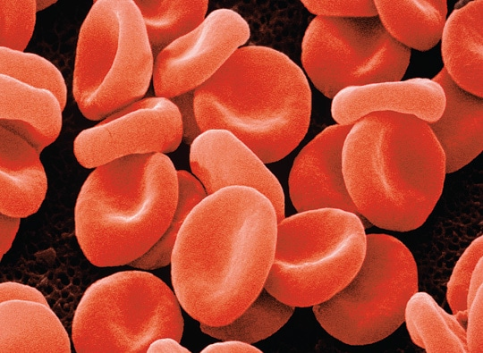

Life cycle of red blood cells
- Formation takes about 6 days: the immature cell fills with hemoglobin, pushes out its nucleus, takes the biconcave shape and leaves the marrow. The marrow makes about 2 million RBCs per second for life — over half a ton in a lifetime.
- An RBC lives about 120 days, traveling about 100 km (62 mi) of vessels. With no nucleus it cannot make proteins to replace key enzymes, so it grows rigid and fragile — probably what limits its life.
- The liver and spleen are the "graveyards": old, inflexible RBCs stick in their tiny channels and macrophages engulf and destroy them.
- The liver splits hemoglobin into globin, digested to amino acids that are reused, and heme. The heme's iron is salvaged and sent to the red marrow for reuse.
- The rest of the heme becomes bilirubin, a yellow pigment the liver excretes in bile → small intestine (where bile helps digest fats) → large intestine → feces, which get part of their color from bilirubin broken down by gut bacteria.
- Bruises: blood leaks from ruptured capillaries; as the tissue uses up its O2 it darkens to black or blue through the skin, and hemoglobin's breakdown products later turn it yellowish.
- RBC production normally matches destruction, by negative feedback:
- Less O2 reaches body cells (for example after blood loss).
- Certain kidney cells sense it and release the hormone erythropoietin Lecture (EPO).
- Erythropoietin speeds both stem-cell division and RBC maturation in the red marrow — at maximum, tenfold, to 20 million cells per second.
- The added RBCs raise O2-carrying capacity, which inhibits erythropoietin production.

White blood cells: defense against disease
- White blood cells (WBCs), or leukocytes (leuk-, white), do housekeeping — removing wastes, toxins and damaged or abnormal cells — and fight disease (Ch. 13).
- Under 1% of whole blood, yet essential. Counts rise as the body responds to microbes, so a WBC count is an index of infection.
- Made in red marrow; lymphocytes may also be made in lymph nodes and other lymphoid tissue.
- WBCs have a nucleus; RBCs and platelets do not.
- They leave the bloodstream by squeezing between the cells of vessel walls and roam the tissue spaces, drawn by chemicals from microbes or damaged cells to sites of infection, damage or inflammation. Some then engulf the offender by phagocytosis (phago-, to eat).
- Two groups, five types:
- Granulocytes — cytoplasmic granules, sacs of chemical weapons against pathogens, especially bacteria. Lecture Multilobed nuclei (deck slide 28).
- Agranulocytes — no granules, or very small ones.

Granulocytes
- Named for how their granules take stain (all WBCs are colorless): neutrophils take neither the acidic red stain eosin nor a basic blue stain; eosinophils turn pink with eosin; basophils stain purple.
- Neutrophils — the most abundant WBCs, the front-line soldiers: first to an infection, they phagocytose microbes at once and slow the spread.
- One dies after engulfing about a dozen bacteria, still releasing chemicals that draw more neutrophils.
- Pus — dead neutrophils, bacteria and cell debris, the yellowish liquid of infection.
- Eosinophils — defend against parasitic worms (tapeworms, hookworms); lessen allergies by engulfing antibody–antigen complexes and inactivating inflammatory chemicals.
- Basophils — release histamine, which draws other WBCs to the infection and dilates vessels so more blood flows there; also involved in some allergic reactions.
Agranulocytes
- Monocytes — the largest formed elements. They leave the blood, enter tissues and become macrophages, phagocytes that engulf microbes, dead cells and debris. Lecture Large kidney-shaped nucleus (deck slide 29; Table 11.1: U-shaped).
- Lymphocytes — two types. Lecture Small, little cytoplasm, round nucleus; both types work in adaptive immunity (deck slides 29, 34).
- B lymphocytes give rise to plasma cells, which make antibodies — proteins that recognize specific molecules called antigens on microbes or other foreign cells and help stop them harming the body.
- T lymphocytes — several types, each with a role in defense (Ch. 13). Lecture They kill cells not recognized as self — infected and cancerous cells (deck slide 36).
what monocytes fight; the §11.2 text says monocytes become macrophages that engulf microbes, dead cells and debris, while Highlighting the Concepts (p. 210) says the macrophages "actively fight chronic infections." "Chronic" appears only in the summary; the deck (slide 33) follows the text.
Platelets
- Platelets, or thrombocytes (thromb-, clot), are essential to clotting. They are fragments of megakaryocytes, which break apart in red marrow.
- About 200 billion released a day; they mature over about a week, then circulate 5–10 days.
- They hold several substances that stop blood loss from damaged vessels (§11.5).
11.3Blood Cell Disorders
pp. 205–206Overview
- RBC and WBC disorders have many causes; the problems depend on the cell type affected. Blood tests reveal them (Health Issue essay).

what a high WBC count indicates; the §11.2 text calls a WBC count an "index of infection," while Table 11.A reads high WBCs as "acute or chronic infection, leukemia." A difference of detail, not a disagreement; the table gives no row for low WBCs.
Disorders of red blood cells
- Anemia — reduced O2-carrying capacity, from too little hemoglobin, too few RBCs, or both.
- Symptoms: fatigue, headaches, dizziness, paleness, breathlessness. The heart often speeds up to compensate, which can cause palpitations (uncomfortable awareness of one's own heartbeat).
- Usually not life threatening, but it saps energy and productivity.
- Iron-deficiency anemia — the most common anemia worldwide: too little iron, so too little hemoglobin.
- Causes: a low-iron diet, poor iron absorption from the gut, or blood loss (menstrual flow, peptic ulcers).
- Treatment: deal with the cause and restore iron — iron-rich foods (meat, leafy green vegetables, fortified cereals) or iron pills.
- Hemolytic anemias — RBCs rupture, so more are destroyed than made. Causes: infections, membrane defects, mismatched transfusions, hemoglobin abnormalities. (Blood loss also lowers RBC counts.) Lecture Thalassemia is another (deck slide 39).
- Sickle-cell anemia — abnormal hemoglobin S makes RBCs deform into a crescent (sickle) when blood O2 is low (Ch. 20, Figure 20.12). The cells are fragile and rupture easily; they clog small vessels and promote clots, keeping O2 from the tissues and causing episodes of extreme pain.
- Pernicious anemia — RBC production stops or is impaired. Production needs vitamin B12, which the small intestine absorbs with the help of intrinsic factor from the stomach lining. With no intrinsic factor, B12 cannot be absorbed — so treatment is B12 injections.
Disorders of white blood cells
- Infectious mononucleosis ("mono") — a viral disease of the lymphocytes caused by the Epstein-Barr virus, common in humans but usually symptomless. It raises the number of atypical-looking lymphocytes.
- Spread by oral contact (the "kissing disease") and by shared utensils or glasses. Most common in teens and young adults, especially in dormitories, often at stressful times such as finals when resistance is low.
- Begins like flu — fever, chills, headache, sore throat, feeling very ill — and within days the lymph nodes of the neck, armpits and groin swell painfully.
- No treatment; it runs its course. Major symptoms ease in a few weeks; fatigue can last months or longer.
- Leukemia — cancer of the white blood cells: they multiply out of control and their numbers rise sharply.
- All descend from one abnormal cell, stay immature and cannot defend the body. Dividing faster than normal cells, they take over the marrow and block production of normal RBCs, WBCs and platelets.
- Symptoms: too few platelets → bleeding gums, frequent bruising; too few RBCs → anemia (chronic fatigue, breathlessness, pallor); nonfunctional WBCs → repeated respiratory, throat, herpes and skin infections; marrow packed with immature WBCs → bone tenderness; headaches, from anemia or abnormal WBCs in the brain.
- Treatment: radiation and chemotherapy to kill rapidly dividing cells; RBC and platelet transfusions for the anemia and bleeding.
- A bone marrow transplant now cures many with acute leukemia: the patient's marrow is destroyed by irradiation and drugs, and marrow from a closely matched donor, usually family, is given intravenously, finds its way to the marrow and grows. Stem cells from umbilical cord blood seem as effective at bringing some patients into remission (Ch. 19a).
11.4Blood Types
pp. 207–208Self, nonself and blood type
- Every body cell is labeled "self" by surface proteins. A cell without your self markers is nonself: its different surface proteins act as antigens that mark it for destruction, and one response is to make antibodies that target them.
- Blood type — classification by the presence or absence of certain molecules, mostly proteins, on the RBC surface.
ABO blood types
- Type A carries the A antigen only; type B, B only; type AB, both; type O, neither.
- Plasma has antibodies against the antigens its own RBCs lack: type A has anti-B, type B anti-A, type AB neither, type O both.
- Why these form without exposure is uncertain; bacteria or foods may carry enough A and B antigen to trigger them.
- Typing: one drop of blood is mixed with anti-A serum, another with anti-B, a third with anti-Rh. Clumping reveals that the matching antigen is present.
- Transfusion reaction: if donor cells carry antigens foreign to the recipient, the recipient's antibodies make them clump (agglutinate) — damaging, possibly fatal. Clumps lodge in small vessels and block flow, or burst and release hemoglobin that clogs the kidneys' filters and causes death.
- Compatibility — the recipient's blood has no antibodies against the donor's RBC antigens. The donor's own antibodies are diluted in the recipient's circulation and are not a major problem.
- Ask: what antigens are on the donor's cells, and what antibodies are in the recipient's blood? A type A recipient given B or AB blood: her anti-B clumps the donor cells.


| Type | Antigens on RBCs | Antibodies in plasma | Can receive RBCs from |
|---|---|---|---|
| A | A | Anti-B | A, O |
| B | B | Anti-A | B, O |
| AB | A and B | None | A, B, AB, O |
| O | None | Anti-A, Anti-B | O |
Rh factor
- Rh factor — a second important RBC antigen group, named for the rhesus monkey, in which it was first found. Antigens present: Rh-positive (Rh+); absent: Rh-negative (Rh–).
- Unlike anti-A and anti-B, anti-Rh antibodies form only after exposure to the Rh antigen. So an Rh– person should receive only Rh– blood.
- A mistaken first Rh+ transfusion causes no reaction — antibody production takes time — but starts it. A second meets those antibodies, which attack the donor RBCs and can kill the patient.
- Pregnancy: the risk is an Rh– mother carrying an Rh+ fetus, possible when the father is Rh+ (Ch. 20).
- The two bloods do not normally mix, but vessel damage at a miscarriage or delivery can let fetal Rh+ RBCs into the mother, who then makes anti-Rh antibodies. The first exposure usually does no harm.
- In a later pregnancy, antibodies already present (from an earlier Rh+ child or an Rh+ transfusion) cross the placenta — the organ that lets selected substances pass between maternal and fetal circulations, which RBCs cannot cross — and destroy the fetus's RBCs. The child may be stillborn or very anemic: hemolytic disease of the newborn.
- RhoGAM — a serum of antibodies against Rh antigens, injected at about the seventh month and shortly after delivery if the baby is Rh+.
- It destroys Rh+ fetal cells in the mother's blood before they stimulate her own anti-Rh production, so the antigen is never "set" in her immune memory.
- The injected antibodies disappear within a few months, leaving none to affect the next fetus. Hemolytic disease of the newborn has become less common as a result.

whether "Rh antigen" and "Rh factor" name different things; the text uses "Rh antigens," "the Rh antigen" and "Rh factor" interchangeably for one antigen group, and Figure 11.7's third serum is "Anti-Rh." Not a disagreement; the wording names one thing.
Blood donation
- Someone in the U.S. or Canada needs donated blood every 2 seconds.
- Donors: healthy, at least 17 (16 in some states), at least 110 lb, 10–20 minutes; generally painless. One pint per donation — plasma replaced within hours, cells within weeks.
- Separated into components: RBCs raise O2-carrying capacity, platelets help clotting, plasma helps control bleeding.
11.5Blood Clotting
pp. 209–210Three responses to a cut vessel
- The garden-hose analogy: (1) vessel constriction — the vessel squeezes shut, like squeezing a leaking hose; (2) platelet plug — a thumb over the leak; (3) clot formation.
- Platelet plug: platelets cling to collagen fibers on the torn vessel surface, swell, put out many extensions and stick together. They also make a chemical that draws more platelets and makes them stickier.
- Aspirin blocks that chemical, so it inhibits clotting. A daily aspirin may be prescribed to prevent clots that block the vessels feeding the heart and cause a heart attack — and it is why aspirin can cause excessive bleeding.
Clot formation
- More than 30 steps; the key events: 1. Clotting factors are released from injured tissue and platelets. 2. At the wound they convert an inactive blood protein to prothrombin activator (an enzyme, prothrombinase). 3. Prothrombin activator converts prothrombin, a liver-made plasma protein, to thrombin. 4. Thrombin changes fibrinogen, another liver-made plasma protein, into long strands of fibrin. 5. The fibrin web traps blood cells — the clot, a barrier to further blood loss.
- Lecture Deck slides 61–62: clotting factors act through an intrinsic pathway (damaged vessels, platelets) and an extrinsic one (injured tissue, platelets) that meet in a common pathway, which activates factor X to Xa — the prothrombin activator. Xa converts prothrombin (II) to thrombin (IIa). X and II are liver-made plasma proteins.
- If even one clotting factor is missing, clotting slows or stops. The liver needs vitamin K to make prothrombin and three other clotting factors, so without it there is no clotting.
- Two sources, both needed because tissues use it quickly: diet (leafy green vegetables, tomatoes, vegetable oils) and intestinal bacteria that make it. Antibiotics that kill gut bacteria can cause deficiency in as few as 2 days.

what the trigger chemical is called; the text and Figure 11.9 say "clotting factors" from injured tissue and platelets, while the Stop and Think box names one of them, "thromboplastin," from damaged tissue and activated platelets — a word the text never uses. The deck instead names factor X. Consistent, at different levels of naming.
how many stages clotting has; Highlighting the Concepts (p. 210) and the deck (slide 59) give three mechanisms — constriction, platelet plug, clotting — while Figure 11.9 shows five numbered steps within clotting alone. Different levels of detail, not a disagreement.
Too little clotting, and clots in the wrong place
- Hemophilia — inherited excessive bleeding from a faulty gene for a clotting factor. Losing any factor could cause it; the two most common types lack factor VIII or factor IX. Because of how it is inherited, it usually occurs in males (Ch. 20).
- Symptoms appear once the child is active: crawling bruises elbows and knees, and cuts bleed longer than normal. Internal bleeding can damage nerves; bleeding into joints can cripple permanently.
- Treatment replaces the missing factor — repeated transfusions of fresh plasma, or injections of concentrated factor pooled from 2000–5000 donations each. Factors VIII and IX are now made by recombinant DNA technology.
- Unwanted clots are more immediately dangerous — they disrupt blood flow.
- Thrombus — a clot lodged in an unbroken vessel.
- Embolus — a clot that drifts through the circulation until it sticks in a narrow vessel.
- A clot blocking small vessels of the heart or brain causes a heart attack or stroke, which can disable or kill.
- After the wound heals, the clot is dissolved by plasmin, an enzyme formed from the inactive protein plasminogen, which digests the fibrin framework.
Stop And Think
1Hepatitis, a liver inflammation caused by certain viruses or drugs, impairs the liver's handling of bilirubin, and one symptom is jaundice (yellow-toned skin). Why does hepatitis cause jaundice? (§11.2, pp. 200-204)
The liver normally excretes bilirubin, the yellow pigment left from heme breakdown, in bile. A damaged liver cannot clear it, so it builds up in blood and tissues and colors the skin yellow.
2Thrombocytopenia is a relative shortage of platelets. Why would it cause unusual bruising and bleeding? (§11.2, pp. 200-204)
Platelets plug vessel breaks and release clotting factors. With too few, small injuries are not sealed, so blood leaks into tissues (bruises) and bleeding lasts longer.
3Thromboplastin, a chemical that starts clot formation, is released from both damaged tissue and activated platelets. Why does a scrape, with lots of tissue damage, usually stop bleeding sooner than a clean cut such as a paper or razor cut? (§11.5, p. 209)
A scrape damages far more tissue, releasing more thromboplastin, so clotting starts faster and more strongly. A clean cut damages little tissue and releases less of the trigger.
4Heparin is a drug that inactivates thrombin and is given to inhibit clotting. How does it achieve this? (§11.5, p. 210)
Thrombin converts fibrinogen to fibrin. With thrombin inactivated, no fibrin strands form, no mesh traps blood cells, and no clot forms.
Figure Questions
1What blood type will agglutinate to each serum when mixed separately with sera containing anti-A, anti-B, and anti-Rh antibodies? (Figure 11.7, p. 207)
Each type clumps in the serum for each antigen it carries: A with anti-A, B with anti-B, AB with both, O with neither, and any Rh+ type also with anti-Rh. In panel (a): O+ clumps only in anti-Rh; A− only in anti-A; B+ in anti-B and anti-Rh; AB− in anti-A and anti-B.
End Of Chapter Questions
1Type B blood contains which antibodies?
a) anti-A b) anti-B c) both anti-A and anti-B d) neither anti-A nor anti-B
a
Plasma carries antibodies against the antigen its RBCs lack; type B lacks A, so anti-A (Table 11.2). Both antibodies (c) is type O.
2An important function of white blood cells is
a) blood clotting. b) transportation of oxygen. c) fighting infection. d) maintaining blood pressure.
c
WBCs defend against disease (§11.1, §11.2). Clotting (a) is the platelets' job.
3A condition in which the oxygen-carrying capacity of the blood is low is
a) infection. b) anemia. c) leukemia. d) a kidney problem.
b
Anemia is defined as reduced O2-carrying capacity (§11.3). Leukemia (c) can cause anemia but is a cancer of WBCs.
4A person whose blood type is AB-negative can
a) receive any blood type in moderate amounts except that with the Rh antigen. b) donate to all blood types in moderate amounts. c) receive types A, B, and AB, but not type O. d) donate to types A, B, and AB, but not to type O.
a
AB plasma has no anti-A or anti-B, so any ABO type; as Rh–, only Rh– blood (§11.4). (c) is wrong because AB can receive O.
5Platelets
a) stick to the damaged area of a blood vessel and help seal the break. b) have a life span of about 120 days. c) are the precursors of leukocytes. d) have multiple nuclei.
a
Platelets cling to collagen at the tear and form a plug (§11.5). The 120-day life span (b) belongs to RBCs; platelets last 5–10 days.
6The _____ regulates red blood cell production.
a) kidney b) spleen c) liver d) red bone marrow
a
Kidney cells sense low O2 and release erythropoietin (Figure 11.5). The red marrow (d) produces RBCs but does not set the rate.
7Hemolytic disease of the newborn will never happen to the child of an Rh-negative mother if
a) the child is type O-positive. b) the child is Rh-positive. c) the father is Rh-positive. d) the father is Rh-negative.
d
Two Rh– parents have an Rh– child, with no Rh antigen for maternal antibodies to attack (§11.4). An O-positive child (a) is Rh+, the at-risk case.
8Choose the incorrect statement about white blood cells.
a) They carry oxygen to the body cells. b) They can leave the capillaries and move through body tissues. c) They can help the body defend against disease. d) They are formed in red bone marrow.
a
RBCs carry O2, not WBCs. (b) is true and the likeliest to look false — Figure 11.6 shows WBCs leaving capillaries.
9Erin has leukemia and an elevated WBC count. Why is she at higher risk of infection? (open response)
Her extra WBCs are immature cancer cells that cannot defend the body.
Leukemic WBCs stay immature and crowd the marrow, so normal WBCs are not made (§11.3).
10José, a runner from New York City (sea level), plans to arrive in Denver (the Mile High City, less available O2) several weeks before a championship meet. Why? Would his RBC count be higher or lower than normal when he returns home? (open response)
To let his body make more RBCs; his count would be higher than normal on his return.
Low O2 delivery makes the kidneys release erythropoietin, raising RBC production up to tenfold; an RBC takes about 6 days to form, so it takes time, and the increase persists after he returns (Figure 11.5).
11Indira, 25, has uterine polyps causing heavy vaginal bleeding, tires easily and always feels fatigued. The doctor orders a test of the percentage of her blood that is RBCs. Why? Higher or lower than normal? Why iron supplements? (open response)
To check for anemia (a hematocrit); the percentage would be lower; iron is needed to make hemoglobin.
Blood loss lowers the RBC count and iron stores, giving iron-deficiency anemia and fatigue (§11.3; Health Issue essay).
12Raul, in a car accident, has type AB blood. Which blood types can he receive? (open response)
A, B, AB and O.
AB plasma has neither anti-A nor anti-B (Table 11.2). His Rh type is not given; if Rh–, only Rh– blood.
13Elizabeth is Rh-negative and pregnant for the second time. What does the doctor need to know about the first and second children to judge whether to expect a problem? (open response)
Whether the first child was Rh+ (and whether she got RhoGAM after that delivery), and whether the current fetus is Rh+.
Trouble needs earlier sensitization by Rh+ blood plus an Rh+ fetus now; RhoGAM after the first delivery prevents sensitization (Figure 11.8).
14Sarala was given an antibiotic that lowered her platelet count. What symptoms would be expected? (open response)
Easy bruising and prolonged or excessive bleeding.
Platelets plug vessel breaks and release clotting factors (§11.5; Table 11.A: low platelets, spontaneous bleeding). Antibiotics can also cause vitamin K deficiency by killing gut bacteria.
Boxed essays
Blood Tests: Important Clues in Diagnosis (§11.3, p. 205)
- Blood is a transport medium full of formed elements with distinct jobs, so changes in its makeup show the state of health (Table 11.A). Test categories: complete blood count (CBC), basic metabolic panel (BMP), blood enzymes, hormones.
- CBC: may include a hematocrit (percentage of blood that is RBCs) or a hemoglobin test — together, O2-carrying ability. RBC size and hemoglobin content identify the type of anemia; WBC numbers and types can point to an infection's source.
- BMP: blood glucose (high suggests diabetes mellitus, Ch. 10a); electrolytes — sodium, potassium, bicarbonate and chloride (fluid balance, nervous function, muscle contraction including the heart) and calcium (muscle contraction, neural communication); and blood urea nitrogen (BUN) and creatinine, normally filtered out by the kidneys, so abnormal levels suggest kidney disease.
- Heart health: triglycerides and LDL/HDL cholesterol predict heart-attack risk (Ch. 12a); after a heart attack, the enzyme creatine kinase (CK) and the protein troponin rise.
- Hormones (Ch. 10): abnormal levels cause problems, but not every change is abnormal — a pregnancy test detects human chorionic gonadotropin (HCG), made by the early embryo after implantation.
- Questions to consider: a blood test for 10 lipids released as brain cells break down predicts Alzheimer's within a few years with 90% accuracy — so 1 in 10 may be misdiagnosed with an untreatable condition. Would you test an elderly loved one? In Arizona, identical routine tests cost $15 to $1600 depending on the lab; how should cost be regulated?
Blood doping (§11.3, p. 206)
- Blood doping raises RBC numbers and so O2-carrying capacity: blood is drawn and stored, the body temporarily boosts RBC production, and the stored blood is returned.
- Used by some athletes in aerobic events (swimming, cycling) for endurance and speed; unethical and banned in Olympic competition, but hard to detect. Signs: an exceptionally high RBC count; erythropoietin in the urine. Tests catch only about 50% of dopers.
- Given how many escape detection, should those caught be punished?
Ashley (§11.5, p. 210)
- A college freshman whose diet has shifted from red meat to pasta; her mother says she looks pale; months of menstrual cramps and exceptionally heavy flow; no energy to hike.
- Most likely disorder: iron-deficiency anemia — less iron in (less red meat), more out (heavy menstrual loss), so too little hemoglobin; low O2-carrying capacity gives fatigue and paleness (§11.3).
- Recommendation: see a doctor about the heavy flow, and restore iron with iron-rich foods (meat, leafy green vegetables, fortified cereals) or iron pills.
Chapter 12 — The Cardiovascular and Lymphatic Systems
Captured from the Pearson eText. pp. 213–231.
Did you know
- Laughter is good medicine: blood pressure rises, then drops below normal. Laughing gives the heart a workout and can raise blood flow by 20%.
- Even asleep, your heart works twice as hard as your leg muscles do sprinting for the bus.
Opening
Ch. 11 was blood itself. Ch. 12 is how the heart pumps it through the blood vessels, and the vessels and organs of the lymphatic system. Heart, blood vessels and lymphatic system together make up the circulatory system. Ch. 12a takes cardiovascular disease. (p. 213)
The chapter as one chain
- A pump and a set of tubes. The body is too big for diffusion alone, so the heart and vessels move materials fast enough to sustain life.
- One circuit, each vessel built for its job — heart → artery → arteriole → capillary → venule → vein → heart. Elastic arteries take the surge; muscular arterioles set blood pressure and gate capillary beds; one-cell-thick capillaries exchange; thin-walled veins hold blood and return it with help from valves, muscles and breathing.
- Two pumps side by side. The right side drives the pulmonary circuit (lungs), the left the systemic circuit (body). AV and semilunar valves keep flow one-way; their closing is "lub-dup."
- The heart sets its own beat. SA node → atria → AV node → AV bundle → Purkinje fibers → ventricles, recorded by the ECG as P, QRS and T. Nerves and hormones only adjust the rate.
- Blood pressure peaks at ventricular systole (systolic) and bottoms out at diastole (diastolic); a cuff and gauge measure both.
- The lymphatic system closes the loop — it returns leaked tissue fluid to the blood, carries absorbed fats, and filters lymph through organs that defend the body (Ch. 13).
What to focus on
| Section | Slides | Share |
|---|---|---|
| 12.1 Cardiovascular System | 2 | 3% |
| 12.2 Blood Vessels | 20 | 28% |
| 12.3 Heart | 30 | 42% |
| 12.4 Blood Pressure | 4 | 6% |
| 12.5 Lymphatic System | 11 | 15% |
| Title, outline, objectives | 4 | 6% |
Ch12 AC SU19.pptx, 71 slides. Slide count per section is the best predictor of exam weight. The deck covers Ch. 12 only — no Ch. 12a slides.Whalen's objectives
From BIO 5 Study Guide CH 12.docx, in his order. One guide covers Ch. 12 and 12a; the disease objectives (thrombus and embolism, hypertension, aneurysm complications, atherosclerosis, stroke, myocardial infarction, smoking, HDL vs LDL) are on the 12a tab.
- The components of the cardiovascular system; the function of blood.
- Structure and function of arteries, arterioles, capillaries, venules and veins; how the aorta's structure suits its function.
- Pulse, vasoconstriction and vasodilation.
- How an aneurysm forms and the complications that may follow.
- How arterioles control blood pressure; how flow to capillary beds is regulated.
- Compare and contrast arteries and veins.
- The 3 mechanisms that move blood from the lower body, against gravity, to the heart.
- The structure of the heart — chamber arrangement, valves, walls.
- The factors that affect heart rate.
- The pulmonary circuit and the systemic circuit — structure and function; blood flow through the heart.
- Heart sounds; what may cause a heart murmur.
- How the heart receives nutrition and removes waste.
- The phases of the cardiac cycle.
- Blood pressure and how it varies within the cardiovascular system; recognise normal values.
- The SA node and how the stimulus for contraction is conducted; the functions of the AV node, AV bundles and Purkinje fibers.
- Ventricular fibrillation; other factors that set the heart's rhythm.
- Systolic and diastolic pressure.
- The functions of the lymphatic system; lymph; the structure of lymph vessels; elephantiasis.
- The structure and arrangement of lymphatic capillaries.
- Structure and function of lymph nodes, the spleen and the thymus; the functions of tonsils and Peyer's patches.
The deck's closing objectives (slides 70–71) are the same ground in six lines — list the cardiovascular functions, relate vessel structure to function, contrast gas exchange in the two circuits, the conduction system and cardiac cycle, systolic vs diastolic, and lymphatic structure and function.
12.1Cardiovascular System
pp. 214Pump and pipes
- Cardiovascular system — the heart, a muscular pump whose rhythmic contractions supply the force that moves blood, plus the blood vessels, the tubes it flows through.
- Blood brings a continuous supply of O2 and nutrients to the cells and carries away metabolic wastes before they poison them.
- Why it is critical: it is the body's highway network. The body is too large and complex for diffusion alone to distribute materials; this system moves them fast enough to sustain life.
- It is not a passive set of pipes. Heart rate and the diameter of certain vessels are adjusted continually to meet changing needs.
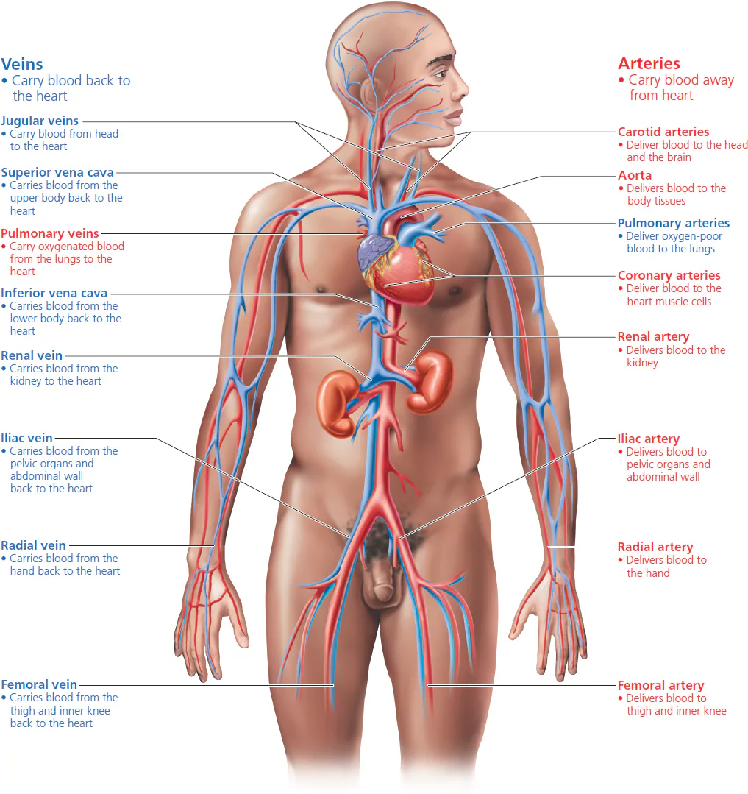
12.2Blood Vessels
pp. 215–219The circuit and what every vessel shares
- Blood completes the circuit about once a minute — about 1440 times a day. An adult's vessels laid end to end would run about 100,000 km (60,000 mi), more than twice around the equator.
- A branching network, not one tube: arteries carry blood away from the heart and branch into arterioles; arterioles lead into microscopic capillaries, where blood and cells exchange materials; capillaries merge into venules, which join into veins that return blood to the heart.
- Lumen — the hollow interior blood flows through.
- Endothelium — the inner lining of every vessel, simple squamous epithelium (Ch. 4); its smooth surface cuts friction.

Arteries and arterioles
- Arteries — muscular tubes carrying blood quickly away from the heart. Three layers:
- inner: endothelium.
- middle: elastic fibers, which let the artery stretch and recoil, and circular smooth muscle, which lets it contract.
- outer: connective tissue with elastic fibers and collagen, strengthening the wall and anchoring it to surrounding tissue.
- The elastic fibers let an artery tolerate the pressure shock of each surge and keep pressure fairly even despite large swings in volume.
- Each beat sends 70 mL (about ¼ cup) of blood against the wall of the aorta, the body's main artery. A rigid pipe could not take the repeated surges; the elastic wall stretches with each wave and recoils after it, turning intermittent waves into a continuous stream.
- Pulse — the pressure wave of that expansion and recoil, moving along the arteries with each beat. Pulse rate equals heart rate. Feel it by lightly pressing an artery near the surface — at the wrist or under the angle of the jaw.
- Vasoconstriction — the circular smooth muscle contracts, the lumen narrows, flow drops.
- Vasodilation — the muscle relaxes, the lumen widens, flow rises. Smooth muscle is best developed in small and medium arteries, which regulate how blood is distributed.
- Aneurysm — a weak spot in the arterial wall (from disease, inflammation, injury or a birth defect) that balloons outward under pressure.
- Most cause no symptoms. The main risk is bursting: blood loss, and the tissues it supplies lose O2 and nutrients — possibly fatal.
- Even unruptured, it can form life-threatening clots that break free and lodge in a small vessel, killing the tissue beyond. Some can be repaired surgically. Nicotine raises the risk of clots and aneurysms.
- Arterioles — the smallest arteries, barely visible. Same three layers, but the middle is mostly smooth muscle with few elastic fibers and the outer is much thinner.
- Prime controllers of blood pressure: contracting arterioles raise it — the more contracted, the higher — and relaxing them lowers it.
- Gatekeepers of the capillary networks: their smooth muscle opens or closes the network ahead, matching supply to the cells' immediate needs.
- They respond constantly to hormones, the nervous system and local conditions.
Capillaries
- Capillaries — microscopic vessels joining arterioles to venules; their main job is exchange between blood and cells.
- Walls one cell layer thick. The endothelial plasma membrane is a selective barrier; some substances instead filter through slits between adjacent cells, just large enough for some fluids and small dissolved molecules.
- Pressure differences drive the exchange.
- Arterial end: blood pressure filters fluid and nutrients out. Cells and most proteins are too large to leave.
- Pressure drops along the capillary.
- Venous end: plasma proteins draw fluid and wastes back in by osmosis.

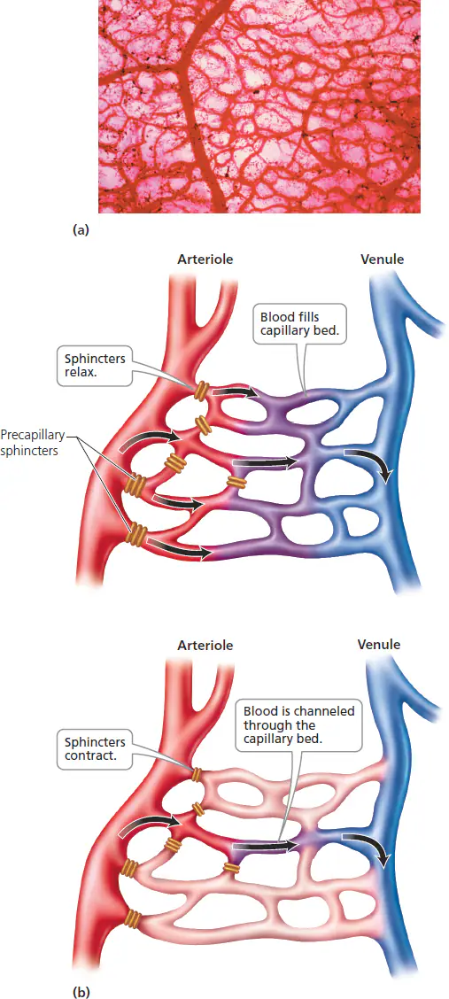

Veins and the return to the heart
- Venules form where capillaries merge and join into veins, which return blood to the heart.
- Same three layers as arteries, but thinner walls and larger lumens than an artery of the same size (Figure 12.2) — so veins are blood reservoirs, holding up to 65% of the blood.
- The return problem: veins must return as much blood as the heart pumps, without its high pressure. Gravity helps from the head and neck; blood from the foot must rise against it.
- Three mechanisms move blood up from below:
- Valves — one-way pockets of connective tissue projecting from the vein lining; they prevent backflow. Demonstration: let a hand hang until its veins swell, press a vein near the knuckles, squeeze blood toward the wrist with a second finger. Lift the knuckle finger and the vein refills at once; lift the wrist finger instead and it stays flat — the valves block backflow.
- Skeletal muscle contraction squeezes nearby veins and pushes blood past the valves, like squeezing a toothpaste tube anywhere. When the muscles relax, blood slipping back fills the valve pockets, which bulge into the lumen and close the vein.
- Breathing: inhaling enlarges the thoracic cavity (Ch. 14), lowering thoracic pressure and raising abdominal pressure. Blood moves toward low pressure, pulled up into the chest, and the squeezed abdominal veins push it toward the heart.
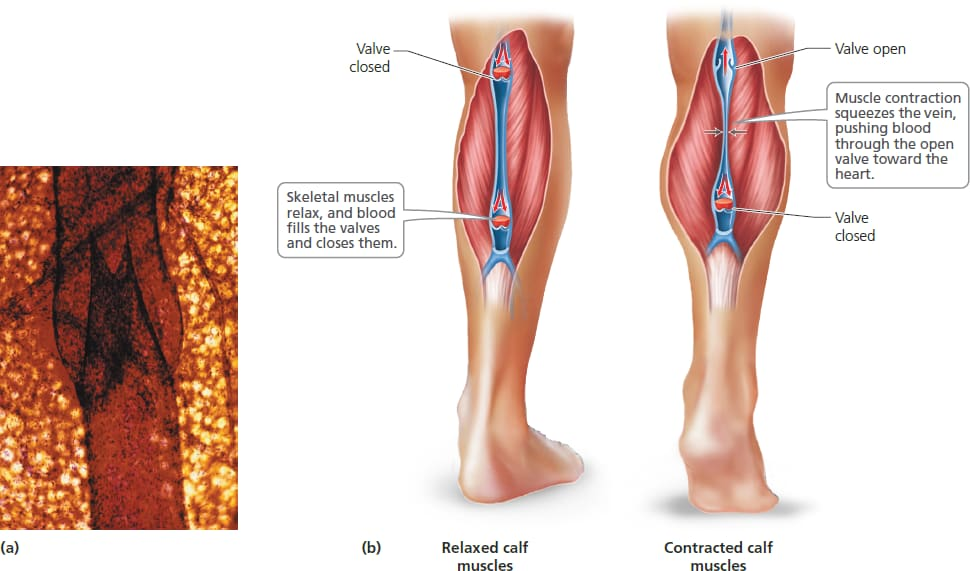
12.3Heart
pp. 220–224Structure
- About the size of a fist. About 72 beats/min, varying with age, fitness and exertion — over 100,000 beats a day, about 2 billion in a lifetime, without fatigue (try clenching a fist 70 times a minute). It pumps slightly under 5 L (10 pt) a minute, over 9400 L (2500 gal) a day.
- Myocardium — the wall, mostly cardiac muscle; its contractions do the pumping.
- Endocardium — thin lining of the chambers; its smooth surface reduces friction and resistance to flow. Lecture The deck glosses it as endothelium.
- Pericardium — thick fibrous sac holding the heart in the centre of the thoracic cavity; the heart slides inside it without hampering even vigorous movement.
- Septum — separates right and left halves. The right half pumps blood to the lungs for O2; the left pumps it to the body.
- Atrium (pl. atria) — the upper receiving chamber of each half, for returning blood. Lecture The deck: smaller and thin-walled.
- Ventricle — the lower chamber, the main pump. It forces blood out under great pressure, so it is much larger, with thicker, more muscular walls.
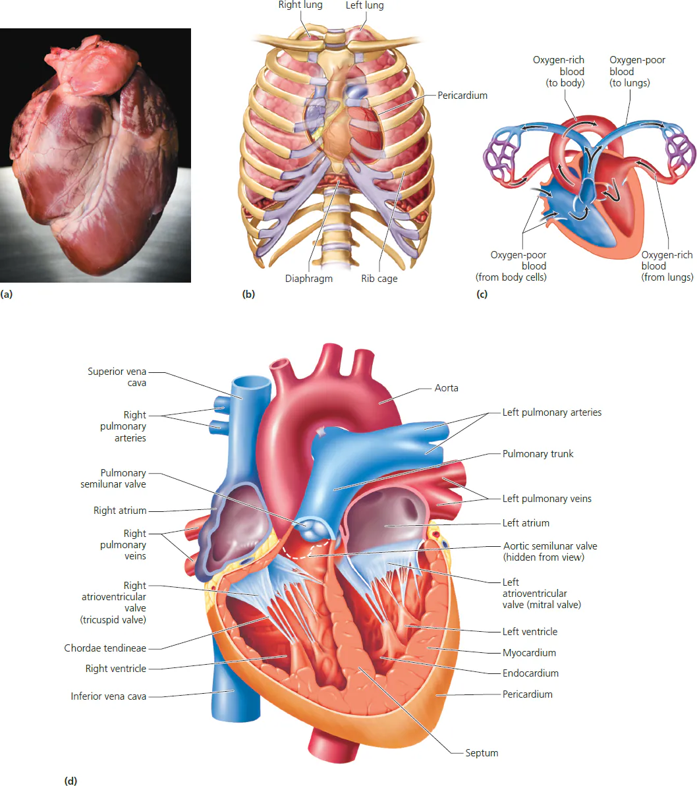
Valves
- Atrioventricular (AV) valves — one between each atrium and its ventricle. Their flaps (cusps) are connective tissue, anchored to the ventricle wall by the chordae tendineae ("heartstrings"), which keep them from flipping back into the atria when the ventricles contract.
- Right AV valve: three flaps, the tricuspid valve. Left: two flaps, the bicuspid or mitral valve.
- Semilunar valves — one between each ventricle and its artery (pulmonary semilunar → pulmonary artery; aortic semilunar → aorta). Their cusps are small pockets on the artery's inner wall; when arterial pressure exceeds ventricular pressure they fill like a parachute and close, preventing backflow into the ventricles.
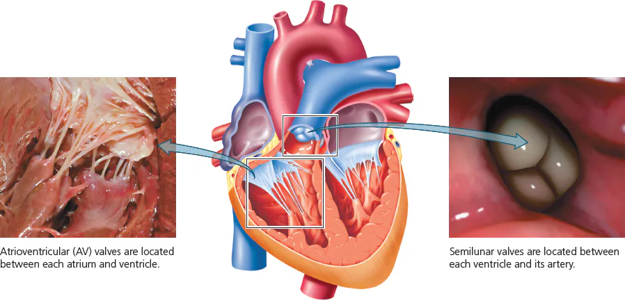
Two circuits
- The two sides pump through different routes, each arteries → arterioles → capillaries → venules → veins → heart. Keeping them apart stops O2-rich and O2-poor blood from mixing.
- Pulmonary circuit — the right side; to and from the lungs.
- O2-poor blood from the body enters the right atrium, then the right ventricle, which pumps it into the pulmonary trunk; this divides into the left and right pulmonary arteries.
- In the lungs O2 diffuses in and CO2 out. O2-rich blood returns to the left atrium through four pulmonary veins, two from each lung.
- The exception: here arteries carry O2-poor blood and veins O2-rich. "Artery" means away from the heart, not oxygenated.
- Right atrium → AV (tricuspid) valve → right ventricle → pulmonary semilunar valve → pulmonary trunk → pulmonary arteries → lungs → pulmonary veins → left atrium.
- Systemic circuit — the left side; to and from the body tissues.
- O2-rich blood enters the left atrium, then the left ventricle, which pushes it into the aorta, the largest artery. The aorta arches over the heart and branches to feed the capillary beds.
- O2-depleted blood returns to the right atrium through the superior vena cava (from above the heart) and the inferior vena cava (from below).
- Left atrium → AV (bicuspid or mitral) valve → left ventricle → aortic semilunar valve → aorta → body tissues → inferior or superior vena cava → right atrium.
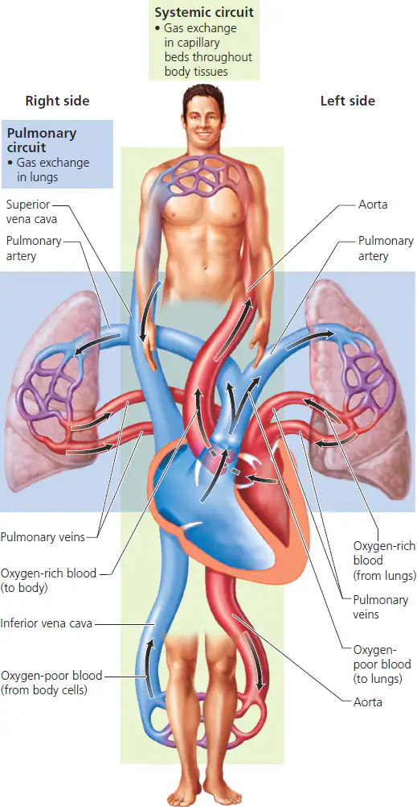
Heart sounds and murmurs
- "Lub-dup" — both sounds come from turbulent flow as valves close, not open.
- "Lub," the first: the AV valves snap shut as the ventricles begin to contract. So when the ventricles contract, the AV valves close and the semilunar valves open.
- "Dup," the second and higher-pitched: the semilunar valves close as ventricular relaxation begins.
- Heart murmur — a swooshing sound other than lub-dup, from disturbed flow. Sometimes heard in healthy people, but it can signal a problem; a common cause is a malfunctioning valve — thickened and narrowing the opening, or failing to close and letting blood flow back. Either way the heart must work harder.
Coronary circulation
- Coronary circulation — serves the heart muscle, which gets little nourishment from the blood in its own chambers.
- The coronary arteries are the first two branches off the aorta; they branch widely and supply rich O2 and nutrients.
- After the capillary beds, blood enters cardiac veins and flows into the right atrium.
- Lecture The deck adds a step: coronary veins drain into the coronary sinus, which empties into the right atrium. The book never names the sinus.

Cardiac cycle
- The two sides work in tandem: both atria contract together, then both ventricles together.
- Systole — the contraction phase of a beat; diastole — the relaxation phase.
- Cardiac cycle — all the events of blood flow through the chambers in one heartbeat:
- 1. Early diastole: all chambers relaxed; blood passes through the atria into the ventricles.
- 2. Later diastole: still relaxed; the ventricles fill passively.
- 3. Atrial systole, then atrial diastole: with the ventricles about 70% full, the atria contract to top them up, then relax.
- 4. Ventricular systole: the ventricles contract. Then the whole heart relaxes again.
- In 24 hours the heart spends about 8 hours contracting and 16 relaxing.

Internal conduction system
- The beat is intrinsic. A heart removed for transplant keeps beating in a dish until its tissues die; lab-grown cardiac cells beat on their own; two isolated cells that touch beat in unison.
- Intercalated disks — specialized junctions where neighbouring cardiac cell membranes interweave.
- Mechanical coupling: they hold the cells together so contraction's pull passes from cell to cell.
- Electrical coupling: through gap junctions (holes linking neighbouring cytoplasm, Ch. 4), so signals spread fast.
- The cells contract automatically but still need outside control to beat at the right rate.
- Sinoatrial (SA) node — the pacemaker: specialized cardiac muscle cells in the right atrium near where the superior vena cava enters. It sets the tempo, firing about 70–80 times/min (the resting heart rate of 72 falls in this range); the signal spreads through the atria, which contract.
- Atrioventricular (AV) node — in the partition between the atria; stimulated by the atrial signal, it relays it on.
- Atrioventricular (AV) bundle — specialized fibers along the wall between the ventricles, forking into right and left branches.
- Purkinje fibers — many specialized cells penetrating the ventricular walls; the rapid spread makes the ventricles contract smoothly.

what the bundle is called; the §12.3 text, Highlighting the Concepts, the deck (slide 47) and the study guide say "atrioventricular (AV) bundle," while Figure 12.12 — printed on deck slide 48 — labels it "Bundle of conducting muscle cells." Same structure; "AV bundle" is the name in every course source.
- Ventricular fibrillation — a faulty conduction system lets cells contract independently: rapid, irregular ventricular contractions. The ventricles become useless as pumps, circulation stops, the brain loses its blood, and death follows unless an effective beat returns quickly.
- Treated by electric shock, which often lets the SA node resume normal function. An implantable defibrillator is costly but gives a lifesaving "jump start." Lecture The deck: implantable defibrillators are the long-term measure.
- Artificial pacemaker — a small device under the skin that monitors rate and rhythm and, if the rate gets too slow, stimulates the heart through an electrode.
- Adjusting the rate: the autonomic nervous system and hormones match it to need. Under stress the sympathetic system raises rate and force, and adrenal-medulla epinephrine prolongs the effect; at rest the parasympathetic system dampens heart activity.
Electrocardiogram
- Body fluids conduct electricity, so the heart's electrical events reach the skin, where electrodes deflect a recording trace.
- Electrocardiogram (ECG or EKG) — that record of the heart's electrical activity.
- P wave: the signal spreading over the atria, followed by atrial contraction. Lecture Atrial depolarization.
- QRS wave: the signal spreading over the ventricles, and ventricular contraction. Lecture Ventricular depolarization.
- T wave: the ventricles returning to their pre-contraction electrical state — ventricular repolarization.
- In a healthy heart the pattern and timing are very consistent, so abnormal patterns indicate problems.

12.4Blood Pressure
pp. 225–226Systolic and diastolic
- Blood pressure — the force blood exerts against vessel walls. Ventricular contraction pushes blood into the arteries under great pressure, which drives it around the body but also pushes outward on the walls.
- Ideally high enough to circulate the blood but not so high it stresses the vessels and heart (Ch. 12a).
- Influenced by gender, age, time of day, physical activity, stress and lifestyle.
- Systolic pressure — the highest arterial pressure in a beat, during ventricular systole. Optimal 110–120 mm Hg.
- Diastolic pressure — the lowest, while the ventricles relax. Optimal 70–80 mm Hg.
- Written systolic over diastolic; optimal adult pressure is under 120/80. Lecture The deck calls the same ranges "normal" rather than optimal.
- mm Hg is the height in millimetres to which the pressure could push a column of mercury.
Measuring it
- Sphygmomanometer — an inflatable cuff around the upper arm, connected to a gauge of cuff pressure. It reads the pressure in the brachial artery, along the inner arm.
- The cuff is inflated until it compresses the artery, then slowly released.
- At first blood spurts through the narrowed artery only at peak pressure: the cuff pressure when tapping sounds are first heard is the systolic pressure.
- As cuff pressure keeps falling the sounds stop and flow is continuous: the cuff pressure when the sounds first disappear is the diastolic pressure.

12.5Lymphatic System
pp. 227–229Three functions
- Lymphatic system — lymph (a fluid identical to the interstitial fluid that bathes every cell), lymphatic vessels, and lymphoid tissues and organs scattered through the body.
- Function 1: return excess interstitial fluid to the blood. Blood capillaries reabsorb only 85–90% of the fluid that leaves them; the rest, up to 3 L a day, is taken up by the lymphatic system and returned.
- This maintains blood volume. Without it, tissues would swell, blood volume would fall to potentially fatal levels, and blood would become too viscous for the heart to pump.
- Elephantiasis — parasitic worms block lymphatic vessels; fluid builds up, connective tissue grows, and the region swells massively with darkened, thickened skin. A tropical disease spread by mosquitoes.
- Function 2: carry fat-digestion products from the small intestine to the blood. Too large for the intestinal blood capillaries, they enter a lymphatic vessel called a lacteal.
- Function 3: defend against disease-causing organisms and cancer (Ch. 13).

Lymphatic capillaries and vessels
- Lymphatic capillaries — a branching network of microscopic tubules between cells and blood capillaries in almost every tissue; the exceptions are teeth, bones, bone marrow and the CNS. Two differences from blood capillaries:
- They end blindly, like the fingers of a glove — drainage tubes that fluid enters at the "fingertips" and leaves one way only. Blood capillaries form continuous networks.
- They are much more permeable, so they take up fat-digestion products as well as excess fluid.
- They drain into larger, thicker-walled lymphatic vessels. Lymph re-enters the blood through two large ducts that join the large veins at the base of the neck (Figure 12.17 names them: the right lymphatic duct, from the upper right body, and the thoracic duct, from most of the body).
- Lymph moves slowly, with no pump, by the forces that move venous blood: skeletal muscle compressing the vessels; one-way valves like those in veins; thoracic pressure changes in breathing, pulling lymph up from the lower body; and gravity, from the upper body.
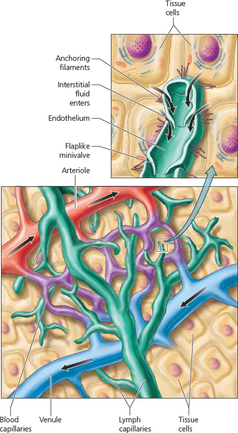
Lymph nodes and lymphoid organs
- Lymph nodes — small bean-shaped structures along the vessels that cleanse lymph as it filters through. They hold macrophages, which engulf bacteria, cancer cells and debris, and lymphocytes, the immune system's surveillance squad (Ch. 13).
- When lymphocytes detect bacteria or viruses they divide and the nodes swell; swollen, painful "glands" are a sign of infection.
- Spleen — the largest lymphoid organ.
- Red pulp: blood-filled sinuses where macrophages clear microorganisms and old or damaged RBCs and platelets; cleansed blood is stored there and released when more O2-carrying capacity is needed.
- White pulp: where lymphocytes meet pathogens.
- Thymus gland — in the chest. In early childhood it helps certain lymphocytes mature (Figure 12.17: T lymphocytes), and inside it they learn to tell "self" from "nonself."
- Tonsils — a ring of lymphoid tissue at the entrance to the throat guarding against inhaled or swallowed pathogens. The largest, at the back of the throat, are often infected in children (tonsillitis).
- Peyer's patches — isolated clusters of lymph nodules along the small intestine that keep bacteria from breaching its wall.
- Red bone marrow — where WBCs and the other formed elements are made; in the ends of long bones, the ribs, sternum and vertebrae.

whether the spleen produces lymphocytes; Figure 12.17 labels the spleen "Site of lymphocyte production," but the §12.5 text gives it only red-pulp clearing and storage and white-pulp lymphocyte–pathogen meeting, and never says it makes lymphocytes. The deck's spleen slide (66) gives only clearing of microorganisms, RBCs and platelets.
whether red bone marrow is a lymphoid organ or tissue; the book lists it with the lymphoid organs ("a lymphoid organ"), while the deck (slides 66–68) lists only the spleen and thymus as lymphoid organs and puts tonsils, Peyer's patches and red bone marrow under "lymphoid tissues."
Stop And Think
1A cut artery loses blood in rapid spurts, while a cut vein bleeds in an even flow. Why? (§12.2, p. 219)
Arterial blood is under high pressure that surges with each ventricular contraction (the pulse), so it spurts with every beat. Veins are far from the heart's pressure; their blood is under low, steady pressure and flows out evenly.
2Cancer cells that break loose (metastasis) easily enter the highly permeable lymphatic capillaries, and the lymphatic vessels can carry them almost anywhere. Why are lymph nodes examined to see whether cancer has spread, and why are nodes near the original site often removed? (§12.5, p. 229)
Lymph is filtered through the nodes, so escaping cancer cells are caught there first; cancer cells in a node show the cancer has begun to spread by the lymphatic route. Removing the nearby nodes takes out cells that may already be lodged there and could seed new tumors.
Figure Questions
1When the ventricles contract, which valves open and which valves close? (Figure 12.7 and Figure 12.8, pp. 220-221)
The AV valves (tricuspid and mitral) close — rising ventricular pressure snaps them shut and the chordae tendineae stop them flipping into the atria; this is the "lub." The semilunar valves (pulmonary and aortic) open as ventricular pressure exceeds arterial pressure, and blood is ejected into the pulmonary trunk and aorta.
End Of Chapter Questions
1The semilunar valves prevent the backflow of blood from the
a) arteries to the ventricles. b) veins to the atria. c) ventricles to the atria. d) arteries to the atria.
a
They sit between each ventricle and its artery and close when arterial pressure exceeds ventricular pressure. Ventricles to atria (c) is the AV valves' job.
2If you cut all the nerves to the heart but kept the heart alive,
a) the heart would stop beating. b) the heart would continue beating. c) only systole would occur. d) only diastole would occur.
b
The beat is intrinsic — the SA node sets it, and a heart in a dish keeps beating. (a) assumes nerves start the beat; they only adjust its rate.
3You are in the big toe traveling toward the heart. The last vessel you pass through before entering the heart is the
a) aorta. b) inferior vena cava. c) coronary artery. d) pulmonary vein.
b
Blood from below the heart returns to the right atrium by the inferior vena cava. Pulmonary veins (d) also enter the heart, but they come from the lungs.
4You are nearly deafened by the first heart sound, which is caused by
a) the opening of the atrioventricular valves. b) the closing of the atrioventricular valves. c) the opening of the semilunar valves. d) the closing of the semilunar valves.
b
"Lub" is the AV valves snapping shut as the ventricles begin to contract. (d) is the second sound, "dup."
5You are wearing sensitive equipment that may be damaged by high pressure. The blood pressure would be highest when you are in the aorta during
a) atrial systole. b) ventricular systole. c) atrial diastole. d) ventricular diastole.
b
Arterial pressure peaks when the ventricles contract — systolic pressure. Atrial systole (a) only tops up the ventricles.
6Heart tissue is nourished by
a) the SA node. b) the blood passing through the chambers of the heart. c) the chordae tendineae. d) blood in the coronary blood vessels (i.e., through the coronary arteries to capillaries).
d
The coronary circulation feeds the heart muscle. (b) is the trap: the muscle gets little from the blood in its own chambers.
7The second heart sound (dup) is the sound of the
a) pacemaker initiating its contraction. b) blood entering the aorta. c) closing of the semilunar valves. d) closing of the atrioventricular (AV) valves.
c
"Dup" is the semilunar valves closing as ventricular relaxation begins. (d) is "lub."
8The chordae tendineae
a) keep the semilunar valves open. b) keep the AV valves from being pushed into the atria during ventricular systole. c) stimulate the SA node. d) are part of the internal conduction system of the heart.
b
They anchor the AV cusps to the ventricle wall against ventricular pressure. (a) names the wrong valves — semilunar cusps have no chordae.
9Which blood vessels have the thickest, most elastic walls?
a) arteries b) capillaries c) veins d) venules
a
Arteries' middle layer is rich in elastic fibers and smooth muscle to take pressure surges. Veins (c) have the same layers but thinner.
10Functions of the lymphatic system include
a) transporting products of fat digestion from the small intestine to the bloodstream. b) defending against disease-causing organisms. c) returning excess interstitial fluid to the bloodstream. d) all of the above.
d
§12.5 lists all three — fluid return, fat transport, defense. Any single option is only one of them.
11Lymph nodes
a) are sacs filled with lymph. b) return excess interstitial fluid to the bloodstream. c) filter and cleanse lymph. d) are pumps that keep lymph flowing through lymphatic vessels.
c
Their macrophages and lymphocytes cleanse lymph as it filters through. (b) is the job of the vessels and ducts, not the nodes. Applying the Concepts — two open questions, p. 231.
12Nicotine in cigarette smoke causes vasoconstriction and increases heart rate. Explain how these lead to high blood pressure, and why smokers are more likely than nonsmokers to die of cardiovascular disease.
Narrowed vessels and a faster heart both raise pressure; over time that strains the heart and vessels, and nicotine also raises the risk of clots and aneurysms.
Contracted arterioles raise pressure and a faster heart pumps more blood per minute; high pressure stresses vessels and heart (Ch. 12a).
13Amelia aches all over and has swollen "glands" in her neck. You tell her they are not really glands, because they secrete nothing. What are they, and why are they swollen?
Lymph nodes, swollen because she has an infection.
Lymphocytes in the nodes divide when they detect bacteria or viruses, and the extra cells make the nodes swell. Finding and Evaluating Information (p. 231) — not multiple choice. - Atherosclerosis (fatty deposits that can block arteries, Ch. 12a) in the coronary arteries can starve heart muscle and cause a heart attack; cholesterol oxidation contributes. - Israeli researchers (Rosenblat et al., Food Funct., 2015) gave a pomegranate juice and date mixture to arterial cell cultures and to mice with atherosclerosis for three weeks. Cholesterol oxidation fell 33% and cholesterol accumulation in arterial cells 28%; they concluded high-risk people would benefit from half a glass a day. - Is that conclusion valid given the design? What limits it? Find another food or drink thought heart-healthy, give the evidence, and cite sources.
Boxed essays
Benefits of Cardiovascular Exercise (§12.4, pp. 225-226)
- Aerobic exercise — large muscle groups used rhythmically and continuously, raising heart and breathing rate for at least 15–20 minutes. It lowers the risk of heart attack, stroke, diabetes and cancer, controls weight, strengthens bones, relieves anxiety and improves memory; the essay covers only the cardiovascular effects.
- A more efficient pump: a trained heart beats more slowly at rest and in exercise, resting longer between beats, and pumps more blood per beat.
- More O2 to the heart muscle: the coronary arteries widen and its capillary beds become more extensive, speeding delivery and waste removal.
- Continuous flow: exercise boosts clot dissolving, releasing a natural anti-clotting enzyme active up to 90 minutes afterward, and builds collateral circulation — extra vessels giving alternative routes if one is blocked.
- Blood changes: more hemoglobin, blood volume and RBCs.
- Lower coronary artery disease risk: lower blood pressure, and more HDL, the "good" cholesterol carriers that remove cholesterol from artery walls.
- The prescription: intensity in the target zone, 70–85% of maximal heart rate (maximal = 222 minus age, as printed); at least 20 minutes; at least 3 days a week, no more than 2 days between sessions.
- Questions to consider: will you exercise regularly, and what will you weigh? Would promoting exercise now save medical costs later?
Infant heart transplants after cardiac death (§12.3, p. 224)
- In a controversial procedure, doctors removed the hearts of three infants whose hearts had stopped after they were taken off respirators; the hearts were transplanted into other infants and restarted.
- Legally, a heart can be taken only from a donor who has died. If the heart can be restarted, was the donor dead — or did removing it end the donor's life? Is it legal? Is it ethical?
Taisha (§12.5, p. 229)
- Taisha sleeps 8 hours a night but feels very tired and gets breathless quickly. Her physician hears a click and a murmur and diagnoses mitral valve prolapse: abnormally short (or long) chordae tendineae let the mitral valve bulge back into the left atrium as the heart contracts, pushing some blood back into the atrium.
- Why abnormal heart sounds? Heart sounds come from turbulence as valves close; a valve that does not close properly lets blood flow backward, which disturbs the flow (a murmur), and the bulging valve clicks.
- Why fatigue and breathlessness? Some blood goes back into the atrium instead of out the aorta, so less oxygenated blood reaches the body per beat; the heart works harder and the tissues get less O2.
Chapter 12a — Special Topic — Cardiovascular Disease
Captured from the Pearson eText. pp. 232–239.
- 12a.1 The Prevalence of Cardiovascular Disease
- 12a.2 Blood Clots
- 12a.3 Problems with Blood Vessels
- 12a.4 Heart Attack and Heart Failure
- 12a.5 Cardiovascular Disease and Cigarette Smoking
- 12a.6 Preventing Cardiovascular Disease
Did you know
- Heart disease causes one in every four US deaths each year. A stress test shows how your heart responds to exertion and can help you plan appropriate exercise.
- A man's primary heart attack symptom is chest pain; a woman's are nausea, indigestion and shoulder aches.
Opening
Ch. 12 covered the heart and blood vessels working in health. Ch. 12a covers the problems that arise in some common cardiovascular diseases. (p. 232)
The chapter as one chain
- Clots in the wrong place — where one lodges decides stroke, heart attack or pulmonary embolism.
- Damaged vessels — hypertension, aneurysm, and atherosclerosis, which in the coronary arteries is coronary artery disease.
- The end points — a heart attack kills muscle; enough damage leaves heart failure.
- Smoking feeds every step; five lifestyle changes prevent most of it.
What to focus on
No slides. Whalen's Ch12 AC SU19.pptx covers Ch. 12 only; its one disease slide (12.26, aneurysm, in the blood-vessel section) adds nothing beyond §12a.3. One study guide covers Ch. 12 and 12a together (BIO 5 Study Guide CH 12.docx, "CH. 12/12a"); these are the 12a objectives, in his order.
- Compare and contrast a thrombus and an embolism.
- The effects of hypertension on the heart.
- How an aneurysm forms, and its possible complications.
- Atherosclerosis — causes and possible complications.
- What a stroke is; what a myocardial infarction is.
- The effects of smoking on the cardiovascular system — specifically carbon monoxide and nicotine.
- The difference between HDLs and LDLs and how they correlate with cardiovascular disease.
- His terms list adds: tissue plasminogen activator, coronary artery disease, angina, coronary angiography, angioplasty, stent, coronary bypass, coronary thrombosis, heart failure.
12a.1The Prevalence of Cardiovascular Disease
pp. 233Who it kills
- Cardiovascular disease — disease of the heart and blood vessels — is the single biggest killer of men and women in the US.
- Slightly more men than women are affected, because until menopause estrogen gives women some natural protection.
- But women are twice as likely as men to die in the weeks after a heart attack: it is thought of as a male problem, so women and their physicians often miss the symptoms and treatment is delayed.
12a.2Blood Clots
pp. 234Thrombus and embolism
- Thrombus — a stationary clot formed on a vessel wall or in the heart; it may obstruct flow.
- The rough surface of an atherosclerotic plaque can damage platelets and trigger one.
- It can also form in the deep veins of the legs or pelvis when flow is sluggish after long inactivity (travel, surgery, illness).
- Embolism — a blocked vessel, often from a thrombus that breaks free, floats through the circulation and lodges in a small vessel, killing tissue beyond that point.
- In the brain, nerve tissue dies: a stroke.
- In the heart, heart muscle cells die: a heart attack.
- In the lungs, a pulmonary embolism blocks flow and prevents proper oxygenation of the blood.
- Lecture Whalen's Ch. 11 deck (slide 11.416) words it as two clots: an embolus is a clot that circulates, a thrombus a clot that lodges in a blood vessel. Ch. 11 also names the drifting clot an embolus; 12a's embolism is the blockage it causes.
Treatment
- Blood-thinning drugs (warfarin, heparin) reduce the chance of a clot forming.
- A clot already lodged in coronary, cerebral or pulmonary vessels must be dissolved fast: tissue plasminogen activator (t-PA) activates plasminogen to form plasmin, the clot-dissolving enzyme (Ch. 11). It should be given within 6 hours.
12a.3Problems with Blood Vessels
pp. 235–236High blood pressure
- Blood pressure (Ch. 12) is the outward push of blood on vessel walls, given as systolic (heart contracting) over diastolic (heart relaxing).
- Hypertension — high blood pressure, the "silent killer": no telltale symptoms, but fatal problems of the heart, brain, vessels or kidneys.
- Heart: working harder, it thickens and enlarges, then works less efficiently and needs more O2 and nutrients; if they cannot arrive fast enough, a heart attack can follow.
- Kidneys: blood flow through them drops, and they respond by secreting renin, which raises blood pressure further — an escalating cycle.
- Causes: about 90% of cases have no known cause, though many contributing factors are known. A found cause is sometimes the kidneys (poor sodium handling → fluid retention → more blood volume) or a sympathetic nervous system that overreacts to stress, constricting vessels and raising heart rate so more blood per minute meets more resistance.
- When to treat: most physicians agree 160/90 mm Hg is high and should be treated. A diastolic of 80–89 ("the higher end of normal") is uncertain: drugs may help but are usually for life, and the diagnosis can raise life-insurance premiums, so sometimes only lifestyle changes are recommended.
- Drugs each attack a different cause: diuretics cut blood volume by increasing excretion of sodium and fluid; other drugs dilate vessels when over-constriction is the cause.

where "high" blood pressure starts; the §12a.3 text says most physicians agree 160/90 is high and should be treated, while Figure 12a.1 shades "High" from 140 systolic or 90 diastolic and calls 120–139 / 80–89 "High normal." The diastolic bands agree (the text's 80–89 "higher end of normal"); the systolic cut-off does not.
Aneurysm
- Aneurysm — a weakened artery wall (from disease, inflammation, injury or a congenital defect) that balloons outward under the pressure of the blood. Common sites are arteries in the brain and the aorta.
- It may cause no symptoms, but it can burst, causing blood loss and starving tissues of O2 and nutrients, which can be fatal. Even unruptured, it can cause life-threatening clots.
- Detected by MRI or ultrasound; treated by surgical removal or by support with a coil or stent.

Atherosclerosis
- Atherosclerosis (ather-, yellow fatty deposit; sclerosis, hardening) — a build-up of fatty substances in artery walls, fuelled by an inflammatory response, not the simple plumbing clog once believed. Narrowing chokes off O2 and nutrients downstream.
- The process — the same inflammatory response that fights infection in a scraped knee (Ch. 13): 1. Injury to the artery wall — a bloodborne irritant (chemicals in cigarette smoke), cholesterol deposits in the lining, infection, or perhaps the rapid, turbulent flow of high blood pressure. 2. The damaged cells take up LDLs (low-density lipoproteins), the "bad" cholesterol — most likely when blood LDL is high. 3. The LDLs change chemically and make the lining recruit inflammatory chemicals and defense cells. 4. Growth factors from defense cells make the wall's smooth muscle divide, thickening the wall. 5. Other defense cells engulf LDLs, enlarge and form fatty streaks; as they keep scavenging lipids the streaks grow into plaque, a bumpy, fatty layer. 6. Plaque bulges into the channel and blocks flow, or expands outward into the wall. 7. Plaque has a fibrous cap, but the fat-filled cells secrete substances that weaken it; a small break lets the plaque rupture, triggering a clot.
- Restricted flow kills cells downstream — a heart attack in the heart, a stroke in the brain. Plaques do not always bulge and cause symptoms before they rupture, so heart attacks often strike people with no previous symptoms.

Cholesterol, and treating atherosclerosis
- Cholesterol is insoluble in plasma, so it travels bound to a protein, as a lipoprotein (blood tests, Ch. 15a). LDLs carry cholesterol to cells, where it can form deposits; HDLs (high-density lipoproteins) carry it away to the liver for disposal. So low LDL and high HDL predict low heart-attack risk.
- Treatment: a healthy lifestyle — weight control, regular aerobic exercise, a heart-healthy diet (Ch. 15a) — and drugs that lower blood pressure, lower cholesterol and prevent clots. Some physicians recommend a daily low-strength aspirin to reduce clotting.

| Measure | Desirable level |
|---|---|
| Total cholesterol | Less than 200 mg/dl |
| LDL ("bad" cholesterol) | Less than 100 mg/dl |
| HDL ("good" cholesterol) | 60 mg/dl or higher |
Coronary artery disease
- Coronary artery disease — atherosclerotic deposits in the coronary arteries, which feed the heart muscle; the underlying cause of the vast majority of heart attacks.
- Angina pectoris — chest pain from a temporary shortage of O2 to the heart, usually in the centre of the chest or slightly left; from Latin angere, "to strangle" — suffocating, viselike or choking.
- It starts with exertion or emotional stress, when demand outstrips coronary flow, and stops with rest. It causes no permanent damage, but each year up to 15% of people with angina later die of a heart attack.
- Diagnosis: usually angina symptoms plus a physical exam. Coronary angiography spots narrowed areas: a catheter (slender flexible tube) is threaded from an arm or leg artery to the heart, contrast dye is squirted into the coronary openings, and high-speed x-rays record its flow.
- Medicines: dilators such as nitroglycerin (some act only on coronary arteries) ease pumping and send more blood to the heart muscle; other drugs damp the heart's response to sympathetic stimulation, lowering its O2 need.
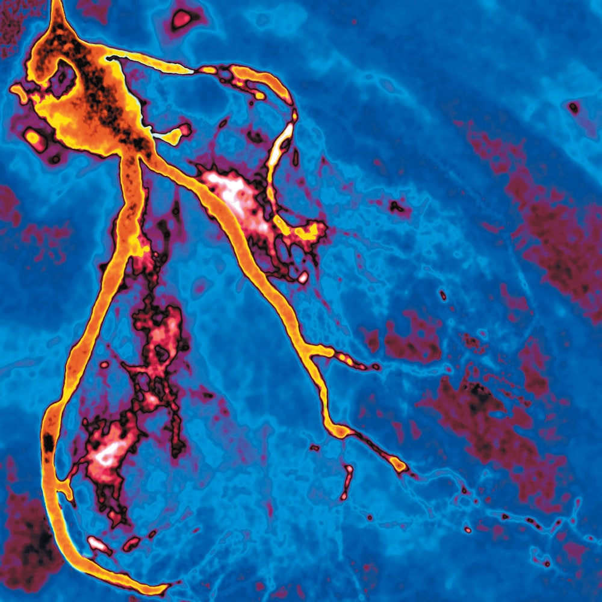
Surgery
- Balloon angioplasty — a tiny uninflated balloon on a catheter is pushed from an arm or upper-thigh artery to the blockage, tracked by x-ray, and inflated; it stretches the artery and presses soft plaque against the wall, widening the lumen.
- A stent (metal-mesh tube) is usually inserted afterward, keeping the artery from collapsing and stopping loose plaque being swept away.
- Stents raise the share of arteries that stay open, but they can trigger inflammation and some arteries reclog anyway; some stents slowly release drugs that lower that risk.
- Coronary bypass — a segment of leg vein is removed and grafted between the aorta and a coronary artery, so blood bypasses the obstruction.
- Often minimally invasive: small incisions take "arms" with a camera, light and tools, sometimes robotic, the surgeon watching a screen — shorter recovery and less infection, but longer surgery, so more risk.


12a.4Heart Attack and Heart Failure
pp. 237Heart attack
- Myocardial infarction — a heart attack: part of the heart muscle dies from insufficient blood supply (myocardial, heart muscle; infarct, dead tissue).
- Heart muscle cells begin to die if cut off for more than 2 hours. Effects spread: the brain gets too little O2, the lungs fill with fluid, the kidneys fail.
- WBCs swarm in to remove the damaged tissue; if the person survives, scar tissue replaces the dead muscle over about 8 weeks. Scar tissue cannot contract, so that part of the heart permanently loses pumping ability.
- Causes: most commonly coronary thrombosis, a clot blocking a coronary artery — unlikely unless plaque is already present (coronary artery disease). Also a clot formed elsewhere that lodges in a coronary artery, or a coronary artery spasm, a temporary constriction.
- Symptoms: chest pain is common, especially in men; unlike angina it is not necessarily brought on by activity and does not go away with rest.
- It may be a severe, crushing pain in the centre of the chest, spreading down one or both arms (usually the left) and up to the neck and shoulders.
- It may be too mild to recognize, and nausea and dizziness pass for an upset stomach. Severe pain may be "lucky": treatment in the first few hours can decide life or death.

Heart failure and transplant
- Heart failure — enough muscle is damaged that the heart is no longer an efficient pump: shortness of breath, fatigue, weakness, fluid in the lungs or limbs.
- The heart cannot be restored, but drugs treat the symptoms: digitalis strengthens contractions, diuretics cut fluid accumulation and the heart's workload, and other drugs relax constricted arteries, lowering resistance and blood pressure.
- Heart transplant — when drugs and bypass cannot stop progressive failure; generally only for patients younger than 80. It needs a donor heart with an acceptable tissue match; a heart-lung machine takes over circulation during surgery, and afterward drugs lessen the chance of rejection (Ch. 13).
12a.5Cardiovascular Disease and Cigarette Smoking
pp. 238What smoke does to the system
- Cardiovascular disease kills many more people each year than lung cancer. Smokers have a two- to threefold higher risk of heart disease; the American Heart Association estimates about 25% of fatal heart attacks — roughly 200,000 preventable ones a year in the US — are caused by cigarette smoke.
- Nicotine speeds the heart and constricts vessels, which raises blood pressure, and makes platelets stick together, raising the risk of abnormal clots that travel and lodge — heart attack or stroke.
- Carbon monoxide: smoke carries 1600 ppm, against the 10 ppm considered dangerous in industry, and it lingers in the blood up to 6 hours.
- CO stops RBCs carrying O2 (Ch. 11); one cigarette cuts the blood's O2-carrying capacity by about 12%, reducing delivery everywhere, brain and heart included, so the heart must work harder.
- Less O2 to the brain impairs judgment, vision and attention to sounds — hazardous for drivers.
- Atherosclerosis, two ways: 1. Smoking lowers HDL, the protective particles that carry cholesterol to the liver (and may remove it from cells), so more cholesterol clogs arteries. 2. Smoking raises blood pressure; the rapid, turbulent flow damages artery walls, making them prone to cholesterol deposits, which cause inflammation and so atherosclerosis. The narrowing starves downstream tissue and raises pressure further; deposits in the coronary arteries can reduce or shut off the heart's supply.
- Quitting: within 5 years, heart-disease risk falls 61% and stroke risk 42%.

12a.6Preventing Cardiovascular Disease
pp. 239Five changes
- Control weight — it helps control blood pressure; many overweight hypertensives benefit from losing just a few pounds, by a moderate, balanced diet, less fat and more activity.
- Exercise regularly — aerobic exercise (brisk walking, jogging, swimming, cycling) at least 20 minutes, at least 3 times a week lowers blood pressure and keeps it low.
- Do not smoke — nicotine raises heart rate and constricts vessels, both raising blood pressure.
- Eat a heart-healthy diet — limit saturated fats (animal sources) and trans fats (many commercial baked goods and fried foods), both of which raise LDL; choose low-fat proteins such as fish and legumes; eat plenty of "fats" (as printed — almost certainly fruits) and vegetables.
- Limit dietary salt — some people with hypertension can lower their pressure this way, because salt affects fluid retention and so blood volume.
- Ch. 13 turns to how the body defends itself against infectious disease.
Stop And Think
1C-reactive protein (CRP) is an inflammatory chemical released by injured cells in the artery lining. Why might CRP predict atherosclerosis better than blood cholesterol does? (§12a.3, p. 236)
Atherosclerosis is driven by an inflammatory response to injury in the artery wall. CRP measures that inflammation directly; cholesterol measures only one contributing factor.
2In a coronary bypass, why must the surgeon insert the grafted vein in the correct orientation? What would happen if it were put in backward? (§12a.3, p. 236; veins have valves, Ch. 12)
Vein valves let blood flow one way only. Inserted correctly, blood flows from the aorta through the graft to the coronary artery; backward, the valves close against flow from the aorta and no blood reaches the muscle beyond the blockage.
Boxed essays
Paying for a CRP test (§12a.3, p. 236)
- CRP is an excellent predictor of atherosclerosis, but drugs or behaviour changes cannot change it. Should patients who want the test pay for it themselves?
Lena (§12a.6, p. 239)
- Lena, 66: total cholesterol 309 mg/dL (very high), LDL 120, HDL 138. She asks whether to take cholesterol-lowering medicine; her doctor says her heart-attack risk is low. Why?
- Risk depends on which cholesterol. Her HDL (138), which carries cholesterol away to the liver, is far above the desirable 60+; her LDL (120) is only modestly above the desirable <100. Most of her high total is protective HDL.
Chapter 13 — Body Defense Mechanisms
Captured from the Pearson eText. pp. 240–258.
- 13.1 The Body's Defense System
- 13.2 Three Lines of Defense
- 13.3 Distinguishing Self from Nonself
- 13.4 Antibody-Mediated Responses and Cell-Mediated Responses
- 13.5 Steps of the Adaptive Immune Response
- 13.6 Active and Passive Immunity
- 13.7 Monoclonal Antibodies
- 13.8 Problems of the Immune System
Did you know
- Fighting an infection, your lymph nodes can swell to four times their normal size.
- The red, itchy bump after a mosquito bite is your defenses working.
Opening
Chs. 11–12 covered the cardiovascular and lymphatic systems and the white blood cells' roles in defense. Ch. 13 is how the body meets disease-causing organisms and other threats: three lines of defense, lasting resistance from illness or immunization, and the problems the immune system itself causes. (p. 240)
The chapter as one chain
- Defense targets anything not recognized as self — pathogens and cancer cells.
- Three lines. Surface barriers, then internal cells, proteins, inflammation and fever — both innate and nonspecific. The third, the immune response, is adaptive, specific, and remembers.
- Self is read from MHC markers. An antigen is a nonself molecule; each B and T cell has receptors for one antigen shape and, when it appears, divides into effector and memory cells.
- One sequence serves both branches — threat, detection, alert, alarm, building defenses, defense, surveillance, withdrawal. Antibodies handle free antigens; cytotoxic T cells handle infected, cancerous and transplanted cells.
- Memory makes the second response faster and stronger. Active immunity lasts; passive immunity is borrowed and brief.
- Misfires — autoimmunity attacks self, allergies overreact to harmless allergens, transplants are rejected.
What to focus on
| Section | Slides | Share |
|---|---|---|
| 13.1 The Body's Defense System | 2 | 2% |
| 13.2 Three Lines of Defense | 29 | 33% |
| 13.3 Distinguishing Self from Nonself | 8 | 9% |
| 13.4 Antibody- and Cell-Mediated Responses | 5 | 6% |
| 13.5 Steps of the Adaptive Immune Response | 21 | 24% |
| 13.6 Active and Passive Immunity | 4 | 5% |
| 13.7 Monoclonal Antibodies | 1 | 1% |
| 13.8 Problems of the Immune System | 13 | 15% |
| Title, outline, objectives | 5 | 6% |
Ch13 AC SP20.pptx, 88 slides, counted by slide title and number. Slide count per section is the best predictor of exam weight. The deck has no Ch. 13a slides. Shares are rounded.Whalen's objectives
From BIO 5 Study Guide CH 13.docx, in his order (the deck's closing slides 87–88 say the same more briefly). One guide covers Ch. 13 and 13a; the infectious-disease objectives, from virulence on, are on the 13a tab.
- List the 6 types of pathogens; how cancerous cells disrupt body functions.
- List and describe the 3 defense strategies and how specific each is.
- How physical barriers protect the body (2 examples); how chemical barriers do (2 examples); how defensive cells do (3 examples).
- The difference in function between neutrophils/macrophages and NK cells.
- How interferons protect the body; how complement proteins do (3 examples).
- The functions of the inflammatory response; its 4 symptoms and why each occurs.
- What a fever is and why it occurs.
- The purpose of the adaptive immune response and its 2 unique characteristics.
- How adaptive cells recognize self from nonself; describe an antigen.
- Production and maturation sites of B lymphocytes and of T lymphocytes.
- The functions of memory cells and of effector cells.
- The antibody-mediated and the cell-mediated immune response.
- The steps of the adaptive immune response — his mnemonic is TDAABFC.
- Antigen presentation and the cells that can do it; the role of MHC markers in it; the role of helper T cells in activation.
- Clonal selection; B-cell activation and the cells produced; the role of plasma cells; the ways antibodies defend (PLAN); the 5 immunoglobulins and their functions.
- T-cell activation and the cells produced; the roles of cytotoxic T cells, memory cells and suppressor T cells.
- Active immunity and passive immunity, each split into natural and artificial, with examples.
- What monoclonal antibodies are and their uses in diagnosis and treatment.
- Autoimmune disorders (3 examples); allergies; anaphylactic shock and its treatments.
13.1The Body's Defense System
pp. 241What gets attacked
- Pathogens — disease-causing bacteria, viruses, protozoans, fungi, parasitic worms and prions (infectious proteins; Ch. 13a).
- Most microorganisms are not pathogens. Many bacteria help: they flavor cheese and make yogurt, beer and pickles, decompose corpses and recycle nutrients, and some keep harmful bacteria in check inside us.
- Cancerous cells — once normal, but gene changes stop them regulating their own division. Unchecked, they take over: they upset the body's balance, choke its pathways, and cause great pain and sometimes death.
13.2Three Lines of Defense
pp. 242–244Three strategies
- The first line keeps invaders out — physical and chemical surface barriers. The second line attacks anything foreign that gets inside — internal cellular and chemical defenses. The third line, the adaptive immune response, destroys a specific target and remembers it.
- Lines one and two are nonspecific (they work against any foreign organism or substance) and innate (present from birth). The third is acquired — adaptive and specific, developing on exposure to things not recognized as belonging.

First line: physical and chemical barriers
- Unbroken skin is a suit of armor: its outer layer is dead cells filled with keratin, which waterproofs it and resists most invaders' toxins and enzymes, and tight connections bind the cells. About a million dead cells are shed every 40 minutes, carrying off microbes that latched on.
- Mucous membranes line the digestive and respiratory passages; sticky mucus traps microbes. In the upper airways, beating cilia move contaminated mucus to the throat to be swallowed, coughed or sneezed out.
- Chemical barriers:
- Skin — sweat and oil wash microbes away; their acidity slows bacterial growth, and the oils contain chemicals that kill some bacteria.
- Stomach — hydrochloric acid and protein-digesting enzymes destroy many pathogens.
- Vagina — beneficial bacteria keep it acidic, discouraging some pathogens.
- Urine — acidity slows bacterial growth; its flow flushes the lower urinary tract.
- Saliva and tears — lysozyme, an enzyme that kills some bacteria by disrupting their cell walls.

Second line: defensive cells
- Phagocytes (phag-, to eat; -cyte, cell) — soldiers and janitors — engulf pathogens, damaged tissue or dead cells by phagocytosis (Ch. 3): extensions flow out, bind the particle and pull it into a membrane-bound vesicle, where digestive enzymes destroy it.
- Neutrophils arrive first and eat pathogens immediately, especially bacteria.
- Macrophages (macro-, big) develop from monocytes that leave the blood for tissue fluid. Less discriminating, they eat virtually anything not recognized as belonging — viruses, bacteria, damaged tissue.
- Eosinophils, a second WBC type, attack pathogens too big to engulf, such as parasitic worms, by discharging enzymes at close range; macrophages clear the debris.
- Natural killer (NK) cells, a third WBC type, patrol like police on a beat. They seek no specific villain but any suspicious cell, such as one with unfamiliar membrane proteins — chiefly cancerous and virus-infected cells. Cancer cells form routinely, but NK cells destroy them before they spread.
- On contact the NK cell attaches and delivers a "kiss of death" — proteins that punch pores in the target, which leaks, cannot keep a constant internal environment, and bursts.


whether eosinophils count as phagocytes; deck slide 16 lists eosinophils under "Phagocytes cont.", while the §13.2 text calls them a second WBC type that attacks pathogens "too big to engulf", and Table 13.1 lists them apart from "phagocytic cells, such as neutrophils and macrophages".
Second line: defensive proteins
- Interferons slow viral reproduction. An infected cell cannot save itself, but before they die certain infected cells secrete these small proteins — a fire alarm with two prongs:
- they attract macrophages and NK cells, which destroy infected cells;
- they make neighbouring uninfected cells produce proteins that block viral replication — against all strains of viruses, not just the trigger.
- Medical use: they inhibit cancer cell division — used for hairy cell leukemia and Kaposi's sarcoma (common in AIDS); approved for hepatitis C (which can lead to cirrhosis and liver cancer), HPV (genital warts, cervical cancer) and genital herpes. Given at a first multiple sclerosis attack, they make recurrence less likely.
- Complement system — at least 20 proteins circulating inactive until infection activates them; they then enhance both nonspecific and specific defenses:
- destroy pathogens directly, punching holes so water enters and the cell bursts, as with NK cells;
- enhance phagocytosis — attracting macrophages and neutrophils, and coating the microbe so phagocytes can "get a grip";
- stimulate inflammation — widening vessels and making them more permeable, for more blood and WBC access.

whether complement stimulates histamine release; Table 13.1 lists complement's functions as "Stimulates histamine release; promotes phagocytosis; kills bacteria; enhances inflammation", while the §13.2 text never mentions histamine for complement — it says complement widens vessels and makes them more permeable.
Inflammation
- Inflammatory response — events after tissue injury that destroy invaders and help repair the tissue. Four cardinal signs:
- Redness — vessels dilate and blood flow rises. Histamine causes the dilation, released by mast cells (small, mobile connective tissue cells) in response to chemicals from damaged cells; it is also released in allergies. The flow brings phagocytes, clotting proteins and defensive proteins (complement, antibodies) and washes away dead cells and toxins.
- Heat — the extra blood warms the area, raising the local metabolic rate, which speeds healing and boosts defensive cells.
- Swelling — histamine also makes capillaries leaky, so fluid with beneficial substances seeps in. Clotting factors wall off the region, protecting nearby areas and limiting blood loss; oxygen and nutrient supply rises; in a joint, swelling hampers movement so it can rest.
- Pain — fluid pressing on nerves, bacterial toxins that may kill cells, and pain chemicals such as prostaglandins from injured cells. Pain makes a person protect the area.
- Drawn by chemicals from damaged tissue, neutrophils squeeze through capillary walls within minutes and engulf pathogens, toxins and dead cells; macrophages follow for the long-term counterattack and cleanup. Fluid, dead cells and microbes, tissue cells and phagocytes may ooze out as pus.

which sign hampers movement in inflammation; the §13.2 text says swelling hampers movement of an injured joint so it can rest, and pain makes a person protect the area, while Figure 13.6 puts it under "Pain: Movement is hampered, allowing the injured area to heal."
Fever
- Fever — abnormally high body temperature, caused by pyrogens (pyro-, fire; -gen, producer), chemicals that raise the set point of the brain's thermostat, the hypothalamus. Some bacterial toxins are pyrogens; the body also makes its own.
- The raised set point starts shivering (Ch. 4), hence chills as the fever rises; when the set point drops, the fever "breaks" and perspiring cools the body.
- Mild or moderate fever helps: the liver and spleen remove iron from the blood, which many bacteria need to reproduce, and the higher metabolic rate speeds defense and repair. Over 40.6°C (105°F) it is dangerous — it can inactivate enzymes the cell needs.
Third line: the adaptive immune response
- The adaptive immune response takes over when the first two lines fail. Lymphatic organs (Ch. 12) are key because they produce its cells, but the immune system is not an anatomical organ system — it is defined by its function, recognizing and destroying specific pathogens or foreign molecules.
- Two traits: it is directed at a particular pathogen (a child with measles immobilizes, neutralizes or destroys the measles virus), and it has memory (years later it attacks that virus so fast the child does not get measles again).
13.3Distinguishing Self from Nonself
pp. 245Self markers and antigens
- MHC markers — molecules in every body cell's plasma membrane, coded by the major histocompatibility complex genes, that label it self ("friend"). Yours differ from everyone's but an identical twin's and from other organisms', pathogens included. The immune system does not attack cells it recognizes as self.
- Antigen — a nonself substance or organism that triggers an immune response. Usually a large molecule (protein, polysaccharide, nucleic acid), often on an invader's surface (a bacterial membrane, a viral coat), though pieces of invaders and secretions such as bacterial toxins count too. Each is recognized by its shape.

which cells carry MHC markers; the §13.3 text says "each cell in your body" and Highlighting the Concepts says "All body cells", while the Figure 13.7 caption and deck slide 35 say "all nucleated cells".
B and T lymphocytes
- Lymphocytes give the adaptive response its specificity and memory.
- B lymphocytes (B cells) form in bone marrow and are thought to mature there.
- T lymphocytes (T cells) form in bone marrow and mature in the thymus gland, over the heart.
- T cells learn self: maturing T cells must recognize the person's own MHC markers without responding vigorously; those that do respond are destroyed. Mature T cells circulate checking cells' markers and pass by those with the proper ones.
- Specificity: each B and T cell is programmed in development for one antigen, and carries thousands of identical receptors of a shape unique to it, which the antigen fits like a key in a lock. Receptor diversity is so great that a few of your billions of lymphocytes can answer each of the thousands of antigens you will meet, even on first encounter.
- On detection, the matching B and T cells divide repeatedly into two lines:
- Effector cells attack; they live only days, so their numbers fall once the invader is gone.
- Memory cells live long, "remember" the invader and mount a rapid, intense response if it returns — why the same pathogen does not make you ill twice.
whether B cells mature in bone marrow; the §13.3 text and Highlighting the Concepts hedge ("It is thought that B cells mature in the bone marrow"), while deck slide 39 states flatly that B cells "form and mature in bone marrow".
how big an antigen is; the §13.3 text says antigens are typically large molecules (proteins, polysaccharides, nucleic acids), while the immunology-activity glossary calls an antigen "a small piece of biological material."
whether NK cells are lymphocytes; the glossary lists NK cells as lymphocytes (and the lab puts them in the lymphoid line), while §13.2 calls the NK cell "a third type of white blood cell" and never calls it a lymphocyte.
13.4Antibody-Mediated Responses and Cell-Mediated Responses
pp. 246Scouts, a commander, and two forces
- The military analogy: scouts report the enemy to a commander with a password proving they are not spies. The scouts are macrophages, nonspecific defenders roaming the tissues; the commander is the helper T cell, which, properly alerted, calls out the specific forces.
- Two branches, like an army and a navy, destroy the same antigens by different means:
- Antibody-mediated immune responses — mainly against antigens free in body fluids: toxins and extracellular pathogens such as bacteria or free viruses. Effector B cells, called plasma cells, make Y-shaped antibodies that bind the antigen, neutralize it and help remove it.
- Cell-mediated immune responses — against cellular threats: cellular pathogens, infected body cells, cancer cells. Activated cytotoxic T cells make their targets burst.
- Lecture Antibodies also opsonize — make the antigen recognizable (deck slide 44).
whether the two branches act at the same time; the §13.4 text says only that they recognize and destroy the same antigens by different means, while Highlighting the Concepts (p. 256) says they "simultaneously defend against the same antigen".
whether cytotoxic T cells destroy bacteria; the §13.4 text lists cellular pathogens, infected body cells and cancer cells and puts bacteria under the antibody branch ("extracellular pathogens such as bacteria"), while Table 13.2 says cytotoxic T cells destroy "infected body cells, bacteria, and cancer cells".
The cells and the steps, in summary


| Step | What happens |
|---|---|
| 1 Threat | A foreign cell or molecule enters the body. |
| 2 Detection | A macrophage detects the foreign cell or molecule and engulfs it. |
| 3 Alert | The macrophage puts antigen from the pathogen on its surface, finds the helper T cell with receptors for that antigen, presents it ("this is what the invader looks like"), and activates the helper T cell. |
| 4 Alarm | The helper T cell activates both lines of defense against that antigen. |
| 5 Building specific defenses (clonal selection) | Antibody-mediated: B cells divide into plasma cells that secrete antibodies specific to the antigen. Cell-mediated: T cells divide into cytotoxic T cells that attack cells bearing the antigen. |
| 6 Defense | Antibody-mediated: antibodies eliminate the antigen. Cell-mediated: cytotoxic T cells make cells with the antigen burst. |
| 7 Continued surveillance | Memory cells formed when helper T, cytotoxic T and B cells were activated remain, for a swift response if the antigen returns. |
| 8 Withdrawal of forces | Once the antigen is destroyed, suppressor T cells shut the response down. |
13.5Steps of the Adaptive Immune Response
pp. 247–251
how many steps the adaptive response has; Table 13.3 and the §13.5 text give eight, ending with withdrawal of forces (deck slide 67 covers it too), while Figure 13.8 numbers seven and Whalen's study-guide mnemonic TDAABFC has seven letters, stopping at continued surveillance, with F where the book's step is "Defense".
Threat to alarm
- Threat — an antigen lacking the self (MHC) marker gets past the first two lines.
- Detection — a roaming macrophage engulfs it and digests it into pieces.
- Alert — the macrophage binds the pieces to its MHC markers on its surface: the marker is its password, the antigen a "wanted poster" of the invader. That makes it an antigen-presenting cell (APC), as are B cells and dendritic cells (long-armed cells in lymph nodes).
- It must find a helper T cell with receptors for that antigen — a tiny fraction of T cells, a needle in a haystack — most likely in a lymph node (Ch. 12). It binds and secretes a chemical that activates the helper T cell, the main switch of the whole adaptive response.
- Alarm — within hours the helper T cell's own chemical messages call up the B and T cells with receptors for that antigen.

Building specific defenses: clonal selection
- Activated "naive" B or T cells (programmed for an antigen, not yet activated) divide repeatedly into a clone of genetically identical cells specialized against it — both effector and memory cells.
- Clonal selection underlies the whole response: only a few lymphocytes recognize any antigen; by binding one's receptors the antigen selects it, and it divides into a clone of millions. The bakery analogy: only sample cookies are displayed; a customer orders many of one, and only that kind is baked — so many kinds fit on display.

which step clonal selection belongs to; Table 13.3 and the §13.5 text make it step 5, "Building specific defenses (clonal selection)", while deck slides 52–53 put clonal selection under Alarm and slide 54's "Building specific defenses" covers only B cells forming plasma cells and T cells forming cytotoxic T cells.
Defense: the antibody-mediated response
- Activated B cells divide; their plasma cells secrete antibodies into the blood against antigens free in it or bound to a cell surface — mainly toxins and extracellular microbes (bacteria, fungi, protozoans).
- Each Y-shaped antibody fits one antigen: the proteins at the tips of the Y fit it like lock and key, and each antibody binds two identical antigens, one per arm.
- PLAN — how antibodies help:
- Precipitation — clumping antigens so they settle out, easing phagocytosis.
- Lysis — certain antibodies activate complement, which pokes holes in the target and bursts it.
- Attraction of phagocytes, which engulf the material.
- Neutralization — binding toxins and viruses so they cannot harm.
- Antibodies are immunoglobulins (Ig), in five classes — IgG, IgA, IgM, IgD, IgE: some single Ys (monomers), one class two joined (dimers), one five joined like wheel spokes (pentamers).
- Lecture Deck slide 61: IgG crosses the placenta and is longer-lived; IgM is the acute response; IgE handles parasites and allergies; IgA works locally (mucus); IgD is the only membrane-bound Ig. The book gives IgE no parasite role and IgG no longer life.


| Class | Structure | Location | Characteristics | Protective functions |
|---|---|---|---|---|
| IgG | Monomer | Blood, lymph and intestines | Most abundant antibody; in primary and secondary responses; crosses the placenta, giving passive protection to fetus and newborn | Enhances phagocytosis; neutralizes toxins; triggers complement |
| IgA | Dimer or monomer | Tears, saliva, mucus, secretions of the gastrointestinal and excretory systems; breast milk | Levels fall during stress, raising susceptibility to infection | Prevents pathogens attaching to epithelial cells of surface linings |
| IgM | Pentamer | On B cells as an antigen receptor; free in blood and lymph | First class released by plasma cells in a primary response | Powerful agglutinating agent (10 antigen-binding sites); activates complement |
| IgD | Monomer | Surface of many B cells; blood and lymph | Life span about 3 days | Thought to help recognize antigen and activate B cells |
| IgE | Monomer | Secreted by plasma cells in skin and the mucous membranes of the gastrointestinal and respiratory systems | Binds the surface of mast cells and basophils | Allergic reactions — triggers release of histamine and other chemicals from mast cells or basophils |
whether IgD is the only membrane-bound antibody; deck slide 61 says IgD is the "only membrane bound Ig", while Table 13.4 puts IgD on B cells and also free in blood and lymph, and puts IgM on B cells too, as an antigen receptor.
Defense: the cell-mediated response
- A cytotoxic T cell is programmed for one antigen bound to MHC markers — on a cellular pathogen, an infected or cancerous body cell, or transplanted tissue. Two events together activate it: meeting an antigen-presenting cell such as a macrophage, and a helper T cell's activating chemical. It then divides into memory and effector cytotoxic T cells.
- The effector releases perforins, which hole the target membrane; contents leak and the cell disintegrates. The T cell detaches and seeks another cell with that antigen.

what activates a cytotoxic T cell; the §13.5 text requires two signals together, an antigen-presenting cell and a helper T cell's chemical, while Figure 13.13 step 4 says "The helper T cell stimulates a naive or memory cytotoxic T cell to begin dividing", adding memory cells and leaving the APC signal implicit.
Continued surveillance and withdrawal
- Primary response (first encounter) — slow, because the few matching lymphocytes must be found and stimulated: antibodies rise after a lag of several days and peak 1–2 weeks after exposure.
- Secondary response (later exposure) — strong and swift. Memory B, memory cytotoxic T and memory helper T cells live years or decades, so many more lymphocytes are programmed for the antigen; each divides into new effector and memory cells, and effectors reach a higher peak within 2–3 days.
- Withdrawal — as antigen falls, suppressor T cells release chemicals that dampen B and T cells, turning the response off and perhaps keeping it from harming healthy cells.

how long the primary response takes; the §13.5 text and Figure 13.14 caption say antibodies peak 1 to 2 weeks after first exposure, Highlighting the Concepts (p. 256) says the primary response "may take several weeks to become effective", and the Figure 13.14 graph draws the primary peak at about day 20.
13.6Active and Passive Immunity
pp. 252Active immunity
- Active immunity — your body makes its own memory B and T cells after exposure to an antigen: naturally with an infection, or by vaccination (immunization), introducing a harmless form of an antigen.
- Lecture The deck names the routes natural (infection) and artificial (vaccination, receipt of modified antigens) — the split the study guide asks for (slides 70–71).
- Vaccines: a genetically engineered protein (hepatitis B — yeasts made to produce a pathogen protein; only antigen is injected, so it cannot cause disease); a killed microbe (whooping cough, typhoid fever); a live microbe weakened by repeated transfer in tissue culture, which allows unpredictable mutations; or a related, milder microbe (smallpox).
- Memory cells make it long-lived. The first dose gives a primary response (antibodies, some memory cells); since the system may "forget", especially inactivated antigens, a periodic booster triggers a secondary response and builds enough memory cells for a quick response.
- Vaccines have saved millions of lives, and worked so well against whooping cough and tetanus that many think those diseases are gone; most are not. Measles, declared eliminated in 2000, caused 164 US cases in 2015 outbreaks; whooping cough rose sharply in 2014. Children should be vaccinated on schedule; vaccine safety is Ch. 18a.
Passive immunity
- Passive immunity — protection from antibodies made by another person or animal.
- Some maternal antibodies cross the placenta and stay in the infant up to 3 months after birth, until it makes its own; breast-milk antibodies protect nursing infants, especially against pathogens entering through the intestinal lining. The mother has already met most pathogens that threaten a newborn, so this temporary blanket is critical.
- Injected antibodies act immediately. Gamma globulin, an antibody preparation, protects people exposed to hepatitis B or infected with the microbes of tetanus, measles or diphtheria, and is often given to travellers to places where viral hepatitis is common. But it is short-lived: the antibodies circulate 3–5 weeks and are destroyed, and with no memory cells made, protection ends.
- Lecture In the deck's terms, placenta and milk are natural, injection artificial (slide 72).

whether an antibody injection counts as a vaccine; the §13.6 text defines vaccination as introducing a harmless form of an antigen (active immunity) and calls injected antibodies such as gamma globulin passive immunity, while deck slide 72 lists "some vaccines — with antibodies to toxins" under passive immunity.
13.7Monoclonal Antibodies
pp. 253Identical antibodies as a tool
- An antibody goes straight to its antigen, so labelled with a radioactive tag or fluorescent molecule it shows whether and where the antigen is — given a supply of identical antibodies.
- Monoclonal antibodies — groups of identical antibodies that bind one specific antigen. Uses:
- home pregnancy tests, against human chorionic gonadotropin (HCG) (Ch. 18), secreted by membranes around the developing embryo;
- screening for Legionnaire's disease, hepatitis, certain STDs and certain cancers (lung, prostate);
- cancer treatment — a radioactive or chemical agent attached to an antibody that targets tumor cells, sparing healthy ones.
- Lecture The deck adds research as a use (slide 73).
13.8Problems of the Immune System
pp. 254–255Autoimmune disorders
- Defenses can misfire: autoimmune disease attacks the body's own cells, allergies defend against harmless substances, and the immune system rejects transplants (Health Issue essay, below).
- Autoimmune disorders — the immune system fails to tell self from nonself and attacks the body's own tissues: "friendly fire". Lymphocytes are programmed to attack one foreign antigen and tolerate self, and those that do not learn this are usually destroyed; some escape and act like time bombs — activated by a virus or bacterium, they may attack healthy cells as well as the invader.
- Organ-specific — one organ, usually from T cells gone awry: Hashimoto's thyroiditis (thyroid); type 1 diabetes (insulin-producing pancreatic cells; Ch. 10a).
- Non-organ-specific — body-wide, usually from B-cell antibodies gone awry: systemic lupus erythematosus attacks connective tissue, so almost any organ — skin lesions or rashes (notably a butterfly-shaped rash across nose and cheeks), heart (pericarditis), joints (arthritis), kidneys (nephritis), nervous system (seizures).
- Molecular mimicry — pathogens with pieces resembling normal proteins. Antibodies against the streptococci of a sore throat can also target similar molecules in heart valves and joints: rheumatic fever.
- Treatment: correct the deficiencies the disorder causes, and depress the immune system with drugs.
Allergies
- Allergy — an immune overreaction to a usually harmless antigen, an allergen.
- Allergic rhinitis (rhin-, nose; -itis, inflammation), hay fever — the most common allergy, caused by neither hay nor fever. Inhaled pollen, mold spores, animal dander or dust-mite feces trigger sneezing, congestion, and red, watery eyes.
- Asthma — the same allergens can constrict the bronchioles (small airways), making breathing hard.
- Food allergies — nausea, vomiting, cramps, diarrhea, and sometimes hives (temporary red, swollen skin patches).
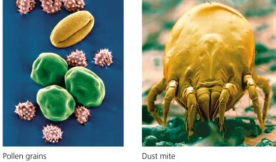
The allergic reaction
- First exposure: a primary response in which plasma cells make IgE, which binds basophils or mast cells.
- Later exposures: the allergen binds that IgE and the cells release histamine from their granules — more each time. Histamine widens vessels (redness), makes them leaky (swelling), releases floods of mucus (runny nose), and contracts internal smooth muscle (in the airways, an asthma attack).
- Lecture The deck adds itching (slide 80).
- Anaphylactic shock — the allergen spreads and effects go body-wide within minutes: blood pools in capillaries — dizziness, nausea, sometimes unconsciousness, extreme difficulty breathing. It can be fatal; most survive. Triggers: certain foods; medicines such as penicillin; insect stings (bees, wasps, yellow jackets, hornets).
- Lecture The deck names vasodilation/swelling and bronchoconstriction, and shellfish and peanuts as the foods (slides 82–83).

which antibody class causes allergies; §13.8, Figure 13.17, Table 13.4, Highlighting the Concepts and deck slides 79–80 all say IgE binds mast cells and basophils and triggers histamine release, with IgG appearing only in desensitization, where it blocks the reaction — while the Finding and Evaluating Information passage (p. 258) says plasma cells produce "IgG antibodies" that bind basophils or mast cells, and blames the transfusion case on donor IgG.
which cells IgE attaches to; the §13.8 text and deck slide 79 say "either basophils or mast cells", while Figure 13.17 step 3 says only "IgE antibodies attach to mast cells, which are found in body tissues".
Finding, avoiding and treating allergies
- Testing — small amounts of suspected allergens are injected into the skin; a red welt marks the culprit.
- Avoidance — indoors in pollen season with air-conditioned air, though mold in air conditioners and humidifiers is itself a trigger. Strawberries or shellfish are easy to avoid; peanut oil hides in stew, chili, baked goods and meat patties.
- Antihistamines block histamine. Best taken before the reaction; allergies grow less responsive to them, and most cause drowsiness — dangerous when driving.
- Epinephrine auto-injectors (EpiPens), for extreme allergies — epinephrine constricts vessels and keeps blood pressure from dropping dangerously.
- Desensitization — shots of gradually increasing allergen. They raise IgG, which binds the allergen before it reaches the IgE on mast cells, so no reaction.
- Ch. 13a covers the infectious organisms that cause disease.
GLOSSARY
Immune-system glossary from the online immunology activity, in its own alphabetical order. Its definitions are its own, not the textbook's; where it disagrees with the book, the disagreement is flagged in §13.3.
Key terms
- Activation
- A process by which a cell changes or gains functions in response to a stimulus.
- Adaptive immune cell
- An immune cell involved in the adaptive immune response. Includes B cells and T cells.
- Adaptive immune response
- One of the two main ways in which the immune system responds to pathogens. Provides long-lasting protection against specific pathogens but may take longer to start.
- Antibody
- A small protein that binds to a specific antigen. Antibodies are made by plasma cells and help the immune system fight pathogens in various ways. The human immune system can generate billions of types of antibodies.
- Antigen
- A small piece of biological material (protein, carbohydrate, lipid, or nucleic acid) that can be recognized by the immune system. Antigens from pathogens or abnormal cells trigger an immune response.
- Antigen-MHC complex
- An antigen bound to an MHC protein on the surface of a cell. T cells must bind to a specific antigen-MHC complex in order to activate.
- Antigen-presenting cell (APC)
- A cell with an antigen bound to an MHC protein on its surface. APCs interact with T cells to trigger an immune response. The most common APCs are dendritic cells.
- Apoptosis
- A process by which a cell destroys itself. Involves several chemical reactions that make the cell change appearance and then die. Apoptosis is often used to kill cells that are unneeded or abnormal.
- Autoimmune disease
- A condition in which the immune system mistakenly attacks the body's healthy, normal cells.
- Basophil
- An innate immune cell that circulates in the blood and is involved in inflammation.
- B cell
- An adaptive immune cell that helps target and destroy specific pathogens. After being activated by T cells, B cells differentiate into plasma cells to produce antibodies.
- B cell receptor (BCR)
- A protein on the surface of a B cell that binds to a specific antigen. Plays a major role in B cell activation.
- Bone marrow
- A spongy tissue in certain bones. Contains stem cells that develop into immune cells and red blood cells.
- Cell-mediated immune response
- The processes of the adaptive immune response that play a major role in destroying infected cells through cytotoxic T cells.
- Complement proteins
- A group of proteins in the blood that help destroy pathogens and infected cells. They can damage pathogens directly or attract other immune cells to the site of an infection.
- Cytokines
- Small proteins released by cells to communicate with other cells. Some cytokines alert immune cells to an infection or activate certain immune cells.
- Cytotoxic T cell
- A type of T cell that kills infected cells by making them undergo apoptosis.
- Dendritic cell
- A type of phagocyte (innate immune cell that engulfs and destroys pathogens). Dendritic cells "display" antigens from the pathogens they engulf in order to activate other immune cells.
- Digestive system
- The organs and tissues involved in eating and breaking down food, absorbing nutrients into cells, and eliminating wastes.
- Differentiation
- A process that switches a cell from one type to another, typically more specialized type. Differentiation is caused by changes in gene expression that are often triggered by chemicals, including cytokines and hormones.
- Engulf
- A process in which certain cells, called phagocytes, surround and take in large particles (such as pathogens). The phagocyte extends its outer membrane around the particle, forming an enclosed structure called a vesicle that brings the particle into the cell.
- Eosinophil
- An innate immune cell that destroys large pathogens, such as parasites, by releasing damaging molecules and chemical signals (cytokines).
- Helper T cell
- A type of T cell that activates other immune cells, including B cells and cytotoxic T cells.
- Histamine
- A small molecule released by mast cells to trigger inflammation. Histamine makes blood vessels "leaky," which allows immune cells and fluid to move from the blood vessels into body tissues.
- Humoral immune response
- The processes of the adaptive immune response that involve antibodies (also known as the antibody-mediated response). These processes make and use antibodies to fight specific pathogens. They include B cell activation and differentiation into plasma cells, which produce antibodies.
- Immune cells
- Cells that are part of the immune system. Sometimes also called white blood cells or leukocytes.
- Immune response
- The processes that the immune system uses to fight pathogens. Includes two main parts, the innate and adaptive immune responses, and involves many cells and organs.
- Immune system
- A group of organs, tissues, cells, and molecules that protect the body from pathogens.
- Immunocompromised
- A condition in which the immune system is "weakened" and less effective at fighting pathogens. A person could become immunocompromised due to certain medications, medical conditions, viral infections, etc.
- Inflammation
- A process in the innate immune response that helps the body fight pathogens and repair tissue damage. Inflammation is triggered by injury or infection and can result in redness, pain, and swelling.
- Innate immune cell
- An immune cell involved in the innate immune response. Includes phagocytes (macrophages, neutrophils, dendritic cells, etc.), mast cells, and natural killer (NK) cells.
- Innate immune response
- One of the two main ways in which the immune system responds to pathogens. Provides immediate protection but cannot target specific pathogens.
- Lymph
- A fluid similar to blood that circulates throughout the body. Lymph contains immune cells but not red blood cells.
- Lymph nodes
- Small organs throughout the body that contain many immune cells. Lymphatic vessels connect through lymph nodes.
- Lymphatic vessels
- Thin "tubes" that carry a fluid called lymph throughout the body. Lymphatic vessels are similar to blood vessels but do not contain red blood cells.
- Lymphocyte
- A type of immune cell. Includes T cells, B cells, and natural killer (NK) cells.
- Lymphoid organs
- A group of organs that produce or contain large numbers of immune cells. Examples include the bone marrow, thymus, lymph nodes, spleen, and tonsils.
- Macrophage
- An innate immune cell that plays many roles. Macrophages are phagocytes that engulf and destroy pathogens and abnormal cells. They can also release chemical signals (cytokines) to attract other immune cells.
- Major histocompatibility complex (MHC) protein
- A protein that binds to antigens and "displays" them on the surface of a cell. Phagocytes use MHC proteins to "display" antigens from pathogens.
- Mast cell
- An innate immune cell that plays a major role in inflammation. Releases chemical signals (histamine) that help fluid and immune cells move from the blood vessels into tissues.
- Memory cells
- Long-lived B and T cells that are made the first time a pathogen infects the body. If the body is reinfected by the same type of pathogen, memory cells provide a faster, stronger adaptive immune response.
- Microbe
- A microscopic organism. Includes viruses, bacteria, archaea, fungi, and parasites. Some microbes are helpful, and others cause disease.
- Microbiome
- The community of microbes that live in and on the body, including fungi, bacteria, protozoa, and viruses. These microbes usually don't cause disease and are sometimes beneficial.
- Monocyte
- An innate cell that differentiates into macrophages. Like macrophages, monocytes are phagocytes that engulf and destroy pathogens and abnormal cells.
- Mucous membrane
- A thin tissue containing cells that make mucus. Mucous membranes line the digestive system (gut), respiratory system (airways), and urogenital tract.
- Mucus
- A sticky, slimy substance produced by certain cells. Protects tissues by trapping pathogens and contains antimicrobial enzymes and antibodies.
- Natural killer (NK) cell
- An innate immune cell that kills infected and abnormal cells. Can release chemical signals (cytokines) that cause other cells to undergo apoptosis.
- Neutralization
- A process by which antibodies bind to a pathogen and block it from interacting with and infecting the body's cells.
- Neutrophil
- An innate immune cell. Typically the first cell type to respond to pathogens, particularly bacteria and fungi. Chemical signals (cytokines) can attract neutrophils and make them multiply.
- Pathogen
- A microbe that causes disease. Can include bacteria, viruses, fungi, or parasites.
- Phagocyte
- An innate immune cell that engulfs and destroys pathogens and abnormal cells. Includes neutrophils, monocytes, macrophages, and dendritic cells.
- Phagocytosis
- A process by which immune cells called phagocytes engulf and destroy pathogens and abnormal cells. Parts of the destroyed pathogens or cells may be absorbed by the phagocyte, released, or displayed on the phagocyte's MHC proteins.
- Plasma cell
- A type of adaptive immune cell that produces antibodies. Each plasma cell makes an antibody for a specific antigen and makes several thousand copies of this antibody per second. Plasma cells come from activated B cells.
- Primary immune response
- How the immune system responds the first time it encounters a specific pathogen.
- Progenitor cells
- Cells that come from stem cells and can then differentiate into other cell types. Lymphoid progenitor cells differentiate into lymphocytes, and myeloid progenitor cells differentiate into other immune cells and red blood cells. Both types of progenitor cells come from stem cells in the bone marrow.
- Receptors
- Proteins in and on the membranes of cells. Receptors bind to specific molecules, such as antigens, to send signals between or within cells.
- Respiratory system
- The organs and tissues that allow you to take oxygen into the body and release carbon dioxide.
- Secondary immune response
- How the immune system responds the second (or any subsequent) time it encounters a specific pathogen. This response is faster and more powerful than the immune system response when it first encounters the pathogen.
- Self-antigen
- A small piece of biological material (protein, carbohydrate, lipid, or nucleic acid) that is part of the body or its cells. The body destroys immune cells that bind to self-antigens.
- Skin
- The body's thick outer layer. Acts as a physical barrier to pathogens and also makes some antimicrobial substances.
- Spleen
- An organ above the stomach that helps filter the blood. Contains immune cells that break down dead and dying red blood cells to recycle their parts.
- Stem cells
- A cell that can develop into a variety of other cell types. Stem cells in the bone marrow can develop into immune cells and red blood cells.
- T cell
- An adaptive immune cell that helps the body respond to specific pathogens. Upon recognizing a specific antigen, T cells differentiate into helper T cells and cytotoxic T cells.
- T cell receptor (TCR)
- A protein on the surface of a T cell that binds to a specific antigen (but only when the antigen is bound to an MHC protein on an antigen-presenting cell). Plays a major role in T cell activation.
- Thymus
- An organ in the chest where immune cells called T cells develop.
- Tonsils
- Small organs at the back of the throat that contain immune cells. These cells destroy inhaled or ingested microbes and warn the immune system about potential infections.
- Toxins
- Harmful substances (typically small molecules or proteins) produced by living organisms, including some pathogens.
- Vaccine
- A substance that triggers an immune response against a pathogen without causing an infection. If the immune system encounters the same type of pathogen later, it can destroy the pathogen more quickly and efficiently than if the individual had not had a vaccine.
Stop And Think
1(§13.2, p. 243) Harmful bacteria in the digestive system often cause diarrhea. How might this be a protective response?
Diarrhea flushes the intestine fast, carrying the bacteria and their toxins out of the body — a physical clearing, like urine flushing the urinary tract.
2(§13.5, p. 249) Helper T cells are a primary target of HIV, the virus that leads to AIDS. Why does targeting helper T cells impair the immune system more than targeting another lymphocyte would?
Helper T cells are the main switch: they activate both B cells (antibody-mediated) and cytotoxic T cells (cell-mediated). Without them neither branch turns on, so all specific defense is lost, not one branch.
3(§13.5, p. 250) Transplant rejection occurs when the recipient's immune system destroys the transplanted organ's cells. Why would this happen, and which response, cell-mediated or antibody-mediated, is most involved?
The donor's cells carry different MHC markers, so they are read as nonself. The cell-mediated response is most involved — cytotoxic T cells target cells of organ transplants (Figure 13.8), and the Health Issue essay names effector T cells as the attackers.
4(§13.6, p. 252) Flu viruses mutate rapidly, so the antigens in their protein coat keep changing. Why does this make a vaccine effective for several years hard to develop?
Memory cells and antibodies recognize an antigen by its exact shape. When the coat antigens change, last year's memory cells no longer recognize the new strain, so each season needs a new vaccine matching the current antigens.
Figure Questions
1Why are helper T cells critical to the adaptive immune response? (Figure 13.8, p. 247)
Every path in the figure runs through the helper T cell: the macrophage activates it, and the effector helper T cell sounds the alarm to both the naive B cell and the naive cytotoxic T cell. Without it neither branch is activated — the "on" switch of Table 13.2.
End Of Chapter Questions
1Indicate the correct statement:
a) An antibody is specific to one particular antigen. b) Antibodies are held within the cell that produces them. c) Antibodies are produced by macrophages. d) Antibodies can be effective against viruses that are inside the host cell.
a
Each antibody fits one antigen's shape at the tips of its Y. (d) is the strongest distractor, but antibodies reach only antigens free in fluids or on a cell surface, never inside a cell.
2What is an antigen?
a) a cell that produces antibodies b) a receptor on the surface of a lymphocyte that recognizes invaders c) a memory cell that causes a quick response to an invader when it is encountered a second time d) a large molecule on the surface of an invader that triggers an immune response
d
An antigen is a nonself, usually large molecule, often on an invader's surface, that triggers a response. (b) is the receptor that recognizes the antigen, not the antigen itself.
3Which of the following pairings of cell type and function is incorrect?
a) helper T cell—serves as "main switch" that activates both the cell-mediated immune responses and the antibody-mediated immune responses b) cytotoxic T cell—presents antigen to the helper T cell c) macrophage—roams the body looking for invaders, which are engulfed and digested when they are found d) suppressor T cell—shuts off the immune response when the invader has been removed
b
Antigen is presented by APCs — macrophages, B cells, dendritic cells; cytotoxic T cells destroy targets. (a), (c) and (d) are all correct pairings, (d) being the "off" switch.
4When the doctors say they are looking for a suitable donor for a kidney transplant, they are looking for someone
a) whose tissues have self markers similar to those of the recipient. b) who lacks antibodies to the recipient's tissues. c) who has suppressor T cells that will suppress the immune response against the donor kidney. d) who lacks macrophages.
a
Success depends on how closely the donor's self markers match the recipient's. (b) tempts, but the danger is the recipient's immune system attacking the organ, not the donor's antibodies.
5The piece of the antigen displayed on the surface of a macrophage
a) stimulates the suppressor T cells to begin dividing. b) attracts other invaders to the cell, causing them to accumulate and making it easier to kill the invaders. c) informs the other cells in the immune system of the exact nature of the antigen they should be looking for (what the antigen "looks like"). d) has no function in the immune response.
c
The displayed antigen is the "wanted poster" shown to the helper T cell at the Alert step. (a) is wrong because suppressor T cells act at withdrawal, not at presentation.
6A cytotoxic T cell could attack all of the following except
a) transplants of foreign tissue. b) cells infected with viruses. c) cancerous cells. d) viruses that are free in the bloodstream.
d
Cytotoxic T cells destroy antigen-bearing cells; free viruses are the antibody branch's job. (a) is the likeliest slip, but transplanted cells are a named cytotoxic T cell target.
7Which of the following is not a function of the inflammatory response?
a) preventing the injurious agent from spreading to nearby tissue b) replacing injured tissues with connective tissue c) disposing of cellular debris and pathogens d) setting the stage for repair processes
b
Inflammation walls off the area, clears debris and helps repair, but the chapter never says it replaces tissue with connective tissue. (d) sounds close to (b), but "helps repair" is stated in §13.2.
8In clonal selection of B cells, which substance is responsible for determining which cells will eventually become cloned?
a) antigen b) interferon c) antibody d) complement
a
By binding a lymphocyte's receptors, the antigen selects which B cell is cloned. (c) antibodies are the clone's product, not its selector.
9Innate immune system defenses include which of the following?
a) B cells b) T cells c) plasma cells d) phagocytosis
d
Phagocytosis belongs to the innate second line. (c) plasma cells look like they could be innate, but they are effector B cells, part of the adaptive third line.
10Fever
a) is a higher-than-normal body temperature that is always dangerous. b) decreases the metabolic rate of the body to conserve energy. c) results from the actions of chemicals that reset the body's thermostat to a higher setting. d) causes the liver to release large amounts of iron, which seems to inhibit bacterial replication.
c
Pyrogens raise the hypothalamus's set point. (d) is wrong on one word — the liver and spleen remove iron, which bacteria need, rather than release it.
11The lymphocytes that develop and mature in the bone marrow are the
a) B cells b) macrophages c) natural killer cells d) T cells
a
B cells form in bone marrow and are thought to mature there. (d) T cells also form in bone marrow, but mature in the thymus.
12A cell that kills any unrecognized cell in the body and is part of the nonspecific body defenses is a(n) _______.
natural killer (NK) cell
NK cells attack any cell with an altered surface, with no specific antigen, as part of the innate second line. A cytotoxic T cell also kills cells, but only specific antigen-bearing ones.
13_______ is a chemical released by mast cells and basophils that produces most of the symptoms of an allergy.
Histamine
Allergen binding IgE on mast cells and basophils releases histamine, which causes the redness, swelling, mucus and smooth muscle contraction. IgE is the trap — it is the antibody that triggers the release, not the chemical released.
14Antibodies are produced by _______.
plasma cells
Plasma cells, the effector B cells, secrete antibodies. "B cells" is close but incomplete — a B cell must first be activated and become a plasma cell.
15_______ are important antigen-presenting cells.
Macrophages
The macrophage is the main antigen-presenting cell, displaying antigen on its MHC markers to a helper T cell. B cells and dendritic cells also present antigen, but the book singles out the macrophage.
16After being exposed to hepatitis B, Barbara asks for the vaccine, but the doctor gives her gamma globulin instead. Why? (Applying the Concepts, p. 257 — open response)
She has already been exposed and needs protection now; passive immunity works immediately.
Gamma globulin's borrowed antibodies act at once, though only for 3–5 weeks. A vaccine would trigger a primary response, too slow to beat an infection already under way.
17More than 100 viruses can cause the common cold. How does this explain catching a cold from Raymond right after recovering from one caught from Jessica? (open response)
Raymond's cold is a different virus with different antigens; Jessica's left memory cells only for hers.
Adaptive immunity and memory cells are specific to one antigen shape. Recovery does not give general cold immunity, because each virus is a new primary response.
18HIV kills helper T cells, but HIV-infected people die of diseases caused by organisms common in the environment. Why are they susceptible? (open response)
Without helper T cells neither the antibody-mediated nor the cell-mediated response can be switched on, so ordinary pathogens are not fought off.
The helper T cell is the "on" switch for both branches. HIV does not cause those diseases itself; it removes the switch that would have stopped them.
19Ira finds a deer tick on his leg and immediately asks to be tested for antibodies to the Lyme disease bacterium. The doctor refuses. Why? (open response)
It is too soon — even if infected, his primary response would not yet have produced detectable antibodies.
In a primary response antibodies start rising only after a lag of several days and peak 1–2 weeks after exposure. A negative test today would prove nothing.
Boxed essays
Rejection of Organ Transplants (pp. 254-255)
- Each year tens of thousands receive transplanted kidneys, hearts, lungs, livers or pancreases — operations done for only about 30 years.
- Rejection — the host's effector T cells attack and kill transplanted tissue because it lacks the right self markers.
- Success depends on how similar the tissues are. Best is the person's own tissue, as in skin grafted from one part of the body to a burn; some organs, such as urinary bladders, can now be grown from the patient's own cells, cultured on a 3-D mold (Ch. 19a). Identical twins share self markers, so rejection is unlikely.
- Most common is a donor whose markers closely match — usually a recently dead donor, typically brain-dead with the heart kept beating on life support. Kidneys can also come from someone whose heart has stopped; living donors can give one of two kidneys, or sections of liver.
- The waiting list has outpaced supply. Animal organs may someday fill the gap, but attempts so far have failed; the biggest obstacle is hyperacute rejection, in which within minutes to hours the human immune system chokes off the animal organ's blood supply. Genetically modified animals may reduce rejection, but animal infectious agents might "jump species" and spread from the recipient to others — is it ethical to put third parties at risk?
- Questions to consider: as a tissue match, how would you decide whether to donate a kidney or bone marrow? Should matching family members be obligated to donate? Should people be able to buy a kidney or bone marrow?
HPV vaccine (p. 252)
- A vaccine now protects against human papilloma virus, which is sexually transmitted and the most important cause of cervical cancer. Recommended for girls and boys at 11 or 12; it can be given to girls from 9 and to women up to 26.
- Some fear it will encourage vaccinated teens to be sexually active. Would you vaccinate your daughter? Should the government mandate it for young girls?
Rashon (p. 255)
- Rashon has leukemia. His doctors plan a bone marrow transfer to replace defective stem cells with healthy ones; his girlfriend offered to donate, but they chose his brother.
- Why the brother? Transplant success depends on how closely the donor's MHC markers match the recipient's, and a sibling is far more likely to share them than an unrelated person (Ch. 11 also says the marrow donor is usually a closely matched family member).
- Why immune-suppressing drugs afterwards? To keep his immune system from attacking the transplanted cells as nonself — rejection by effector T cells. Depressing the immune system is the same strategy used against autoimmune attack.
Allergy by transfusion (p. 258)
- The passage recaps allergies and anaphylactic shock, saying that after first exposure plasma cells make IgG antibodies that bind basophils or mast cells (see the IgE/IgG conflict in §13.8).
- The case (J. Ching et al., Canadian Medical Association Journal, April 7, 2015): an 8-year-old boy with brain cancer and no known food allergies was given a platelet transfusion. Less than 2 weeks later salmon sent him into anaphylactic shock with low blood pressure; he was treated with antihistamines and told to carry an EpiPen. Four days later a chocolate peanut butter cup made his lips swell and he vomited; tests showed allergy to fish and nuts.
- The blood supplier said the donor was allergic to fish, shellfish and nuts; the doctor concluded the donor's IgG antibodies triggered the allergies. Within a few months they ended, because his blood no longer held the antibodies.
- Questions: is the doctor's conclusion valid on this evidence? Using at least three reliable, cited sources, what other negative responses to a blood transfusion are possible?
Chapter 13a — Special Topic — Infectious Disease
Captured from the Pearson eText. pp. 259–267.
Did you know
- According to the CDC, vaccinations will prevent more than 21 million hospitalizations and 732,000 deaths among children born in the past 20 years.
- A deer tick must be attached to a host's skin for about 36 hours to cause Lyme disease.
Opening
Ch. 13 covered how the body protects us against pathogens. Ch. 13a covers the most important categories of pathogens, how they cause harm, how they pass from person to person, and how they are studied so they can be held in check. (p. 259)
The chapter as one chain
- Six kinds of pathogen, each with its own weak point — or, for prions, none.
- Five routes of spread — direct contact, droplets, food or water, vectors, needles.
- Still a threat — four factors drive emerging and reemerging disease; epidemiologists trace outbreaks to a cause.
What to focus on
No slides. Whalen's Ch13 AC SP20.pptx covers Ch. 13 only; its one pathogen slide (13.11) lists the same six types as §13a.1. One study guide covers Ch. 13 and 13a together (BIO 5 Study Guide CH 13.docx, "CH. 13/13a"); these are the 13a objectives, in his order.
- List the 6 types of pathogens. Describe virulence.
- The differences between prokaryotes and eukaryotes.
- Bacteria: their shapes; how they reproduce; at least 3 defenses/adaptive mechanisms that affect virulence; how their enzymes and toxins produce disease.
- How antibiotics work, and how antibiotic resistance can occur.
- Viruses: how they produce disease; the general steps of replication; latent and persistent infections, with examples; how viruses can cause cancer, with examples.
- How protozoa, fungi, parasitic worms and prions cause disease, with examples.
- How disease can be spread.
- The differences between sporadic, emerging and reemerging diseases, epidemics and pandemics; four factors in the emergence or reemergence of a disease.
- His terms list adds endemic disease and epidemiology.
13a.1Pathogens
pp. 260–264Virulence
- Pathogens (Ch. 13) each have specific effects; some symptoms come from the body's own immune response.
- Virulence — a pathogen's relative ability to cause disease: how easily it invades tissue, and how much and what kind of damage it does. The typhoid bacterium always causes disease (highly virulent); the yeast Candida albicans sometimes does (moderately virulent).
Bacteria — structure and reproduction
- Prokaryotes — no nucleus or membrane-bound organelles, unlike our eukaryotic cells (Ch. 3). Nearly all have a semirigid cell wall of peptidoglycan (a mesh polymer of sugars and amino acids).
- The wall sets three common shapes: coccus (sphere; single, in pairs or in chains), bacillus (rod; usually single), spirillum (spiral or corkscrew).
- Binary fission — the DNA is copied and the cell pinches in half, each new cell with a full copy. Some divide every 20 minutes, so one could become trillions in 24 hours if all survived; if some die, growth starts slower but reaches the same rate.

Bacteria — how they cause harm
- Virulence factors: flagella (whiplike structures that let bacteria move and spread through tissue); pili (filaments that attach them to target cells); a capsule (lets them stick to surfaces and stops phagocytes engulfing them, Ch. 13).
- Destructive enzymes let some bacteria bulldoze through tissue. In gas gangrene (Clostridium), one enzyme dissolves what holds muscle cells together, and the gas from digesting muscle presses on vessels and cuts off blood, so tissue dies; another bursts RBCs, causing anemia.
- Toxins do most bacterial damage — released into blood or nearby tissue and carried through the body; symptoms depend on the tissues hit. Food poisoning examples:
- Staphylococcus (poultry, meat, creamy foods such as pudding or salad dressing; multiplies in undercooked or unrefrigerated food) — the toxin makes immune cells release chemicals that cause inflammation, vomiting and diarrhea.
- Salmonella (undercooked contaminated chicken or eggs) — the toxin changes intestinal cell permeability: diarrhea and vomiting.
- E. coli (one type, from contaminated meat, especially ground) — vomiting and diarrhea, and the toxin can cause kidney failure in children and the elderly.
- Botulism (Clostridium botulinum, improperly canned food) — one of the most toxic substances known; it interferes with nerves, especially motor nerves, and kills by paralysing the breathing muscles. Almost always fatal if enough is eaten.
- Not all bacteria harm us: they make food (cheese, yogurt), decompose and drive the nitrogen, carbon and phosphorus cycles (Ch. 23), serve genetic engineering (Ch. 21), and as normal residents keep harmful microbes in check — intestinal bacteria produce vitamin K.
Antibiotics and resistance
- Antibiotics — chemicals that inhibit microbial growth, cutting bacterial numbers or slowing growth so body defenses can win.
- Some block cell-wall synthesis, so bacteria burst; our cells have no walls.
- Some block bacterial protein synthesis; bacterial ribosomes are structured slightly differently from ours.
- Introduced in the 1940s as "miracle drugs," curing pneumonia, bacterial meningitis, tuberculosis and cholera; there are now more than 160.
- Antibiotic resistance — infections once easy to cure now kill; several species have strains resistant to every antibiotic available (some strains of Staphylococcus aureus, Mycobacterium tuberculosis, Enterococcus faecalis, Pseudomonas aeruginosa).
- How use breeds it: each exposure kills the susceptible bacteria and leaves the more resistant to multiply, and repeated exposure strengthens them; antibiotics also kill beneficial bacteria that kept harmful strains in check.
- Overuse — prescribing them for viral illnesses (cold, flu); antibiotics have no effect on viruses. Misuse — stopping when you feel better instead of finishing the course, which may leave the more resistant bacteria alive.
- Hospitals use antibiotics heavily; most resistant infections occur there. MRSA (methicillin-resistant Staphylococcus aureus) causes blood poisoning, pneumonia, and skin, heart and nervous system infections; once hospital-only, it now spreads in schools, locker rooms, gyms and doctors' offices. Vancomycin was for a time the only drug still effective against it, but VRSA has now arisen. A resistant strain of Clostridium difficile ("C. diff") makes more toxin, spreads in hospitals and nursing homes, and kills 18,000–20,000 a year in the US, mostly the elderly.
- Agriculture — more than 40% (by mass) of US antibiotics go to livestock for growth and health, and crops are sprayed too; resistant bacteria can then infect humans, so the FDA has recently banned antibiotics in animal feed.
- What you can do: don't demand antibiotics against your doctor's advice; take them exactly as prescribed and finish the course; wash your hands, rinse fruit and vegetables, cook meat thoroughly.
Viruses — structure and replication
- Viruses cause illnesses from mild (the common cold) to deadly (yellow fever). Most biologists do not consider them living: alone a virus performs no life processes (Ch. 1), and must use a host cell's nutrients and machinery to copy itself.
- Structure — much smaller than bacteria: genetic material, DNA or RNA, inside a protein coat, the capsid. The genes code for structural proteins of new viruses, enzymes, and regulatory proteins (which switch viral genes on or turn the host into a virus factory).
- Some have an envelope, an outer membrane studded with glycoproteins. The envelope is a piece of the previous host's plasma membrane in some viruses, of its nuclear membrane in the herpes family; the virus makes the glycoproteins itself, and some are needed to attach to the host.
- Replication, only inside a host cell: 1. Attachment — viral surface molecules (glycoproteins or capsid) fit a receptor on the host cell, mimicking the chemical that normally binds it. A virus can infect only cells bearing its receptor, which is why viruses are specific: cold viruses infect only respiratory cells, hepatitis viruses only liver cells. 2. Penetration — the whole virus enters, often by phagocytosis by the host cell, and loses its capsid, leaving its genetic material. 3. Production of viral genetic information and proteins — viral genes direct the host to make thousands of copies of viral DNA or RNA, then viral coat proteins and enzymes. 4. Assembly of new viruses from those parts. 5. Release — some viruses bud (shed), pushing through the plasma membrane and wrapped in it as an envelope, which need not kill the cell; others make the membrane rupture, which kills it.

Viruses — disease and treatment
- Lytic infection — rapid release lyses (bursts) the host cell; symptoms depend on which cells die. Persistent infection — slow shedding keeps the cell alive and producing virus for a long time. Latent infection — viral genes sit in the cell without harm, then at any time start replicating and kill cells.
- Herpes simplex (cold sores) does all three: spread by contact, it replicates in mouth epithelial cells and rapid shedding kills them, causing blisters; slow shedding may show no signs yet still transmit it; it then lies latent in nerve cells, and stress reactivates it to follow nerves back to the skin and blister the same area.
- Cancer — some viruses insert into the host chromosome near a gene regulating cell division and alter it; others bring cancer-causing genes with them.
- Treatment is hard — attacking a virus inside a cell tends to kill the cell. Most antiviral drugs (including those against herpes and HIV) block a step of replication. Interferons (Ch. 13) have been less useful than hoped but are used for hepatitis C and HPV (genital warts). The best defense is vaccination (Ch. 13).

| Effect | Description |
|---|---|
| Lytic infection | Rapid release of new viruses from infected cell causes cell death. Symptoms of the disease depend on which cells are killed. |
| Persistent infection | Slow release of new viruses allows the cell to remain alive and continue to produce new viruses for a prolonged period. |
| Latent infection (primary infection, latent period, secondary infection) | Delay between infection and symptoms. Virus is present in the cell without harming the cell. Symptoms begin when the virus starts to actively replicate, and new viruses exiting the host cell can cause cell death. |
| Transformation to cancerous cell | Certain viruses insert their genetic information into host cell chromosomes. Some carry oncogenes (cancer-causing genes) that are active in the host cell. Some disrupt the functioning of the host cell's genes that regulate cell division, causing the cell to become cancerous. |
Protozoans and fungi
- Protozoans — single-celled eukaryotes with a well-defined nucleus; they cause disease with toxins or enzymes that stop host cells working. Diseases include malaria, sleeping sickness, amebic dysentery and giardiasis — diarrhea lasting weeks; US outbreaks are frequent, mostly from water contaminated with human or animal feces, and even clear wilderness lakes and streams can carry Giardia. Drugs are available; some stop protozoans making proteins.
- Fungi — also eukaryotes; some single cells, others simple multicellular forms with little difference between cells. More than 100,000 species, fewer than 0.1% of which cause human disease.
- They infiltrate other organisms (dead or alive), secrete digestive enzymes and absorb the nutrients — in or on a human, digesting body cells. Serious lung infections: histoplasmosis, coccidioidomycosis. Milder skin infections: athlete's foot, ringworm.
- Most are curable. Fungal membranes differ slightly from ours, so some drugs alter membrane permeability and others block membrane synthesis; skin, hair and nail infections can be treated with a drug that stops fungal cells dividing.

Parasitic worms
- Parasitic worms — multicellular animals that benefit from a close, prolonged relationship with a host, harming but usually not killing it: flukes, tapeworms and roundworms (hookworms, pinworms). They cause illness by releasing toxins into the blood, feeding on blood, or competing with the host for food. Diseases: ascariasis, schistosomiasis, trichinosis.
- Ascariasis (Ascaris, a roundworm about the size of an earthworm):
- Eggs in contaminated food or drink → larvae hatch in the intestine → penetrate its wall → enter the blood → travel to the lungs → develop, are coughed up and swallowed back to the intestine → mature into male and female worms in 2–3 months; they live about 2 years, and females lay more than 200,000 eggs a day.
- Up to 25% of the world is infected, mainly in the tropics, and up to 50% of children in some parts of the US (mostly the rural Southeast). Many have no symptoms, but worms can cause lung damage and severe malnutrition, and in large numbers block or perforate the intestine, causing death.
Prions
- Prions — infectious proteins: misfolded versions of a harmless protein normally on nerve cell surfaces. A prion somehow makes the host protein change to the abnormal shape.
- They cause transmissible spongiform encephalopathies (TSEs), degenerative brain diseases: misshapen proteins clump in brain nerve tissue, may damage membranes or block molecular traffic, and spongelike holes form, causing death.
- TSEs are progressive and fatal; prions are not destroyed by heat, UV light or most chemicals, and there is no treatment.
- Animal TSEs: mad cow disease, scrapie (sheep), chronic wasting disease (deer, elk). Human: Creutzfeldt-Jakob disease (CJD) — one form is thought to come from the mad cow prion; incubation lasts months to decades, symptoms are sensory and psychiatric, and death usually follows within a year of symptoms.
13a.2Spread of a Disease
pp. 265–266Contact, food and water
- Direct contact — touching, hugging, kissing, sex. STDs (chlamydia, gonorrhea, syphilis, genital herpes, HPV) spread when a susceptible body surface touches an infected one (Ch. 17a); their organisms cannot survive long outside the body, so intimate contact is needed. A few, such as HIV and the syphilis bacterium, cross the placenta to the fetus.
- Indirect contact — transfer without touching; most respiratory infections, including the common cold, spread this way (Ch. 14). Coughs and sneezes carry pathogen-laden airborne droplets, which are inhaled or land on surfaces — doorknobs, glasses, utensils — and are picked up by touch: droplet infection.
- Contaminated food or water (Ch. 15a) — food poisoning; hepatitis A, a viral liver inflammation; Legionella (Legionnaire's disease, a severe respiratory infection), which lives in the water of large air-conditioner condensers and cooling towers and spreads in tiny airborne droplets.
- Coliform bacteria come from human intestines, so their presence signals fecal contamination; they are monitored in drinking and swimming water, and drinking water should have none.

Vectors and needles
- Vector — an animal that carries a disease from one host to another.
- Lyme disease — the most common vector-borne disease in the US, a bacterium carried by the pinhead-sized deer tick.
- The tick larva picks up the bacterium from an infected animal's blood; when it later feeds on a human or other mammal, the bacteria move gradually from its gut to its salivary glands and into the host.
- Incubation without symptoms can last 6–8 weeks. Early symptoms: headache, backache, chills, fever, and often a bull's-eye rash (intense red centre and border) that widens over weeks. Untreated, weeks to months later come pain, swelling and arthritis, then possible cardiovascular and nervous system problems.
- West Nile virus — spread by mosquitoes; can cause meningitis (inflammation of the meninges, the CNS's protective coverings) and encephalitis (brain inflammation).
- First North American cases in New York City, 1999; now in nearly every state. It infects humans, horses, birds and occasionally dogs and cats, and its spread is tracked by testing mosquitoes and dead birds (crows, starlings).
- Flu-like symptoms, so many don't know they have it; most under 50 have few or none. Older people's weaker immune systems make meningitis or encephalitis — brain damage, paralysis, death — more likely.
- Protection: avoid wet, humid mosquito habitat; wear light-coloured covering clothing; use insect repellent. Eastern equine encephalitis is another mosquito-borne virus.
- Intravenous drug use — sharing a needle with an infected person; epidemic in parts of the US, especially the Northeast, and the CDC fears sharp rises in HIV and hepatitis C. An Indiana HIV outbreak linked to injected prescription painkillers began in 2015; 80% of the HIV-positive users there also had hepatitis C.
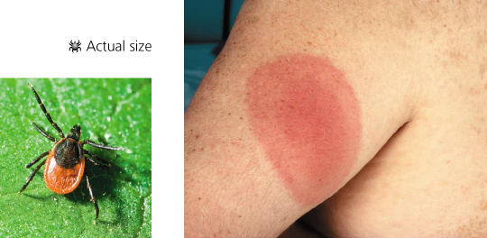

13a.3Infectious Diseases as a Continued Threat
pp. 267Emerging and reemerging diseases
- The notorious epidemics (bubonic plague, cholera, diphtheria, smallpox) are mostly past, with occasional new outbreaks, but new diseases still appear: the tick-borne Powassan virus first appeared in 2015, with Lyme-like but worse symptoms and no cure or treatment.
- Emerging disease — clinically distinct symptoms, with incidence increasing especially over the past two decades: HIV, SARS, "H1H5" influenza (as printed — probably H5N1), H1N1 influenza.
- Reemerging disease — one that reappears after declining: tuberculosis, because of new drug-resistant strains.
- Four factors: 1. New organisms that can infect humans, and drug-resistant organisms. Random mutations can let a pathogen "jump species" (a virus enters a cell only if its surface molecule fits the receptor). In antigenic shift, the genes of an animal virus and a human virus mix when both infect the same cell — H1N1 swine flu arose when a person passed human influenza A to a pig with influenza A. Improper antibiotic treatment as TB reemerged produced resistant strains; multi-drug-resistant Mycobacterium tuberculosis is rising fast, and the WHO's XDR ("extensively drug resistant") TB is nearly impossible to treat. 2. Environmental change. Shifts in local rainfall and temperature change where organisms can live; global warming makes the redistribution of pathogens a growing concern. 3. Population growth. Growing cities push people into undeveloped suburbs, bringing more contact with animals and insects carrying pathogens; wild animals are reservoirs for more than 100 species of human pathogens. Suburbs also wipe out predators (foxes, bobcats) — in parts of New York this raised tick-carrying mouse numbers and Lyme disease. Crowded cities let a disease start spreading quickly, and air travel spreads it far. 4. Failure to vaccinate. Vaccination has completely or nearly eliminated 14 diseases: diphtheria, Haemophilus influenzae infection, hepatitis A and B, measles, mumps, whooping cough, pneumococcal disease, polio, rubella, congenital rubella, smallpox, tetanus and chickenpox. Unvaccinated children have allowed recent outbreaks: measles, declared eliminated in the US in 2000, spread to 166 people in 19 states in 2015.
- Global trends: emerging diseases are costly and unevenly distributed; where they emerge depends mainly on human population growth and density and the number of wild mammal species. Most emerging pathogens reach humans from animals (wildlife, pets and livestock, vectors); drug resistance has also created emerging diseases.
how many measles cases the US had in 2015; §13a.3 says measles "spread to 166 persons in 19 states," while Ch. 13 §13.6 says outbreaks that year "resulted in 164 cases."
Epidemiology
- Epidemiology — the study of patterns of disease: rate of occurrence, distribution and control. Four patterns:
- Sporadic — occasional, at unpredictable intervals, a few people in a restricted area.
- Endemic — always present in a population and of little threat: the common cold.
- Epidemic — occurs suddenly and spreads rapidly to many: smallpox and cholera outbreaks.
- Pandemic — a global outbreak: HIV/AIDS.
- Epidemiologists, "disease detectives," work out why a disease appears at a given time and place: 1. Verify an outbreak — more than the expected number of cases with similar symptoms in an area. 2. Identify the cause, whether it is transmissible, and how. 3. Isolate the same agent from everyone with symptoms. 4. Find shared factors (age, sex, race, habits, location) that hint at transmission.
- Ch. 14 turns to the respiratory system.
Stop And Think
1How do the structure and replication cycle of viruses explain why antibiotics do not work against viral diseases? (§13a.1, p. 264)
Antibiotics block bacterial cell-wall synthesis or bacterial ribosomes. A virus has no wall and no ribosomes of its own — it is genetic material in a protein coat, replicating inside a host cell with the host's machinery — so there is nothing for the antibiotic to hit.
Figure Questions
1Which part of a virus would have to change for it to be able to infect a new type of tissue? (Figure 13a.2, p. 262)
The surface molecules that bind the host cell's receptor — envelope glycoproteins, or the capsid in a virus without an envelope. A virus infects only cells bearing a receptor its surface fits; §13a.3 makes the same point for viruses that "jump species."
Boxed essays
Mad cow disease and contaminated feed (§13a.1, p. 264)
- Mad cow disease spreads among cattle that eat contaminated feed, and laws prohibit feeding cattle food that might be contaminated. When the laws are broken, who should be held responsible — the feed manufacturers or the farmers?
Paying for XDR tuberculosis drugs (§13a.3, p. 267)
- Drug-resistant TB is rising, especially in poorer countries, partly from inadequate treatment. New drugs against resistant strains are extremely expensive and poor countries cannot afford them, so XDR cases rise and everyone is at risk. Lowering XDR TB would benefit the world — who should foot the bill?
Casey (§13a.3, p. 267)
- After finals Casey and her roommate share an ice-cream sundae in town; next morning both have vomiting, diarrhea, muscle aches and fever. A stool sample shows listeriosis, a foodborne bacterial infection that kills one in five people infected. The doctor asks for everything they ate and drank in the past 3 days and where. The dining commons is cleared because only the two of them are affected, but neighbours have similar symptoms, and over weeks clusters appear across the country.
- Why a stool sample? Vomiting and diarrhea point to a digestive-tract infection; the stool lets the pathogen be isolated and identified. Why the food list? To find what the sick share — the same agent and common factors trace the source and route. Likely source: the sundae, the one thing they shared. Why nationwide? A contaminated product distributed nationally reaches many places.
Board Work — Lab 12 & 13
The in-lab board sheet, block by block. Handed in at the start of lab on Monday 11/09.
- 1 Lab 12 · Blood components and function
- 2 Lab 12 · Plasma
- 3 Lab 12 · Formed elements
- 4 Lab 12 · Blood types (antigens, antibodies, agglutination)
- 5 Lab 12 · Innate immunity (1st and 2nd lines of defense)
- 6 Lab 12 · Adaptive immunity (3rd line of defense)
- 7 Lab 12 · Explain the role of antibodies in immune function
- 8 Lab 13 · Structures and functions of the heart
- 9 Lab 13 · Blood flow through the heart
- 10 Lab 13 · Cardiac cycle and ECG waves
- 11 Lab 13 · Cardiac conduction
- 12 Lab 13 · Structures and functions of arteries and veins
- 13 Lab 13 · Blood pressure
1 · Lab 12 · Blood components and function
Draw
A centrifuged tube: plasma on top, a thin buffy coat, packed RBCs at the bottom. Beside it, two more tubes: anemia (short red layer) and polycythemia (tall red layer). Write the hematocrit formula underneath.
- whole blood
- connective tissue
- matrix
- plasma
- formed elements
- buffy coat
- hematocrit
- anticoagulant
- capillary tube
- centrifuge
- anemia
- polycythemia
- dehydration
- thermoregulation
- vasodilation
- vasoconstriction
- pH 7.35–7.45
Write
What blood is
- A connective tissue: formed elements (cells) suspended in a fluid matrix, plasma.
- Jobs: transport (gases, solutes, hormones, wastes), defense (leukocytes), clotting (platelets), regulation of heat and pH.
- 4–5 L; more viscous than water because of its solutes and formed elements; pH slightly alkaline, 7.35–7.45.
- Carries heat: skin vessels dilate when warm (heat lost), constrict when cold (heat kept in the core).
Spun blood
- Blood in a capillary tube with anticoagulant, capped end outward, is centrifuged; the heaviest parts are pushed to the bottom.
- Plasma on top, pale straw-coloured, ~55% · buffy coat (WBCs + platelets), about 1 mm, <1% · RBCs at the bottom, ~45%.
Hematocrit
- HCT = % of blood that is RBCs = RBC height × 100 ÷ total height (mm).
- Shows O2-carrying capacity. Normal ♀ 37–47%, ♂ 42–52%; low = anemia, high = polycythemia.
- Plasma is the difference between RBC volume and total volume, so plasma changes shift it: dehydration falsely raises HCT (the most common cause of a high HCT); fluid overload falsely lowers it.
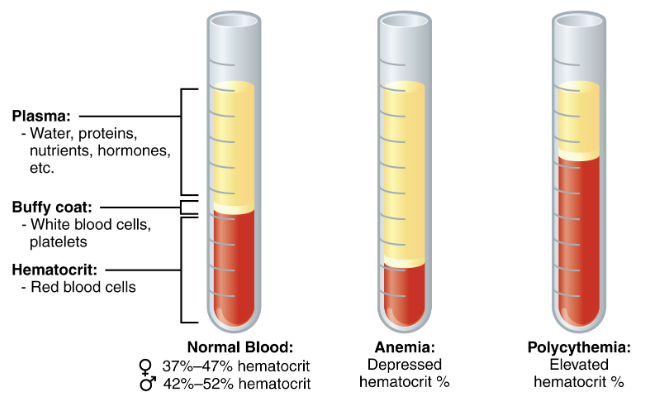
how many WBCs are in blood; the lab says leukocytes are "less than 0.5% of the total blood volume", while Ch. 11 §11.2 says "less than 1% of whole blood".
2 · Lab 12 · Plasma
Draw
A box labelled PLASMA with three columns: water; dissolved solutes; plasma proteins. Split the proteins box into albumin, globulins (α, β, γ) and fibrinogen.
- plasma
- water
- electrolytes
- solutes
- glucose
- amino acids
- hormones
- dissolved gases (CO2, O2)
- urea
- plasma proteins
- albumin
- globulins
- alpha/beta globulins
- gamma globulins
- antibodies
- fibrinogen
- clotting proteins
Write
Contents
- The fluid matrix that transports everything: mostly water, carrying electrolytes, glucose and amino acids, hormones, dissolved CO2 and O2.
- Also carries wastes such as urea to be removed from the body.
Three plasma proteins
- Albumin: keeps fluid in the vessels (fluid balance).
- Globulins: α and β transport; γ are antibodies.
- Fibrinogen: clotting.
3 · Lab 12 · Formed elements
Draw
A row of the cell types as seen on a stained smear: RBC (biconcave, no nucleus), neutrophil (2–5 lobes), eosinophil (red-orange granules, 2 lobes), basophil (dark purple granules), lymphocyte (big round nucleus), monocyte (kidney-shaped nucleus), platelets (fragments). Label each with its count and job.
- formed elements
- erythrocyte
- biconcave disc
- hemoglobin
- heme
- Fe²⁺
- alpha/beta subunits
- leukocyte
- granulocyte
- neutrophil
- eosinophil
- basophil
- mast cell
- histamine
- agranulocyte
- monocyte
- macrophage
- lymphocyte
- B lymphocyte
- T lymphocyte
- NK cell
- thrombocyte
- platelet
- megakaryocyte
- thrombopoietin
- hemostasis
Write
Erythrocytes
- Made in bone marrow; they lose the nucleus before release → biconcave disc: high surface-to-volume for gas exchange, folds through capillaries, but lives only ~120 days.
- Full of hemoglobin: 2 α + 2 β chains, each heme holding Fe²⁺, which binds one O2 → 4 O2 per hemoglobin. Also carries CO2 and H⁺, buffering pH.
Leukocytes
- <0.5% of blood, but the immune cells. All are innate except lymphocytes.
- Granulocytes (visible granules, odd-shaped nuclei): non-specific, always respond the same way.
- Neutrophils: most numerous; first to migrate into tissue; phagocytic; granules hold digestive enzymes.
- Eosinophils: release enzymes onto parasites, then phagocytose the pieces; role in allergies.
- Basophils: fewest; related to mast cells; release histamine → vasodilation + leaky vessels → inflammation.
- Agranulocytes (no visible granules): monocytes become macrophages in tissue — phagocytes that secrete cytokines and act as APCs (antigen on MHC II to helper T).
- Lymphocytes are adaptive: receptors for one antigen; activated cells form memory + effector cells. B → plasma cells → antibodies (humoral); cytotoxic T kill infected and cancer cells (cell-mediated); helper T activate both.
Platelets
- Fragments of megakaryocytes in bone marrow; production stimulated by thrombopoietin.
- Granules hold clotting factors, thromboxane, serotonin and ADP, which act by positive feedback to clump platelets and clot blood (hemostasis). Circulate ~10 days.
| Element | Count (range) | Look | Life span |
|---|---|---|---|
| Erythrocyte | 5.2 million (4.4–6.0 million) | biconcave, no nucleus | ~120 days |
| Neutrophil | 4150 (1800–7300) | 2–5 lobes, pale lilac granules | minutes–days |
| Eosinophil | 165 (0–700) | 2 lobes, red-orange granules | minutes–days |
| Basophil | 44 (0–150) | 2 lobes, dense dark purple granules | unknown |
| Lymphocyte | 2185 (1500–4000) | large round nucleus, little cytoplasm | many years |
| Monocyte | 455 (200–950) | largest; kidney-shaped nucleus | — |
| Platelet | 350,000 (150,000–500,000) | fragments, purple granules | ~10 days |
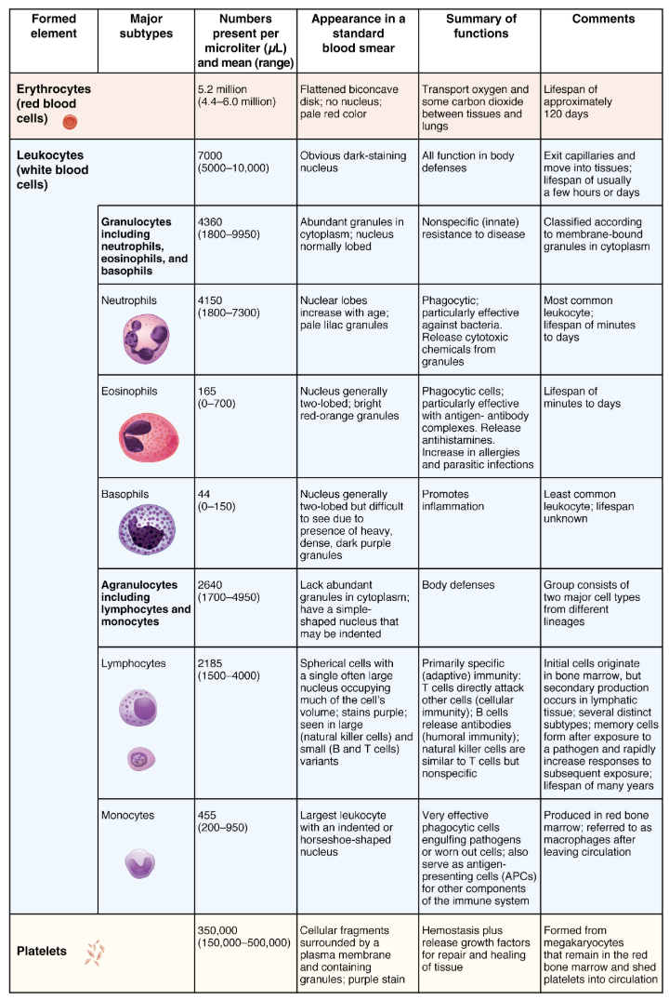
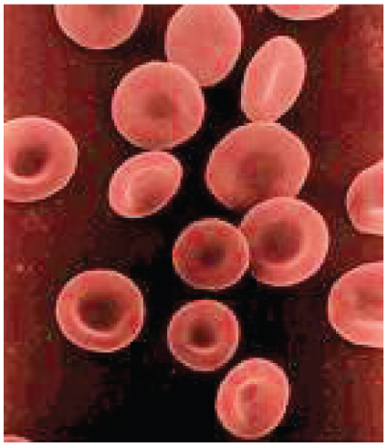
the normal counts of each formed element; the lab's table (OpenStax) gives neutrophils 1800–7300, lymphocytes 1500–4000, monocytes 200–950, eosinophils 0–700, basophils 0–150 and platelets 150,000–500,000 per µL, while Ch. 11 Table 11.1 gives 3000–7000, 1500–3000, 100–700, 100–400, 20–50 and 250,000–500,000 per mm³.
how many hemoglobin molecules an RBC holds; the lab's hemoglobin caption says "300 million", while Ch. 11 §11.2 says "approximately 280 million".
how long platelets circulate; the lab says "about 10 days", while Ch. 11 says 5–10 days after a week of maturing.
4 · Lab 12 · Blood types (antigens, antibodies, agglutination)
Draw
Four RBCs side by side (A, B, AB, O) with their surface antigens; under each, the antibodies in that plasma. Then three wells (anti-A, anti-B, anti-D) showing which clump for A+.
- blood type
- ABO blood group
- antigen
- glycoprotein
- A antigen
- B antigen
- Rh antigen
- Rh factor
- D antigen
- antibody
- anti-A
- anti-B
- anti-Rh / anti-D
- IgM
- IgG
- agglutination
- anti-sera
- cross-matching
- serum
- whole blood
- packed RBCs
- transfusion reaction
Write
Antigens set the type
- Type = which antigens (glycoproteins) sit on the RBC: A, B, both (AB) or neither (O), plus Rh (+ if present). Together: 8 major types.
Antibodies to what you lack
- Plasma carries antibodies to the antigens you don't have: AB+ carries none, O− carries anti-A, anti-B and anti-Rh.
- Anti-A, anti-B: formed before birth; large IgM. Anti-Rh: only after an Rh− person is exposed; small IgG that crosses the placenta.
Typing
- A drop of blood in each of anti-A, anti-B, anti-D wells; agglutination (clumping) = that antigen is present. A+ clumps in anti-A and anti-D.
Transfusion
- Products: whole blood, packed RBCs, plasma or platelets. Antibodies are in plasma, antigens on RBCs: the recipient must have no antibodies to the donor's antigens, or a major, possibly fatal reaction follows.
- Cross-match both ways (recipient serum + donor blood, donor serum + recipient blood); no clumping = match.
| Blood type | Antigens present | Antibodies present |
|---|---|---|
| A+ | A, Rh | anti-B |
| A− | A | anti-B, anti-Rh |
| B+ | B, Rh | anti-A |
| B− | B | anti-A, anti-Rh |
| AB+ | A, B, Rh | none |
| AB− | A, B | anti-Rh |
| O+ | Rh | anti-A, anti-B |
| O− | none | anti-A, anti-B, anti-Rh |
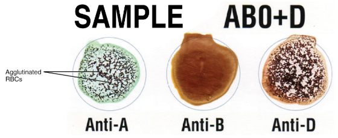
whether anti-Rh is present before exposure; the lab's table lists "anti-Rh" among the antibodies of every Rh− type (A−, B−, AB−, O−), while its own text and Ch. 11 §11.4 say anti-Rh antibodies form only after an Rh− person is exposed to Rh antigen.
whether the donor's antibodies matter in a transfusion; Ch. 11 §11.4 says donor plasma antibodies are diluted and "not a major problem", while the lab cross-matches in both directions, including donor serum against recipient blood.
why anti-A and anti-B exist without exposure; the lab says they "are formed before birth" (IgM), while Ch. 11's footnote says it is not certain why they form and suggests bacteria or foods may carry small amounts of A and B antigens.
5 · Lab 12 · Innate immunity (1st and 2nd lines of defense)
Draw
The three complement pathways (classical, lectin, alternative) all funnelling into activated C3b, which fans out into its five outcomes. Beside it, a cut in the skin with the four signs of inflammation labelled.
- innate immunity
- non-specific
- 1st line of defense
- cutaneous membrane
- mucous membrane
- Langerhans cells
- lysozyme
- low pH
- normal flora
- 2nd line of defense
- phagocytes
- chemotaxis
- dendritic cells
- NK cells
- perforins
- granzymes
- interferons
- complement
- classical pathway
- lectin pathway
- alternative pathway
- C3b
- C5b
- C3a
- membrane attack complex (MAC)
- opsonization
- cytokines
- TNF-α
- IL-1
- IL-6
- pyrogens
- fever
- iron sequestration
- inflammation
- histamine
- serotonin
- bradykinins
- nociceptors
- diapedesis
Write
Innate immunity
- The 1st + 2nd lines: always present, non-specific, the same response to any pathogen.
1st line — keep it out
- Barriers: waterproof, keratinized skin and moist mucous membranes, layered against abrasion; mucus traps pathogens.
- Chemicals: lysozyme (antimicrobial enzyme) in tears, saliva and sweat; low pH in the stomach (~2), sweat and urine.
- Normal flora keep pathogens from growing on mucosal surfaces.
2nd line — cells
- Phagocytes (neutrophils, eosinophils, macrophages) engulf invaders and call in more cells (chemotaxis).
- Macrophages and dendritic cells are APCs: antigen on MHC II → activates adaptive immunity.
- Basophils, like mast cells, are not phagocytic; they release histamine.
- NK cells kill infected and cancer cells with perforins + granzymes.
2nd line — proteins
- Interferons (viral infection) warn neighbouring cells.
- Complement: three pathways — classical (antibody on antigen), lectin (microbe sugars), alternative (C3 splits on its own) — converge on C3b → cell lysis (MAC), inflammation, neutralization, opsonization, immune-complex clearance.
Inflammation and fever
- Any cell injury → mast cells and macrophages release histamine (plus serotonin, bradykinins): vasodilation → redness + heat; leaky vessels → swelling; bradykinins → pain.
- Macrophage cytokines bring in more cells (chemotaxis, diapedesis) to clean up and heal.
- Pyrogens (bacterial toxins, TNF-α, IL-1, IL-6) raise the hypothalamic set point → fever (shivering, higher metabolism).
- Heat doesn't kill pathogens directly; it speeds immune cells and healing and sequesters iron bacteria need.
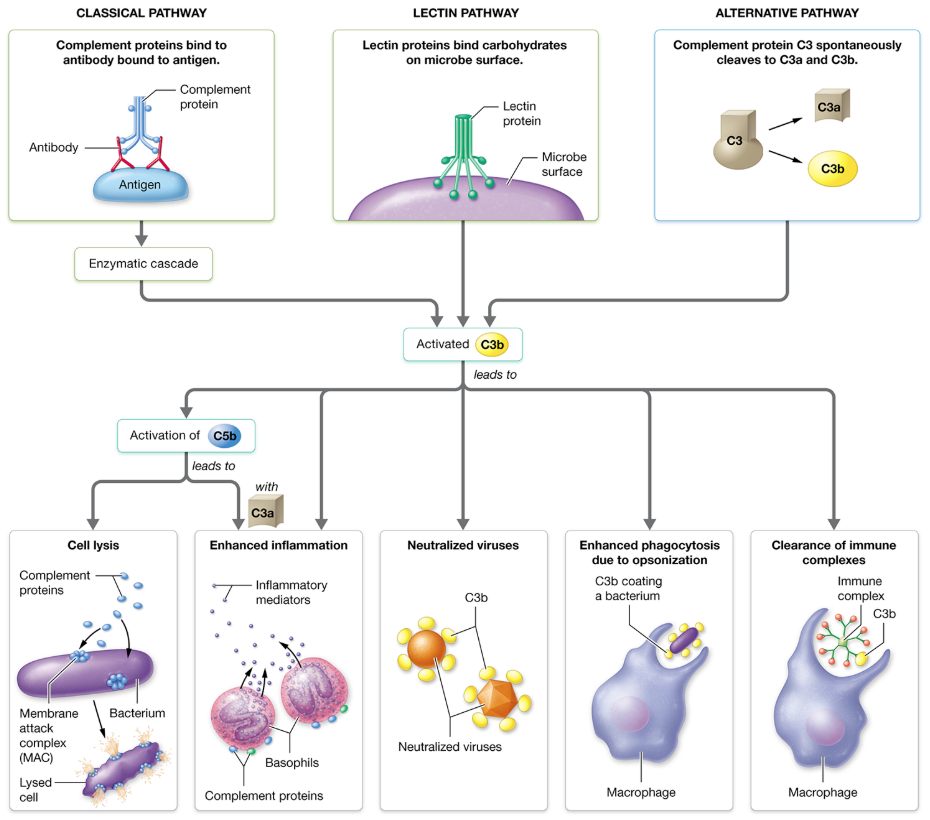
which chemicals cause inflammatory pain; the lab names bradykinins from mast cells acting on nociceptors, while Ch. 13 §13.2 names fluid pressing on nerves, bacterial toxins and prostaglandins from injured cells.
which WBCs are innate; the lab says all WBCs except lymphocytes are innate, yet it also lists NK cells, a lymphocyte-line cell, as non-specific (innate), as Ch. 13 does.
6 · Lab 12 · Adaptive immunity (3rd line of defense)
Draw
An APC showing antigen on MHC II to a helper T cell (CD4). Two arrows out of the helper T: left to a B cell → plasma cells + memory B (humoral); right to a cytotoxic T (CD8) → effector Tc + memory Tc (cell-mediated). Add the primary vs. secondary response graph.
- adaptive immunity
- specific
- immunologic memory
- B lymphocyte
- T lymphocyte
- antigen
- antigen-presenting cell (APC)
- macrophage
- dendritic cell
- B cell (as APC)
- MHC I
- MHC II
- endogenous antigen
- exogenous antigen
- helper T (TH)
- CD4
- cytotoxic T (TC)
- CD8
- cytokines
- IL-2
- IL-3
- IL-4
- IL-5
- clonal selection
- clone
- effector cell
- memory cell
- plasma cell
- perforins
- granzymes
- apoptosis
- humoral immunity
- cell-mediated immunity
- primary response
- secondary response
- active immunity
- passive immunity
- vaccination
- booster
Write
Adaptive immunity
- B and T lymphocytes: specific recognition + memory. Two arms: humoral (antibodies against antigen in blood or tissue) and cell-mediated (cytotoxic T cells kill infected and cancer cells).
Antigen presentation
- APCs (macrophages, dendritic cells, B cells) engulf antigen, cut it up and show it on MHC II (exogenous). Every nucleated cell shows its own (endogenous) antigen on MHC I.
- Helper T (TH) checks two things — its receptor fits the antigen and its CD4 binds MHC II — then activates and releases cytokines; the APC answers with cytokines that activate it further.
Cell-mediated
- TH clones → memory TH (long-lasting) + effector TH. Effector TH release IL-3 → activates macrophages, and IL-2 → activates cytotoxic T (TC).
- TC clones → memory TC (long-lasting, quick on second exposure) + effector TC. Effector TC: receptor + CD8 bind antigen on MHC I of an infected or abnormal cell → perforins (holes) + granzymes → apoptosis.
Humoral
- B cell shows antigen on MHC II → TH binds → IL-2, IL-4, IL-5 fully activate it.
- B cell clones → memory B (long-lasting, quick on second exposure) + plasma cells, which make antibodies at once.
Primary vs. secondary
- Primary: days to weeks; may not protect. Secondary: faster and bigger, because memory cells are many and each clones.
Active vs. passive
- Active: you make memory cells + antibodies; slow (days to weeks) but lasting. Natural (infection) or artificial (vaccine; a booster gives a secondary response).
- Passive: another organism's antibodies; bind antigen immediately but short-lived, because they are not self. Natural (placenta, breast milk) or artificial (injected antibodies).
which MHC class a cytotoxic T cell reads; the lab says Tc cells recognize antigen on MHC I of infected or abnormal cells, and APCs present to helper T on MHC II; Ch. 13 never names MHC classes and has the macrophage present to both helper and cytotoxic T cells (Figure 13.13).
what activates the cytotoxic T cell; the lab says Tc cells are activated by IL-2 from effector helper T cells, while Ch. 13 §13.5 says activation needs an antigen-presenting cell and a helper T cell's chemical at the same time.
7 · Lab 12 · Explain the role of antibodies in immune function
Draw
A Y-shaped antibody: two antigen-binding tips on the arms, stem below. Around it, the five outcomes of binding.
- antibody
- immunoglobulin
- plasma cell
- B cell receptor
- antigen-binding site
- IgG
- IgA
- IgM
- IgE
- IgD
- neutralization
- opsonization
- precipitation
- agglutination
- complement activation
- inflammation
Write
What antibodies are
- Immunoglobulins made by plasma cells, shaped like the B cell receptor that found the antigen. Five classes: IgG, IgA, IgM, IgE, IgD.
- They don't destroy antigens — they bind and flag them.
What binding does
- Neutralization: blocks the antigen's harmful action.
- Opsonization: tags the target so phagocytes engulf it.
- Precipitation / agglutination: clumps antigens, as RBCs clump in blood typing.
- Complement activation: the classical pathway, ending in the MAC.
- Stimulation of inflammation.
In blood typing
- Anti-A, anti-B = IgM; anti-Rh = IgG (crosses the placenta).
how many functions antibodies have; the lab lists five (neutralization, opsonization, precipitation or agglutination, activation of complement, stimulation of inflammation), while Ch. 13 §13.5's PLAN gives four (precipitation, lysis via complement, attraction of phagocytes, neutralization).
8 · Lab 13 · Structures and functions of the heart
Draw
The heart in anterior section: four chambers, septum, the two AV valves with chordae and papillary muscles, the two SL valves, and the great vessels. Shade the left ventricle wall thicker. Mark the three wall layers.
- thoracic cavity
- mediastinum
- pericardial cavity
- base
- apex
- pericardium
- epicardium
- myocardium
- endocardium
- right/left atrium
- auricle
- right/left ventricle
- interventricular septum
- tricuspid valve (right AV)
- mitral / bicuspid valve (left AV)
- chordae tendineae
- papillary muscles
- pulmonary SL valve
- aortic SL valve
- trabeculae carneae
- moderator band
- fossa ovalis
- coronary arteries
- coronary veins
- coronary sinus
- anterior cardiac veins
- cardiac muscle
- intercalated discs
- gap junctions
Write
Position and wall
- Fist-sized, in the pericardial cavity of the mediastinum, between the lungs.
- Broad base at the top, where the great vessels open; apex points inferiorly and slightly anteriorly.
- Wall: epicardium (outer; the inner layer of the pericardial membrane) · myocardium (cardiac muscle, does the pumping) · endocardium (smooth lining of the chambers, continuous with vessel endothelium).
Four chambers, two pumps
- The interventricular septum splits the heart into a right pump (to the lungs) and a left pump (to the body). Each side is an atrium over a ventricle.
- Atria (superior): receiving chambers; relatively thin walls; no valves where the veins enter. Each has an auricle, an outer flap that expands as the atrium fills.
- Ventricles (inferior): the main pumps.
- Left ventricle wall much thicker than the right: it pushes the same volume into the longer, higher-resistance systemic circuit. The aorta's wall is thicker than the pulmonary trunk's for the same reason.
Valves keep flow one-way
- Atrioventricular valves (atrium → ventricle): tricuspid on the right (3 cusps), mitral/bicuspid on the left (2).
- Chordae tendineae tie the cusps to papillary muscles on the ventricle wall, so the cusps can't invert into the atria when the ventricles contract.
- Semilunar valves (ventricle → artery): pulmonary and aortic, 3 flaps each. Ejection flattens the flaps; blood falling back fills them and snaps them shut.
Inside the chambers
- Moderator band: carries the conduction impulse to the right papillary muscle.
- Trabeculae carneae: muscle ridges on the ventricle walls. Fossa ovalis: on the right atrium's septal wall.
Coronary circulation
- Feeds the heart muscle itself, since chamber blood does not: coronary arteries branch off the aorta → capillaries → coronary veins → coronary sinus → right atrium.
Cardiac muscle
- Striated, branched, one nucleus, involuntary. Intercalated discs hold gap junctions, so the cells contract as one.
| Chamber | Receives blood from | Sends it through → to | Wall |
|---|---|---|---|
| Right atrium | superior + inferior vena cavae, coronary sinus (O2-poor) | tricuspid → right ventricle | thin |
| Right ventricle | right atrium | pulmonary semilunar valve → pulmonary trunk → lungs | thicker than atria |
| Left atrium | pulmonary veins (O2-rich) | mitral → left ventricle | thin |
| Left ventricle | left atrium | aortic semilunar valve → aorta → body | thickest |
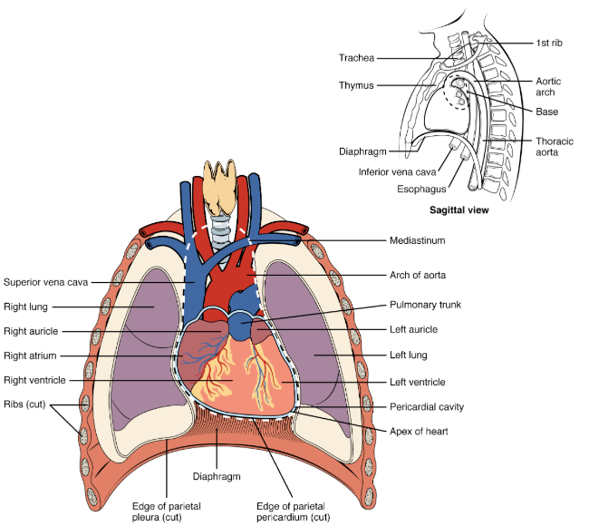
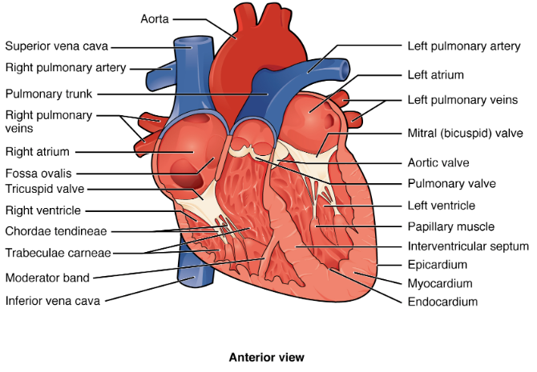
what the heart's outer wall layer is called; the lab names three layers epicardium, myocardium and endocardium, while Ch. 12 §12.3 names myocardium, endocardium and pericardium (a fibrous sac) and never uses "epicardium".
9 · Lab 13 · Blood flow through the heart
Draw
A flow chart in a loop: vena cavae → RA → tricuspid → RV → pulmonary SL → pulmonary trunk → pulmonary arteries → lungs → pulmonary veins → LA → mitral → LV → aortic SL → aorta → body → back to the vena cavae. Colour the right side blue and the left side red.
- superior vena cava
- inferior vena cava
- right atrium
- tricuspid valve
- right ventricle
- pulmonary SL valve
- pulmonary trunk
- pulmonary arteries
- lungs
- pulmonary veins
- left atrium
- mitral valve
- left ventricle
- aortic SL valve
- aorta
- pulmonic circuit
- systemic circuit
Write
Two circuits, one pump each side
- Right heart → lungs (pulmonic circuit) and left heart → body (systemic circuit). Both move the same volume; the systemic circuit is longer, so its resistance and pressure are higher.
Pulmonic circuit
- Vena cavae → right atrium → tricuspid → right ventricle → pulmonary semilunar valve → pulmonary trunk → pulmonary arteries (O2-poor) → lungs: CO2 out to the alveoli, O2 in.
- Pulmonary veins (O2-rich) → left atrium.
- The pulmonary circuit flips the usual pattern: its arteries carry O2-poor blood and its veins carry O2-rich blood. Arteries and veins are named by direction (away from or toward the heart), not by oxygen.
Systemic circuit
- Left atrium → mitral → left ventricle → aortic semilunar valve → aorta → tissues: O2 into cells, CO2 into blood.
- Back to the right atrium by the superior vena cava (upper body) and inferior vena cava (lower body).
Timing
- Atria contract first and fill both ventricles; then both ventricles contract together into the pulmonary trunk and aorta.
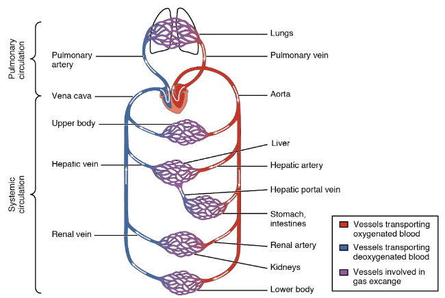
10 · Lab 13 · Cardiac cycle and ECG waves
Draw
An ECG strip (P, QRS, T) with the cardiac-cycle phases written under it: atrial systole under P, ventricular systole from QRS, ventricular relaxation from T. Mark S1 just after the QRS and S2 just after the T.
- cardiac cycle
- systole
- diastole
- pressure gradient
- atrial systole
- ventricular systole
- isovolumetric contraction
- ventricular ejection
- isovolumetric relaxation
- ventricular filling
- S1 "lub"
- S2 "dup"
- ECG
- P wave
- QRS complex
- T wave
- depolarization
- repolarization
- PR interval
- QT interval
- P-R segment
- S-T segment
- calcium
- troponin
- tropomyosin
Write
Cardiac cycle
- The cardiac cycle is the contraction (systole) and relaxation (diastole) of the heart's chambers during one heartbeat. The right and left sides go through each phase at the same time, timed by the conduction system.
- Depolarization releases calcium, which binds troponin and moves tropomyosin so the muscle can contract, as in skeletal muscle.
- Blood flows from high to low pressure. Pressure differences open and close every valve, so each valve can be predicted from which side has the higher pressure.
Atrial diastole and ventricular diastole
- Returning blood makes atrial pressure higher, so the atrioventricular valves are open and atria and ventricles fill.
- Higher pressure in the great vessels keeps the semilunar valves closed. Runs from ⅔ of the T wave to ⅔ of the P wave.
Atrial systole and ventricular diastole
- The atria contract (⅔ of the P wave) and push their remaining blood into the ventricles.
- Ends at the Q wave, when ventricular depolarization begins. Semilunar valves still closed.
Atrial diastole and ventricular systole
- From ⅔ of the QRS, ventricular pressure closes the atrioventricular valves: the first heart sound ("lub").
- All valves shut briefly (isovolumetric contraction), then the semilunar valves open and blood is ejected into both circuits.
Return to atrial diastole and ventricular diastole
- From ⅔ of the T wave, ventricular pressure drops and back-flowing blood closes the semilunar valves: the second heart sound ("dup").
- All valves shut (isovolumetric relaxation) until the filling atria push the atrioventricular valves open again.
ECG waves
- Electrodes on the body record the wave of depolarization as deflections called waves. An electrocardiogram shows three, always in this order: P wave, QRS complex, T wave.
- P wave: the atria depolarize; it peaks when the most atrial cells are depolarizing. Atrial contraction begins about ⅔ of the way through.
- Q wave: the depolarization is passing through the atrioventricular node.
- QRS complex: three deflections, Q down, R up, S down. The ventricles depolarize, and ventricular contraction begins about ⅔ of the way through. The first heart sound comes just after, in the S wave. The atria repolarize now too, but that is hidden by the ventricles' larger signal.
- T wave: the ventricles repolarize. Relaxation begins about ⅔ of the way through, and the second heart sound follows just after.
- End of T to the next P: atria and ventricles are both relaxed and filling.
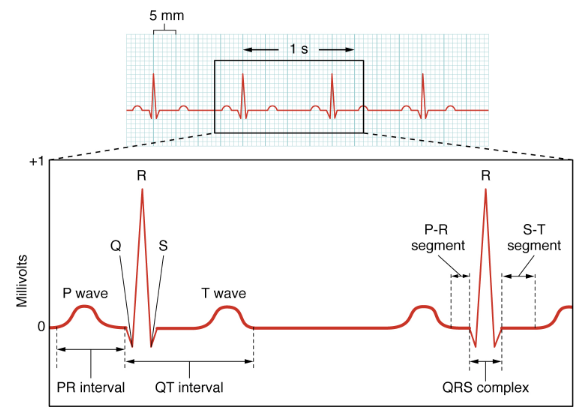
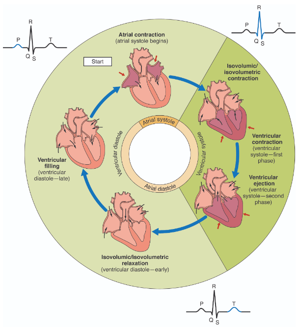
what the P and QRS waves record; the lab says the P wave is atrial depolarization and QRS ventricular depolarization, with contraction following at about two-thirds of each wave, while Ch. 12 §12.3 says the P wave "accompanies the spread of the electrical signal over the atria and the atrial contraction", and QRS likewise includes ventricular contraction.
where the cardiac cycle starts; the lab starts with atria and ventricles both in diastole and its figure starts at atrial contraction, while Ch. 12 Figure 12.11 starts at early diastole and splits diastole into early and late phases. The lab adds the isovolumetric phases the book does not name.
11 · Lab 13 · Cardiac conduction
Draw
The heart with the conduction path in yellow: SA node in the upper right atrium → internodal pathways and Bachmann's bundle → AV node → AV bundle → right and left bundle branches → Purkinje fibers. Write each node's intrinsic rate beside it.
- pacemaker cells
- auto-rhythmicity
- gap junctions
- intercalated discs
- SA node
- pacemaker
- internodal pathways
- Bachmann's bundle
- AV node
- AV bundle / bundle of His
- right and left bundle branches
- Purkinje fibers
- moderator band
- intrinsic rate
Write
Pacemaker cells
- Specialized cardiac myocytes with auto-rhythmicity: membrane potential drifts continually, giving periodic depolarization and action potentials.
- Linked to each other and to myocytes by gap junctions in the intercalated discs; one depolarizes, neighbours reach threshold, a wave spreads through the heart.
- Four types: sinoatrial node, atrioventricular node, atrioventricular bundle + bundle branches, Purkinje fibers.
The path and the rates
- Sinoatrial node: upper right atrium, just below the superior vena cava. Fires 60–100 beats/min; fastest, so it sets the pace.
- Wave spreads across the right atrium; Bachmann's bundle carries it to the left atrium, so both atria contract together.
- Atrioventricular node: inferior right atrium along the interventricular septum; 40–60/min. Fewer gap junctions → ~100 ms delay, letting the atria finish filling the ventricles.
- Atrioventricular bundle → splits into right and left bundle branches down the septum → Purkinje fibers out to the ventricular free walls (and the right papillary muscle via the moderator band). 20–40/min.
- Free walls contract last, from the apex up, pushing blood out through the semilunar valves.
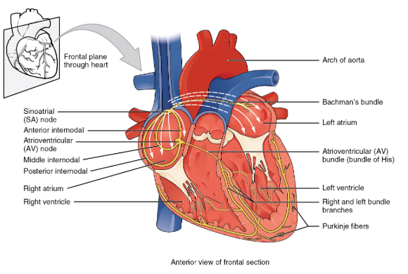
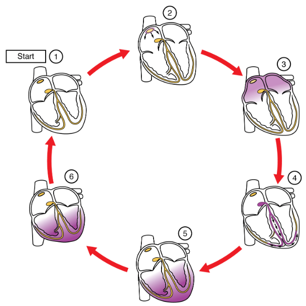
how fast the sinoatrial node fires; the lab gives 60–100 beats/min, while Ch. 12 §12.3 says about 70–80 times a minute.
whether the atrioventricular-node delay is mentioned; the lab says the atrioventricular node slows conduction by about 100 ms so the atria can finish filling the ventricles, while Ch. 12 says the atrioventricular node "relays" the signal and gives no delay.
12 · Lab 13 · Structures and functions of arteries and veins
Draw
Cross-sections of an artery and a vein side by side, three tunics labelled. Make the artery round and thick-walled with a small lumen; the vein thin-walled, collapsed, larger lumen, with a valve. Add a capillary as one cell layer.
- tunica externa
- tunica media
- tunica intima
- endothelium
- smooth muscle
- internal elastic membrane
- external elastic membrane
- elastic fibers
- vasa vasorum
- nervi vasorum
- elastic artery
- muscular artery
- arteriole
- capillary
- continuous capillary
- fenestrated capillary
- sinusoidal capillary
- tight junctions
- basement membrane
- venule
- vein
- valves
- skeletal muscle pump
Write
Vessel wall
- Three layers, outside to in, varying by vessel:
- Tunica externa: outer connective tissue; strengthens and anchors the vessel.
- Tunica media: smooth muscle (plus elastic membranes in arteries); contracts or relaxes to change diameter.
- Tunica intima: the endothelium, a smooth inner lining.
Arteries
- Highest pressure, so thicker walls, smaller lumens than veins, with a much thicker tunica media.
- Elastic fibres let arteries stretch with each beat and recoil, keeping pressure and flow steady.
- Smooth muscle constricts (less flow, higher pressure) or dilates (more flow), steering blood where it is needed.
- Elastic arteries → muscular arteries → smallest, the arterioles (µm across, vs mm for the others).
Capillaries
- Smallest vessels; very low pressure. Wall = one layer of squamous endothelial cells + basement membrane, thin enough for exchange.
- Tight junctions are incomplete here, so capillaries are more permeable.
- Continuous: most common, least permeable. Fenestrated: pores, more permeable. Sinusoidal: most permeable; incomplete basement membrane, large gaps.
Veins
- Capillaries → venules → veins. Thin walls and wide lumens let veins hold a large volume: they are the blood's reservoir.
- Valves prevent backflow; skeletal muscle contraction squeezes veins and pushes blood past the valves to the heart.
| Characteristic | Arteries | Veins |
|---|---|---|
| Direction of blood flow | Away from the heart | Toward the heart |
| General appearance | Rounded | Irregular, often collapsed |
| Pressure | High | Low |
| Wall thickness | Thick | Thin |
| Relative O2 concentration | Higher in systemic, lower in pulmonary arteries | Lower in systemic, higher in pulmonary veins |
| Valves | Not present | Present, most commonly in limbs and veins inferior to the heart |
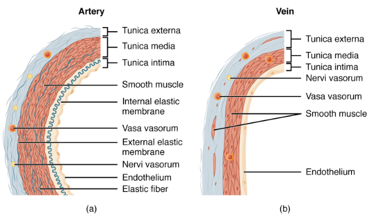
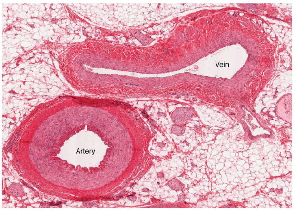
whether venules have valves; the lab says "many veins have valves, whereas venules do not", while Ch. 12 Figure 12.2 draws and labels a valve inside the venule.
what moves venous blood back to the heart; the lab names valves and skeletal muscle contraction, while Ch. 12 §12.2 lists a third mechanism, breathing (pressure changes in the thorax and abdomen).
13 · Lab 13 · Blood pressure
Draw
The pressure-along-the-vessels graph: oscillating systolic/diastolic band in the aorta and arteries, a steep drop through the arterioles, flat and low through capillaries, venules and veins. Beside it, a cuff on the upper arm over the brachial artery.
- blood pressure
- systolic pressure
- diastolic pressure
- pulse
- pulse pressure
- mean arterial pressure
- radial pulse
- pulse points
- sphygmomanometer
- stethoscope
- brachial artery
- laminar flow
- turbulent flow
- Korotkoff sounds
- cardiac output (CO)
- stroke volume
- heart rate
- viscosity
- vasoconstriction
- sympathetic nervous system
Write
Pulse
- Pressure wave through an artery wall as the ventricles force blood in. Shows the frequency, strength and rhythm of the beats; only a rough BP estimate.
- Pulse pressure = systolic − diastolic; sets pulse strength. Strong pulse = bigger gradient, better flow; weak pulse = smaller gradient, less flow.
- Radial pulse: two fingers, anterior wrist on the thumb side, just above the palm. Count 15 s × 4 = beats/min.
- Other pulse points: temporal, facial, carotid, brachial, femoral, popliteal, posterior tibial, dorsalis pedis.
Blood pressure
- Force of blood against artery walls; it rises with each contraction and falls between beats. Systolic = during ventricular systole; diastolic = during ventricular diastole. Reported systolic/diastolic, systemic arterial pressure.
- Highest in the aorta and arteries, falls steeply through the arterioles, very low in capillaries and veins.
- Systolic ≤ 120 mm Hg, diastolic ≤ 80 mm Hg.
- Taken at rest, seated, at heart level. Low BP cuts O2 and nutrient delivery (incl. the brain); high BP damages vessel walls and tissues.
What raises it
- Blood volume ↑, viscosity ↑, smaller vessel diameter, longer vessels (more resistance).
- Cardiac output: cardiac output (mL/min) = heart rate (beats/min) × stroke volume (mL/beat); more pumped → higher pressure.
Measuring it
- Unobstructed flow is laminar (silent); narrowed flow is turbulent (audible).
- Cuff on the upper arm over the brachial artery; inflate to 140–150 mm Hg to close it off; release ~3 mm Hg/s.
- Korotkoff sounds: first sound = systolic; sounds stop = diastolic.
Exercise
- Raises energy need → sympathetic nervous system ↑:
- Sinoatrial node fires faster → heart rate ↑ → cardiac output ↑.
- Cardiac muscle contracts harder → stroke volume ↑ → cardiac output ↑.
- Vasoconstriction → smaller diameter → BP ↑.
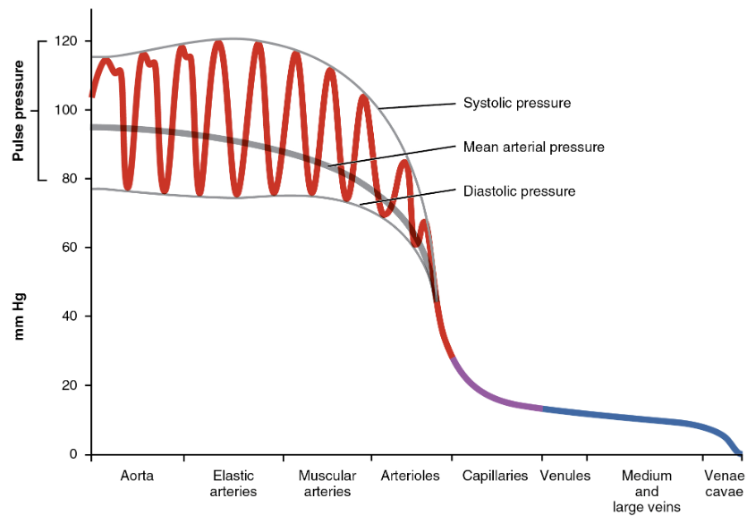
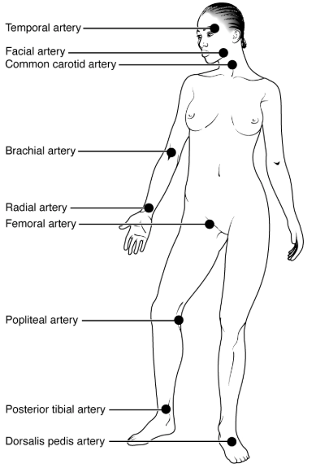
what counts as normal blood pressure; the lab says systolic "should be 120 mm Hg or less" and diastolic "80 or less", while Ch. 12 gives optimal as 110–120 / 70–80, "less than 120/80", and Ch. 12a Figure 12a.1 shades below 100/60 as "Low".
what exercise does to vessels; the lab says the sympathetic system causes vasoconstriction during exercise, raising BP, while Ch. 12's Health Issue essay says exercise widens the coronary arteries and, over time, lowers blood pressure.
Lecture 1 — Mon 11/09
Nothing here yet.
What goes here
Whalen's transcript, outlined section by section with the slide count kept on each one. Slide count is the emphasis signal for the exam.
Expected Mon 11/09.
Drop the source in weeks/week-14/sources/lectures/, then run /ingest 14.
Lecture 2 — Wed 11/11
Nothing here yet.
What goes here
Whalen's transcript, outlined section by section with the slide count kept on each one. Slide count is the emphasis signal for the exam.
Expected Wed 11/11.
Drop the source in weeks/week-14/sources/lectures/, then run /ingest 14.
The week, told once
Built last, after every other tab. Blends the chapters, the board work and both lectures into one account, and carries the conflicts table.
GLOSSARY
Immune-system glossary from the online immunology activity, in its own alphabetical order. Its definitions are its own, not the textbook's; where it disagrees with the book, the disagreement is flagged in §13.3.
Key terms
- Activation
- A process by which a cell changes or gains functions in response to a stimulus.
- Adaptive immune cell
- An immune cell involved in the adaptive immune response. Includes B cells and T cells.
- Adaptive immune response
- One of the two main ways in which the immune system responds to pathogens. Provides long-lasting protection against specific pathogens but may take longer to start.
- Antibody
- A small protein that binds to a specific antigen. Antibodies are made by plasma cells and help the immune system fight pathogens in various ways. The human immune system can generate billions of types of antibodies.
- Antigen
- A small piece of biological material (protein, carbohydrate, lipid, or nucleic acid) that can be recognized by the immune system. Antigens from pathogens or abnormal cells trigger an immune response.
- Antigen-MHC complex
- An antigen bound to an MHC protein on the surface of a cell. T cells must bind to a specific antigen-MHC complex in order to activate.
- Antigen-presenting cell (APC)
- A cell with an antigen bound to an MHC protein on its surface. APCs interact with T cells to trigger an immune response. The most common APCs are dendritic cells.
- Apoptosis
- A process by which a cell destroys itself. Involves several chemical reactions that make the cell change appearance and then die. Apoptosis is often used to kill cells that are unneeded or abnormal.
- Autoimmune disease
- A condition in which the immune system mistakenly attacks the body's healthy, normal cells.
- Basophil
- An innate immune cell that circulates in the blood and is involved in inflammation.
- B cell
- An adaptive immune cell that helps target and destroy specific pathogens. After being activated by T cells, B cells differentiate into plasma cells to produce antibodies.
- B cell receptor (BCR)
- A protein on the surface of a B cell that binds to a specific antigen. Plays a major role in B cell activation.
- Bone marrow
- A spongy tissue in certain bones. Contains stem cells that develop into immune cells and red blood cells.
- Cell-mediated immune response
- The processes of the adaptive immune response that play a major role in destroying infected cells through cytotoxic T cells.
- Complement proteins
- A group of proteins in the blood that help destroy pathogens and infected cells. They can damage pathogens directly or attract other immune cells to the site of an infection.
- Cytokines
- Small proteins released by cells to communicate with other cells. Some cytokines alert immune cells to an infection or activate certain immune cells.
- Cytotoxic T cell
- A type of T cell that kills infected cells by making them undergo apoptosis.
- Dendritic cell
- A type of phagocyte (innate immune cell that engulfs and destroys pathogens). Dendritic cells "display" antigens from the pathogens they engulf in order to activate other immune cells.
- Digestive system
- The organs and tissues involved in eating and breaking down food, absorbing nutrients into cells, and eliminating wastes.
- Differentiation
- A process that switches a cell from one type to another, typically more specialized type. Differentiation is caused by changes in gene expression that are often triggered by chemicals, including cytokines and hormones.
- Engulf
- A process in which certain cells, called phagocytes, surround and take in large particles (such as pathogens). The phagocyte extends its outer membrane around the particle, forming an enclosed structure called a vesicle that brings the particle into the cell.
- Eosinophil
- An innate immune cell that destroys large pathogens, such as parasites, by releasing damaging molecules and chemical signals (cytokines).
- Helper T cell
- A type of T cell that activates other immune cells, including B cells and cytotoxic T cells.
- Histamine
- A small molecule released by mast cells to trigger inflammation. Histamine makes blood vessels "leaky," which allows immune cells and fluid to move from the blood vessels into body tissues.
- Humoral immune response
- The processes of the adaptive immune response that involve antibodies (also known as the antibody-mediated response). These processes make and use antibodies to fight specific pathogens. They include B cell activation and differentiation into plasma cells, which produce antibodies.
- Immune cells
- Cells that are part of the immune system. Sometimes also called white blood cells or leukocytes.
- Immune response
- The processes that the immune system uses to fight pathogens. Includes two main parts, the innate and adaptive immune responses, and involves many cells and organs.
- Immune system
- A group of organs, tissues, cells, and molecules that protect the body from pathogens.
- Immunocompromised
- A condition in which the immune system is "weakened" and less effective at fighting pathogens. A person could become immunocompromised due to certain medications, medical conditions, viral infections, etc.
- Inflammation
- A process in the innate immune response that helps the body fight pathogens and repair tissue damage. Inflammation is triggered by injury or infection and can result in redness, pain, and swelling.
- Innate immune cell
- An immune cell involved in the innate immune response. Includes phagocytes (macrophages, neutrophils, dendritic cells, etc.), mast cells, and natural killer (NK) cells.
- Innate immune response
- One of the two main ways in which the immune system responds to pathogens. Provides immediate protection but cannot target specific pathogens.
- Lymph
- A fluid similar to blood that circulates throughout the body. Lymph contains immune cells but not red blood cells.
- Lymph nodes
- Small organs throughout the body that contain many immune cells. Lymphatic vessels connect through lymph nodes.
- Lymphatic vessels
- Thin "tubes" that carry a fluid called lymph throughout the body. Lymphatic vessels are similar to blood vessels but do not contain red blood cells.
- Lymphocyte
- A type of immune cell. Includes T cells, B cells, and natural killer (NK) cells.
- Lymphoid organs
- A group of organs that produce or contain large numbers of immune cells. Examples include the bone marrow, thymus, lymph nodes, spleen, and tonsils.
- Macrophage
- An innate immune cell that plays many roles. Macrophages are phagocytes that engulf and destroy pathogens and abnormal cells. They can also release chemical signals (cytokines) to attract other immune cells.
- Major histocompatibility complex (MHC) protein
- A protein that binds to antigens and "displays" them on the surface of a cell. Phagocytes use MHC proteins to "display" antigens from pathogens.
- Mast cell
- An innate immune cell that plays a major role in inflammation. Releases chemical signals (histamine) that help fluid and immune cells move from the blood vessels into tissues.
- Memory cells
- Long-lived B and T cells that are made the first time a pathogen infects the body. If the body is reinfected by the same type of pathogen, memory cells provide a faster, stronger adaptive immune response.
- Microbe
- A microscopic organism. Includes viruses, bacteria, archaea, fungi, and parasites. Some microbes are helpful, and others cause disease.
- Microbiome
- The community of microbes that live in and on the body, including fungi, bacteria, protozoa, and viruses. These microbes usually don't cause disease and are sometimes beneficial.
- Monocyte
- An innate cell that differentiates into macrophages. Like macrophages, monocytes are phagocytes that engulf and destroy pathogens and abnormal cells.
- Mucous membrane
- A thin tissue containing cells that make mucus. Mucous membranes line the digestive system (gut), respiratory system (airways), and urogenital tract.
- Mucus
- A sticky, slimy substance produced by certain cells. Protects tissues by trapping pathogens and contains antimicrobial enzymes and antibodies.
- Natural killer (NK) cell
- An innate immune cell that kills infected and abnormal cells. Can release chemical signals (cytokines) that cause other cells to undergo apoptosis.
- Neutralization
- A process by which antibodies bind to a pathogen and block it from interacting with and infecting the body's cells.
- Neutrophil
- An innate immune cell. Typically the first cell type to respond to pathogens, particularly bacteria and fungi. Chemical signals (cytokines) can attract neutrophils and make them multiply.
- Pathogen
- A microbe that causes disease. Can include bacteria, viruses, fungi, or parasites.
- Phagocyte
- An innate immune cell that engulfs and destroys pathogens and abnormal cells. Includes neutrophils, monocytes, macrophages, and dendritic cells.
- Phagocytosis
- A process by which immune cells called phagocytes engulf and destroy pathogens and abnormal cells. Parts of the destroyed pathogens or cells may be absorbed by the phagocyte, released, or displayed on the phagocyte's MHC proteins.
- Plasma cell
- A type of adaptive immune cell that produces antibodies. Each plasma cell makes an antibody for a specific antigen and makes several thousand copies of this antibody per second. Plasma cells come from activated B cells.
- Primary immune response
- How the immune system responds the first time it encounters a specific pathogen.
- Progenitor cells
- Cells that come from stem cells and can then differentiate into other cell types. Lymphoid progenitor cells differentiate into lymphocytes, and myeloid progenitor cells differentiate into other immune cells and red blood cells. Both types of progenitor cells come from stem cells in the bone marrow.
- Receptors
- Proteins in and on the membranes of cells. Receptors bind to specific molecules, such as antigens, to send signals between or within cells.
- Respiratory system
- The organs and tissues that allow you to take oxygen into the body and release carbon dioxide.
- Secondary immune response
- How the immune system responds the second (or any subsequent) time it encounters a specific pathogen. This response is faster and more powerful than the immune system response when it first encounters the pathogen.
- Self-antigen
- A small piece of biological material (protein, carbohydrate, lipid, or nucleic acid) that is part of the body or its cells. The body destroys immune cells that bind to self-antigens.
- Skin
- The body's thick outer layer. Acts as a physical barrier to pathogens and also makes some antimicrobial substances.
- Spleen
- An organ above the stomach that helps filter the blood. Contains immune cells that break down dead and dying red blood cells to recycle their parts.
- Stem cells
- A cell that can develop into a variety of other cell types. Stem cells in the bone marrow can develop into immune cells and red blood cells.
- T cell
- An adaptive immune cell that helps the body respond to specific pathogens. Upon recognizing a specific antigen, T cells differentiate into helper T cells and cytotoxic T cells.
- T cell receptor (TCR)
- A protein on the surface of a T cell that binds to a specific antigen (but only when the antigen is bound to an MHC protein on an antigen-presenting cell). Plays a major role in T cell activation.
- Thymus
- An organ in the chest where immune cells called T cells develop.
- Tonsils
- Small organs at the back of the throat that contain immune cells. These cells destroy inhaled or ingested microbes and warn the immune system about potential infections.
- Toxins
- Harmful substances (typically small molecules or proteins) produced by living organisms, including some pathogens.
- Vaccine
- A substance that triggers an immune response against a pathogen without causing an infection. If the immune system encounters the same type of pathogen later, it can destroy the pathogen more quickly and efficiently than if the individual had not had a vaccine.
Where the sources disagree
Collected automatically from every CONFLICT :: callout in this week's content, plus any rows declared in synth.md. Lecture and lab beat the textbook — but nothing here is resolved for you.
| Point | Textbook | Lab / lecture | Use | From |
|---|---|---|---|---|
| whether acid–base balance is listed as a function | the section text names buffering under regulation, while Highlighting the Concepts (p. 210) lists transport, WBC defense, clotting and temperature regulation and leaves acid–base balance out. The deck (slide 3) includes pH. The summary is shorter; neither source denies the other. | ch11.md | ||
| what fraction of plasma is dissolved substances | the textbook says plasma proteins alone are 7–8% of plasma, on top of the ions, gases, nutrients, hormones and wastes, while the deck (slide 4) says all dissolved substances together, proteins included, are about 7% and water about 93%. | ch11.md | ||
| what monocytes fight | the §11.2 text says monocytes become macrophages that engulf microbes, dead cells and debris, while Highlighting the Concepts (p. 210) says the macrophages "actively fight chronic infections." "Chronic" appears only in the summary; the deck (slide 33) follows the text. | ch11.md | ||
| what a high WBC count indicates | the §11.2 text calls a WBC count an "index of infection," while Table 11.A reads high WBCs as "acute or chronic infection, leukemia." A difference of detail, not a disagreement; the table gives no row for low WBCs. | ch11.md | ||
| whether "Rh antigen" and "Rh factor" name different things | the text uses "Rh antigens," "the Rh antigen" and "Rh factor" interchangeably for one antigen group, and Figure 11.7's third serum is "Anti-Rh." Not a disagreement; the wording names one thing. | ch11.md | ||
| what the trigger chemical is called | the text and Figure 11.9 say "clotting factors" from injured tissue and platelets, while the Stop and Think box names one of them, "thromboplastin," from damaged tissue and activated platelets — a word the text never uses. The deck instead names factor X. Consistent, at different levels of naming. | ch11.md | ||
| how many stages clotting has | Highlighting the Concepts (p. 210) and the deck (slide 59) give three mechanisms — constriction, platelet plug, clotting — while Figure 11.9 shows five numbered steps within clotting alone. Different levels of detail, not a disagreement. | ch11.md | ||
| what the bundle is called | the §12.3 text, Highlighting the Concepts, the deck (slide 47) and the study guide say "atrioventricular (AV) bundle," while Figure 12.12 — printed on deck slide 48 — labels it "Bundle of conducting muscle cells." Same structure; "AV bundle" is the name in every course source. | ch12.md | ||
| whether the spleen produces lymphocytes | Figure 12.17 labels the spleen "Site of lymphocyte production," but the §12.5 text gives it only red-pulp clearing and storage and white-pulp lymphocyte–pathogen meeting, and never says it makes lymphocytes. The deck's spleen slide (66) gives only clearing of microorganisms, RBCs and platelets. | ch12.md | ||
| whether red bone marrow is a lymphoid organ or tissue | the book lists it with the lymphoid organs ("a lymphoid organ"), while the deck (slides 66–68) lists only the spleen and thymus as lymphoid organs and puts tonsils, Peyer's patches and red bone marrow under "lymphoid tissues." | ch12.md | ||
| where "high" blood pressure starts | the §12a.3 text says most physicians agree 160/90 is high and should be treated, while Figure 12a.1 shades "High" from 140 systolic or 90 diastolic and calls 120–139 / 80–89 "High normal." The diastolic bands agree (the text's 80–89 "higher end of normal"); the systolic cut-off does not. | ch12a.md | ||
| whether eosinophils count as phagocytes | deck slide 16 lists eosinophils under "Phagocytes cont.", while the §13.2 text calls them a second WBC type that attacks pathogens "too big to engulf", and Table 13.1 lists them apart from "phagocytic cells, such as neutrophils and macrophages". | ch13.md | ||
| whether complement stimulates histamine release | Table 13.1 lists complement's functions as "Stimulates histamine release; promotes phagocytosis; kills bacteria; enhances inflammation", while the §13.2 text never mentions histamine for complement — it says complement widens vessels and makes them more permeable. | ch13.md | ||
| which sign hampers movement in inflammation | the §13.2 text says swelling hampers movement of an injured joint so it can rest, and pain makes a person protect the area, while Figure 13.6 puts it under "Pain: Movement is hampered, allowing the injured area to heal." | ch13.md | ||
| which cells carry MHC markers | the §13.3 text says "each cell in your body" and Highlighting the Concepts says "All body cells", while the Figure 13.7 caption and deck slide 35 say "all nucleated cells". | ch13.md | ||
| whether B cells mature in bone marrow | the §13.3 text and Highlighting the Concepts hedge ("It is thought that B cells mature in the bone marrow"), while deck slide 39 states flatly that B cells "form and mature in bone marrow". | ch13.md | ||
| how big an antigen is | the §13.3 text says antigens are typically large molecules (proteins, polysaccharides, nucleic acids), while the immunology-activity glossary calls an antigen "a small piece of biological material." | ch13.md | ||
| whether NK cells are lymphocytes | the glossary lists NK cells as lymphocytes (and the lab puts them in the lymphoid line), while §13.2 calls the NK cell "a third type of white blood cell" and never calls it a lymphocyte. | ch13.md | ||
| whether the two branches act at the same time | the §13.4 text says only that they recognize and destroy the same antigens by different means, while Highlighting the Concepts (p. 256) says they "simultaneously defend against the same antigen". | ch13.md | ||
| whether cytotoxic T cells destroy bacteria | the §13.4 text lists cellular pathogens, infected body cells and cancer cells and puts bacteria under the antibody branch ("extracellular pathogens such as bacteria"), while Table 13.2 says cytotoxic T cells destroy "infected body cells, bacteria, and cancer cells". | ch13.md | ||
| how many steps the adaptive response has | Table 13.3 and the §13.5 text give eight, ending with withdrawal of forces (deck slide 67 covers it too), while Figure 13.8 numbers seven and Whalen's study-guide mnemonic TDAABFC has seven letters, stopping at continued surveillance, with F where the book's step is "Defense". | ch13.md | ||
| which step clonal selection belongs to | Table 13.3 and the §13.5 text make it step 5, "Building specific defenses (clonal selection)", while deck slides 52–53 put clonal selection under Alarm and slide 54's "Building specific defenses" covers only B cells forming plasma cells and T cells forming cytotoxic T cells. | ch13.md | ||
| whether IgD is the only membrane-bound antibody | deck slide 61 says IgD is the "only membrane bound Ig", while Table 13.4 puts IgD on B cells and also free in blood and lymph, and puts IgM on B cells too, as an antigen receptor. | ch13.md | ||
| what activates a cytotoxic T cell | the §13.5 text requires two signals together, an antigen-presenting cell and a helper T cell's chemical, while Figure 13.13 step 4 says "The helper T cell stimulates a naive or memory cytotoxic T cell to begin dividing", adding memory cells and leaving the APC signal implicit. | ch13.md | ||
| how long the primary response takes | the §13.5 text and Figure 13.14 caption say antibodies peak 1 to 2 weeks after first exposure, Highlighting the Concepts (p. 256) says the primary response "may take several weeks to become effective", and the Figure 13.14 graph draws the primary peak at about day 20. | ch13.md | ||
| whether an antibody injection counts as a vaccine | the §13.6 text defines vaccination as introducing a harmless form of an antigen (active immunity) and calls injected antibodies such as gamma globulin passive immunity, while deck slide 72 lists "some vaccines — with antibodies to toxins" under passive immunity. | ch13.md | ||
| which antibody class causes allergies | §13.8, Figure 13.17, Table 13.4, Highlighting the Concepts and deck slides 79–80 all say IgE binds mast cells and basophils and triggers histamine release, with IgG appearing only in desensitization, where it blocks the reaction — while the Finding and Evaluating Information passage (p. 258) says plasma cells produce "IgG antibodies" that bind basophils or mast cells, and blames the transfusion case on donor IgG. | ch13.md | ||
| which cells IgE attaches to | the §13.8 text and deck slide 79 say "either basophils or mast cells", while Figure 13.17 step 3 says only "IgE antibodies attach to mast cells, which are found in body tissues". | ch13.md | ||
| how many measles cases the US had in 2015 | §13a.3 says measles "spread to 166 persons in 19 states," while Ch. 13 §13.6 says outbreaks that year "resulted in 164 cases." | ch13a.md | ||
| how many WBCs are in blood | the lab says leukocytes are "less than 0.5% of the total blood volume", while Ch. 11 §11.2 says "less than 1% of whole blood". | board.md | ||
| the normal counts of each formed element | the lab's table (OpenStax) gives neutrophils 1800–7300, lymphocytes 1500–4000, monocytes 200–950, eosinophils 0–700, basophils 0–150 and platelets 150,000–500,000 per µL, while Ch. 11 Table 11.1 gives 3000–7000, 1500–3000, 100–700, 100–400, 20–50 and 250,000–500,000 per mm³. | board.md | ||
| how many hemoglobin molecules an RBC holds | the lab's hemoglobin caption says "300 million", while Ch. 11 §11.2 says "approximately 280 million". | board.md | ||
| how long platelets circulate | the lab says "about 10 days", while Ch. 11 says 5–10 days after a week of maturing. | board.md | ||
| whether anti-Rh is present before exposure | the lab's table lists "anti-Rh" among the antibodies of every Rh− type (A−, B−, AB−, O−), while its own text and Ch. 11 §11.4 say anti-Rh antibodies form only after an Rh− person is exposed to Rh antigen. | board.md | ||
| whether the donor's antibodies matter in a transfusion | Ch. 11 §11.4 says donor plasma antibodies are diluted and "not a major problem", while the lab cross-matches in both directions, including donor serum against recipient blood. | board.md | ||
| why anti-A and anti-B exist without exposure | the lab says they "are formed before birth" (IgM), while Ch. 11's footnote says it is not certain why they form and suggests bacteria or foods may carry small amounts of A and B antigens. | board.md | ||
| which chemicals cause inflammatory pain | the lab names bradykinins from mast cells acting on nociceptors, while Ch. 13 §13.2 names fluid pressing on nerves, bacterial toxins and prostaglandins from injured cells. | board.md | ||
| which WBCs are innate | the lab says all WBCs except lymphocytes are innate, yet it also lists NK cells, a lymphocyte-line cell, as non-specific (innate), as Ch. 13 does. | board.md | ||
| which MHC class a cytotoxic T cell reads | the lab says Tc cells recognize antigen on MHC I of infected or abnormal cells, and APCs present to helper T on MHC II; Ch. 13 never names MHC classes and has the macrophage present to both helper and cytotoxic T cells (Figure 13.13). | board.md | ||
| what activates the cytotoxic T cell | the lab says Tc cells are activated by IL-2 from effector helper T cells, while Ch. 13 §13.5 says activation needs an antigen-presenting cell and a helper T cell's chemical at the same time. | board.md | ||
| how many functions antibodies have | the lab lists five (neutralization, opsonization, precipitation or agglutination, activation of complement, stimulation of inflammation), while Ch. 13 §13.5's PLAN gives four (precipitation, lysis via complement, attraction of phagocytes, neutralization). | board.md | ||
| what the heart's outer wall layer is called | the lab names three layers epicardium, myocardium and endocardium, while Ch. 12 §12.3 names myocardium, endocardium and pericardium (a fibrous sac) and never uses "epicardium". | board.md | ||
| what the P and QRS waves record | the lab says the P wave is atrial depolarization and QRS ventricular depolarization, with contraction following at about two-thirds of each wave, while Ch. 12 §12.3 says the P wave "accompanies the spread of the electrical signal over the atria and the atrial contraction", and QRS likewise includes ventricular contraction. | board.md | ||
| where the cardiac cycle starts | the lab starts with atria and ventricles both in diastole and its figure starts at atrial contraction, while Ch. 12 Figure 12.11 starts at early diastole and splits diastole into early and late phases. The lab adds the isovolumetric phases the book does not name. | board.md | ||
| how fast the sinoatrial node fires | the lab gives 60–100 beats/min, while Ch. 12 §12.3 says about 70–80 times a minute. | board.md | ||
| whether the atrioventricular-node delay is mentioned | the lab says the atrioventricular node slows conduction by about 100 ms so the atria can finish filling the ventricles, while Ch. 12 says the atrioventricular node "relays" the signal and gives no delay. | board.md | ||
| whether venules have valves | the lab says "many veins have valves, whereas venules do not", while Ch. 12 Figure 12.2 draws and labels a valve inside the venule. | board.md | ||
| what moves venous blood back to the heart | the lab names valves and skeletal muscle contraction, while Ch. 12 §12.2 lists a third mechanism, breathing (pressure changes in the thorax and abdomen). | board.md | ||
| what counts as normal blood pressure | the lab says systolic "should be 120 mm Hg or less" and diastolic "80 or less", while Ch. 12 gives optimal as 110–120 / 70–80, "less than 120/80", and Ch. 12a Figure 12a.1 shades below 100/60 as "Low". | board.md | ||
| what exercise does to vessels | the lab says the sympathetic system causes vasoconstriction during exercise, raising BP, while Ch. 12's Health Issue essay says exercise widens the coronary arteries and, over time, lowers blood pressure. | board.md | ||
Source dots: textbook · lab · lecture.